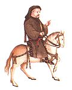
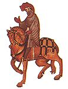
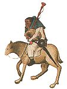
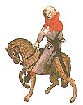
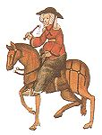
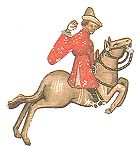
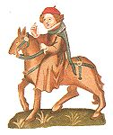

| カンタベリ物語 | |
| ジェフリー・チョーサー | |
| (2012) | |
〔これは『カンタベリ物語』二十五話の前おきとなる全体的な序曲である。万物がよみがえる喜ばしい春の叙景のあと、巡礼チョーサーはたまたま同行することになった二十六名の巡礼仲間の卓抜なポートレートを描いている。尊敬すべき「教区司祭」とその弟の「農夫」をのぞいて、聖俗ことごとくがユーモアたっぷりに揶揄されたり皮肉られている。書かれたのは一三八七年ごろ、詩人の筆がもっとも円熟した時期で、典拠にとらわれないのびのびした語り口が絶妙である〕

四月が雨でしっとりと、三月のかわきの根もとまでしみわたり、おしめりが草や木の脈をことごとくうるおすと、その霊気で花が咲いて出る。西風もまた甘い息吹きで、森や野のやわらかい若芽をくまなく目ざめさせた。また若い太陽は白羊宮での道のりをなかばほど走りおえ、小鳥たちは夜もすがら、まんじりともせず、メロディーをかなでている（自然はこれほどまでに小鳥をさえずらせるものなのか）。おりしも世の人は、巡礼の途につき、廻国巡礼者は諸国に知られたはるかな聖地めざして、異国の岸を行脚しようとあこがれる。わけても彼らは、イングランド諸州のはてから、カンタベリ〔殉教者聖トマス・ア・ベケットの墓所がある英国で最も大切な聖地〕を訪れ、病いのとき救ってくださったありがたい殉教者にお礼詣でをするのだ。
そんな季節のとある日のこと、いともけなげにこのわたしが、カンタベリ詣でを思いたち、サザークは陣羽織屋にわらじをぬいでいると、たまたま夜になってそのはたごやに、、なんと二十九人もの一団が到着した。ゆくりなくも道づれになったさまざまな身の上の人たちだが、ともに目ざすは、カンタベリ。部屋も厩も手広いうえに、下へもおかぬもてなしぶり。手短かにいうなら、日が暮れてから、わたしは一行の面々と言葉をかわしてすぐ仲間入り、翌朝は早く起き、申しあげたところへ旅だつ約束をした。
ところで、時間もひまもあり、話が先へ進まぬうちに、巡礼のおのおのが、どんな人物で、どんな身分なのか、またどんないでたちをしていたかを、わたしが見たままに、すっかりご紹介するのが筋道。そこでまず騎士からはじめることにいたします。
【騎士】がひとりいらした。りっぱな人物で、初陣のときからこのかた、ひたすら騎士道と、誠実と名誉、寛容と礼節を旨としてきた。主君のために雄々しく戦い、わけてもキリスト教国はもとより、異教の国々まで彼ほど遠くに駒をはせた者はいなかったし、その武勲はいつまでも賞讃のまとになった。アレクサンドリア攻略戦にも加わったし、プロシアでは、各国騎士との会食で、上座についたのも一再ではなかった。リトアニアヘ、はたまたロシアへと、同じ身分のキリスト教徒で、彼ほどしげく転戦した者はいなかった。グラナダではアルジェシラスの包囲戦に加わり、ベルマリンにも駒を進めた。リアスとアダリアにも攻めて入った。地中海では聖戦にあまた参加し、命を的に戦うことは十五たび、トレムセンではわれらの信仰のため、一騎うちでわたりあうこと三たび、常に敵をたおした。千軍万馬のこの騎士は、かつてパラティア王の手勢に加わり、トルコの異教徒と戦い、いちだんと勇名をはせたものだ。ましてや、武名高き人なのに、賢明にも立ち振舞いは乙女のようにおだやかで、どんなたぐいの相手にも、これまで、ついぞ無礼な言葉を吐いたことはなかった。まこと申しぶんなき騎士の鑑というべきである。ところがそのいでたちいかにと見れば、馬はみごとな駿馬であったが、なりはつつましかった。身につけた粗い木綿のじゅばんは、すっかり鎖かたびらでよごれていた。遠征からもどったすぐその足でお礼参りの巡礼にかけつけたからである。
騎士には、息子の若い【盾もち】が従っていた。恋をしている陽気な見習い騎士で、髪はこてでもあてたようにうねりのある捲き毛であった。年のころははたちぐらい、背丈はころあいで、身のこなしはすばやく、しかもたいへんな力もち。もうすでに、フランドル、アルトア、ピカルディーなどの外征に加わり、意中の佳人のお情けにあずかろうと、束の間の戦さとはいえ、雄々しく敵とわたりあった。牧場さながらに、白や赤の色あざやかな花模様の縫い取りで、飾りたてていた。ひがな一日歌をうたい、横ぶえを吹き、まるで五月のようにさわやか。上衣は短く、そでは長めで幅広にしてあった。乗馬はお手のもの、見事に乗りこなした。作詩作曲の心得もあり、馬上のやり試合やダンスもこなし、絵や文にも秀でていた。恋に身をこがしてのあまり夜の間は、ナイティンゲールほども眠らなかった。礼儀正しくけんそんで人の役にたち、食事のときは父の前にすわり、かわりに肉をきりさばいた。
騎士はほかに、【従士】をひとりだけ連れていた。このたびはこの流儀で旅をしたかったからだ。従士は緑の上衣と頭巾で身を固め、くじゃくの羽のついたきらきら鋭い矢をひとえびら、いとも大事そうにベルトの下にたばさみ、（まことに従士らしく、武具の手入れは心えたもの。矢羽根がしおれてだらりとなどしていなかった）手には強弓、頭は短くかりこみ、顔は茶色に日やけしていた。森での狩りについてなら、知らぬしきたりとてなかった、腕には派手な弓籠手をつけ、腰には刀と盾を帯び、別の側には槍の穂先のようにとぎすまされた、凝った作りの短剣をつるしていた。胸には銀の聖クリストファー〔森林、狩、天候の守護聖人〕像をきらめかせ、緑のひものついたつの笛を肩から斜めにつるしていた。いやまったく、この人物は根っからの森番らしい。
ひとりの修道女、それも【女子修道院長】もいらした。そのほほえみはいともひかえめでおしとやか。口になさる誓いの言葉も「聖ロイ〔フランドル地方出身の七世紀の聖人で誓言を拒んだことで有名〕にかけて」というのがせいぜい。その名もマダム・べにばらと呼ばれていた。鼻にかかったやさ声で節まわしよく、ありがたいお祈りを誦せられた。パリのフランス語は知るよしもなかったが、ストラットフォード・アト・ボーウは尼寺流のフランス語なら、いとも優美に口にされた。食事の作法もそつがなく、唇からかけらをおとしたり、やたらソースで指をぬらしたりはなさらない〔当時はまだナイフやフォークが用いられていなかった〕。食べ物をたくみに口に運び、しずくを胸にこぼさぬように気を配った。礼儀作法をまず第一にたしなまれていたわけだ。上唇を念入りにぬぐうので、飲み物を口になさるときも、コップにはぎらのかけらも浮かばなかった。いともしとやかに食べ物に手をさしのべられた。まことに愛想がよく快活で、人あたりも上々。よろず宮廷のみやびごとにならい、物腰はゆったりと、しんそこ人にうやまわれるよう骨をおった。
ところでこの尼僧のやさしいお心ばえといったなら、わなにかかったはつかねずみが、死んでしまったり血を流しでもしようものなら、涙を流すほどのお嘆きよう。小犬を数匹、焼肉、ミルク、白い上等のパンのご馳走づくめで飼っていた。ところが、一匹でも死んだり、人に棒でしたたかにたたかれたりすると、いたく嘆き悲しまれた。まことに、あわれみとやさしさを絵に描いたようなお人柄だ。頭巾のひだはしゃんとしており、鼻すじは通り、眼はつややかに青味がかり、加えて小さな口もとはやわらかく赤かった。わけてもひたいは秀でていて、親指と小指をはったぐらいの幅は優にあっただろう。まずは、ひねた育ちとはとても申せないところだ。お召しになった外とうも、あか抜けた作りと見うけられた。緑の親珠をとりまぜた、小つぶなさんご珠のじゅずを腕にかけ、そのうえに、きらきら光る金のブローチをつけておいでだ。その面にはＡの花文字が冠せられており、「愛はすべてを征服する〔ウェルギリウスの『エクローグ（田園詩）』にある有名な句〕としるされていた。
介添の【修道女】ひとりと、【司祭三名】がお伴であった。
【修道士】がひとりいた。人なみはずれた傑物で、狩猟ずきな見まわり役。修道院長にもふさわしい男まえ。駿馬をたくさん厩に蓄え、騎馬で外出するときは、馬勒につけた鈴の音が、そよ吹く風に運ばれて、おのれがあずかる別院の、チャペルの鐘より澄んだ音で、りんりんりんと鳴りわたった。聖モールや聖ベネディクトの掟など、古くさくていささかきゅうくつ。昔のしきたりなどさておいて、新しい流行には目がなかった。狩人は聖ならずなどといういましめは、どこ吹く風だ。不見識な僧は、水なき魚のごとしとは、つまり僧院から出歩く僧をいうのだが、そんな教えは、牡蠣ひとつの値うちもないと考えていた。まことにもって、ごりっぱなお考えではある。だいいち、堂ごもりして四六時中、しんねりむっつり書物をにらみつけ、勉強しすぎのあげくの果てに、頭を狂わせてしまったり、聖アウグスティヌス〔初期キリスト教会の指導者で労働を重視した〕の命をかしこみ、手をよごしてあくせくしたって、いったいなんの役にたつというのか。はたまた、この世になんの益があるのだろうか。骨折仕事はアウグスティヌスさまにお任せだ！ こういうわけでこのご仁、狩りにすこぶるご執心。空とぶ鳥のようにす早い猟犬をもち、馬を駆って野うさぎを追うのが生き甲斐だから、どんな無理をしたってやめたりはしない。袖口につけた灰色のリスの毛皮は、この国きっての上等品と見た。頭巾をあごの下にとめるのに、精巧な金細工のピンを用いており、その太いほうの端は、縁むすびになっていた。頭は禿げてガラスのようにピカピカだし、顔はまるで油を塗りつけたようにてっかてか、さてもでっぷりとかっぷくのいいお殿さまだ。大きな目玉はぎょろぎょろと、まるで大釜のかかっている炉のように顔のなかでかっか燃えていた。長靴はしなやかだし、馬は堂々としていて、まことに水ぎわだった僧正ぶり、責めさいなまれた幽鬼のように、青ざめてなどいなかった。焼肉では、わけても、脂ののった白鳥がお気に召した。乗っていたのは、木の実色の栗毛であった。
放らつで陽気な【托鉢修道士】がいた。おのれだけの巡回区域をもつ大立者。合わせて四つある托鉢修道会〔カーミライト（白衣）、オーガスティニアン（黒衣）、ドミニカン（黒衣）、フランシスカン（灰色衣）の四派〕のなかでも、彼ほど世間話やお世辞の巧者はいなかった。お手つきの若い娘たちを、身ぜにをきってあまた嫁がせた。教団にとっては重要な大黒柱。なわばり一帯の地主たちや、町方の金もちのご婦人がたには、とくに気に入られ、ごひいきにあずかった。それというのも、修道会の免許もちだから、教区司祭とくらべてはるかに懺悔聴聞の力ありと売り込んでいたせいだ。いともやさしく懺悔に耳をかたむけ、心よく免償を申しわたした。わりよいお布施にありつけそうだとねらいをつけたところでは、罪ほろぼしの難行を、いともたやすく手かげんした。貧しい修道会に寄進することは、つまり悔い改めた証拠。寄進さえしたら悔俊したも同然なり、と広言してはばからなかった。
あまりに心がかたくなで、いかに痛悔していても、泣けない人も多いゆえ、泣いたり祈ったりはやめにして、貧しい托鉢修道士に寄進をこそなすべき、ということなのだ。頭巾の中の袋には、べっぴんさんたちにくれてやる、ナイフやピンがいつもたくさんつまっていた。のどの良さは折り紙つき、琴のひきかたりもまた格別で、バラッドを歌わせればぞうさなく賞品をさらった。うなじは百合の花のように白く、しかもレスラーなみの力もち。居酒屋ならどこの町のもご存知だし、宿の亭主や女給さんたちを、癩患や乞食女よりなじみにしていた。つまり、この坊さまのようにりっぱなご仁が、らい病やみや物乞いばらとお近づきになるのは、ご身分がらを考えても、ふさわしからぬこと。こんな文なしどもと交われば、こけんに関わるし、だいいち、実入りになりはしない。そこでおつきあいは、もっぱらお大尽と食品商に限っている。
というわけで、およそもうかりそうなところでは、どこでも辞を低くして相つとめた。まず、これほどまめな人物はほかにはあるまい。まさに、修道会ずい一のもらい頭であった。（会には一定の許可料をおさめ、仲間がなわばりに入れぬようにしてあった）たとえ相手が、靴半足だにもたぬ赤貧洗うがごとき後家さんでも、「初めに（言ありき）」とばかりありがたそうにお経をとなえて、立ち去るまえに小銭ぐらいはせしめていた。まやかしのもらいのほうが、正当な収入を上まわっていた。そのうえ、小犬のようにとびはねもした。法廷外の調停日には大活躍。そこでは、貧しい学僧さながらに、すりきれた衣をまとう修道士とは大違い、博士さま、法皇さまかと見まがうばかりの身ごしらい。ハーフ・コートは二重織り、鋳型から出てきたばかりの吊り鐘のように、ふっくらしていた。英語を甘くひびかせようと、いくらか舌たらずなしゃべり方をするのもきざ。たて琴に合わせて歌うときは、まるで霜夜の星そっくりに、目をぱちくりまたたかせた。この気高き托鉢修道士はヒューベルトと呼ばれていた。
ふたまたのあごひげをつけ、まだらの服を着て、誇らかに馬にまたがった【貿易商】がいた。頭にはフランドル産の海狸の毛皮帽をかぶり、長靴はすっきりしたとめ金つき。もったいぶって意見を述べたてたが、話のおちはいつももうけ話。なにはともあれ、ミドルバラからオーレウェル〔ミドルバラはオランダの港。オーレウェルはミドルバラの対岸、英国サフォークのイプスウィッチ近くの港町〕までの海上は、守って欲しいと願っていた。シールド金貨の闇両替はお手のもの。このりっぱなご仁、よろずぬかりなく才覚を働かせた。それゆえこの男に借財があるなどとだれも気づかなかった。取引きするにも借金するにもそれほど堂々とやってのけたからだ。そのうえ、まことにりっぱな人物であったが、実をいうと、この人の名はわからない。
それからまた、オックスフォードの【神学生】がいた。長年論理学に身をいれてきた人だ。馬はまるでくま手のようにやせこけていたが、あるじのほうも肥えているとは申せない。いや、ひどくやつれて思いつめた表情をしていた。上っぱりの短いコートはすり切れて、糸もあらわ。それというのも、この人はまだ聖職にもついていなかったし、また副業につくほどしゃばっ気もなかったからだ。枕もとには、赤や黒の装丁の、アリストテレスとその哲学についての本が、二十冊ばかり並べてあった〔手写本の時代であり、六冊分の価格で家屋が購入できるほど貴重であった〕。高価な衣服や、ギターやにぎやかなたて琴より、書物のほうをありがたがったから。ところがこの人、学問の奥儀をきわめたはずなのに、銭箱は空も同様。それでも友人がみついでくれるあり金を、すっかりはたいて書物と学問につぎこみ、学費を都合してくれる人たちの霊のため、ひたすら祈りをささげた。学業をまず第一に心がけ、むだ口を慎み、いやしくもしゃべることは折り目正しく簡明で、しかも意味深長。口をひらけばすなわち道を説き、よろこび学び、よろこび教えた。
ぬけ目なく賢い【上級裁判所弁護士】がいた。セント・ポール寺院の前庭へは通いなれた腕ききの逸材〔ここで依頼人たちとの談合がなされたといわれている〕。慎重な人物で尊敬の的であった。賢い口ぶりからも、さもありなんと思われた。勅任状と委任状により、巡回裁判ではしばしば判事役。学識と名声のおかげで、お礼の金子や衣類は山をなした。手広く土地を買いつけることでは天下無類。彼の手にかかれば、ことごとく永代所有となる〔土地財産の世襲は昔からの貴族や地主に限られていた。この弁護士は巧みな法律操作で購入した土地の永代所有権を得、紳士階級の仲間入りをねらっていたのである〕。彼の譲渡証書が無効になることはまずなかった。これほど忙しい人もいなかったが、それでもなお実際よりせわしげに振舞っていた。ウィリアム征服王の昔から伝わる訴訟や判例の控え帳をことごとく備えていた。そのうえ法律文書の作成は心得たもの、だれにもけちはつけられなかった。なにしろ、すべての法令をそらんじていたのだ。まだら模様の上着に、小さな金具のついた絹の帯をしめただけ、意外につましいいでたちで馬に乗っていた。それ以上とりざたするほどの服装ではなかった。
弁護士の道づれに【地主】がいた。ひげはひな菊のようにまっ白で、多血質のあから顔。朝食にはぶどう酒にひたしたパンが大好物。常ひごろ楽しく暮らしていた。快楽をきわめることこそつまり至福、と主張するエピキュロスの跡とりのようなご仁。れっきとした一家の主人で、もてなし好きなことは、さしづめこのあたりの聖ジュリアン〔旅人の守護聖人〕といえるだろう。パンやビールはおきまりの銘柄、ぶどう酒の貯えで彼の右に出る者はまずいなかった。邸には、魚や肉の焼いたのが絶えたためしがなく、思いつくかぎりの山海の珍味が、まるで雪のように降り積もった。献立は季節がわり、鳥かごには肥えたうずらがひしめき、いけすには鯉やカワカマスが数知れず。ソースがぴりっときいていなかったり、食器がそろっていなければ、料理人こそいい災難。広間の食卓は作りつけ、テーブルクロスもかけられて、ひねもす用意ができていた。治安判事会議では座長をつとめ、州選出議員になったのも一再にとどまらない。短剣と絹づくめの財布が、朝のミルクのように白い帯からさがっていた。州の代官や会計検査官をつとめたこともあった。これほど有能な郷紳がまたといるだろうか。
【小間物商、大工、織物師、染物師、つづれ織業者】が勢ぞろい。共に格式高い教区組合の、そろいの服をきて、ばりっとした仕たておろしの装具で身ごしらえ。ナイフのさやは真鍮ではなく総銀ばり。帯も財布もすっかり垢ぬけて上じょうの出来ばえ。ギルド集会場で開かれるロンドン市会の〔新興市民階級であるギルドの集会場が同時に市会議場として用いられた〕ひな段にすわるのがお似合いの、押しも押されもせぬ市民の面々。市参事会員にふさわしい、いずれ劣らぬ知恵者ぞろい。財産も収入もたっぷりだし、奥方たちもまんざらではなさそうだ。その気にならなかったら奥方たちどうかしている。「奥さま」などとたてまつられて、前夜祭には先頭をきり、女王さま然とマントを他人にもたせて歩くのは、なかなかいきなものなのだ。
組合員たちは、この旅に、【料理人】をひとり従え、鶏肉を骨がらみ、ぴりっとした薬味と香料の根を加えて煮こませた。この男、ロンドン仕込みのビールの銘柄を飲みわけるのはお手のもの。あぶったり、煮たり、焼いたり、フライにしたりはもとより、ポタージュを作り、肉のパイを焼くのもおはこであった。だがワクいことに、この男、すねに悪いできもの〔原文の「モルマル」は不潔な習慣、飲酒、淫行によって生じると考えられていた〕をもっていた。鶏肉入りブラマンジェールならとびきり上等品を作った。
はるか西国に住む【船長】がいた。なんでもダートマスの出だということだ。やっとのこと駄馬にまたがり、身にまとうは膝までとどく粗い毛織りのガウン。くびからひもでつるした短剣を、こわきにひそませていた、夏焼けで顔はすっかり赤銅色。折り紙つきの善人で、ボルドーからのもどりには、荷主の商人が眠っているすきに、たっぷりぶどう酒のたるぬきをやってのけた。良いも悪いもあらばこそ、けんかをして形勢有利とみるや、どこぞへなり勝手に泳いで帰れとばかり、相手方を海へ投げこんだ。ところが、潮の満ち引きや、海流の計算、船をとりまく暗礁や港湾の知識、月の具合やコンパスの読みにかけては、イギリスのハルからスペインのカルタゴにかけて、この男の右に出るものはなかった。仕事ぶりは豪胆だが、ぬかりはなかった。嵐のたびにあごひげをゆさぶられてきたのはだてではない。スウェーデンのゴットランド島から、スペインの地の果て岬にいたるすべての港、ブルターニュとスペインの入江なら、掌を指すごとく知っていた。船の名は、その名も優しいモードレイン。
【医学博士】がひとり加わっていた。医術や外科術にかけてなら、世に並ぶものなき腕達者。天文学の基礎があったから、星占いの秘術をつくして治療の時間を割り出したり、患者にかなった護符をあてがう上昇宮を占うにもそつがなかった。熱、冷、湿、乾のいずれによるものなりや、病原はいずこにして、いかなる体液の作用なりやなど、万病のいわれを知っていた。この人、まこと申しぶんなき町医者の鑑ではあった。病因がわかり、病根をつきとめると、時を移さず加療をした。
すかさず、薬種商に消化剤や練り薬を届けさせた。お互いもちつもたれつの仲だったから。そもそもふたりのつきあいは、きのうきょう始まったものではない。医術の神さまエスキュラピウス、ディスコリデスにルーファス、大先輩のヒポクラテスやハリーにガリエン、セラピオンやラジス、アヴィセンやアヴェロイス、ダマスシエンやコンスタンティン、イギリスのベルナルドやギャデスデン、それにギルベルティンなど古今の権威に通じていた。食事は腹八分目、大食はさけて、栄養たっぷり、消化良好のものに限った。聖書の勉強はほんの申しわけていど。衣服は赤と青のまだらじま、手織絹や羽二重を裏地にしていた。どっこい、なかなかのしまり屋で、疫病のときころげこんだお宝は、そっくりためこんでいた。医療において黄金は強心剤、そこで、とりわけ金貨を大切にしたという次第。
【バース近在のしっかり者のおかみさん】がいた。いくらか耳が遠いのが玉にきず。機織にかけてはイープルやゲント〔いずれもオランダの毛織物業の中心地〕の職人顔まけの名手であった。教区のどこをさがしても、このおかみの先にしゃしゃり出て、献金をする女はまずいない。そうしようものなら、おかみさんかっとばかりにとりのぼせ、情け容赦もあらばこそ。頭巾の生地はとびきり上等。日曜日に頭にいただく代物は、十ポンドがらみあっただろう。緋と燃えるまっかな靴下をぴっちりとめてはき、靴はしなやかなおろしたて。目鼻だちはぱっちりとべっぴんさんで、顔の色は桜色。隅にはおけない達者な人で、これまで教会の門口で夫をむかえること五たび〔中世の結婚式は教会の門口で行なわれた〕、それも若いときの男友だちは数のほか。だがまあ、その話はいまは遠慮しておこう。イェルサレムに詣でたのは三たび、異国の川をいくたびも越えてきた。ローマにもボローニャにも、ガリシアのコンポステラ大聖堂にも、それからケルンにも詣でている。さすらいの旅は板についたもの。
実をいうとこのおかみさん乱杭歯だった〔中世の人相学は乱杭歯をねたみ深く無責任、ぜいたく好みで旅行好き、疑い深くうそつき、さらに大胆で好色の相であるとしている〕。側対歩の馬にゆったりまたがり、見事な頭巾のそのうえに、盾か標的かと見まがうばかりの、つばの広い帽子をのせていた。豊かなヒップまわりにひざかけをめぐらし、足には鋭い拍車をつけていた。人なかでくったくなく笑ったりしゃべったりした。恋の傷手を療す術も心得ていただろう。昔ながらのこの道については、玄人はだしだったから。
すぐれた聖職者がひとりいた。【村の司祭】で、貧しかったが、信仰と善を積むことでは豊かだった。深く学んだ学僧で、キリストの福音を正しく説き教区民を親身になって導いていた。親切なうえに驚くほど勤勉で、逆境にあってもじっとこらえた。事あるごとにこの人は、それを身をもって示してきたのだ。十分の一税滞納のかどで、破門することをことさら嫌い〔破門はまず教会の秘蹟に加わる資格を失うこと、ついで監禁を意味した。前者の場合でも、いわば村八分となり社会生活はできなくなる〕、まぎれもなくかえって近在の貧しい教区民に、おのれが受けた寄進やら財産のなかから、わかち与えていた。つまり、無欲恬淡な人だった。
教区は広く、人家はまばらに離れていたが、雨の日も雷の日も、病いにも不運にもめげず見舞ってやった。杖を手にして、富めるも貧しきもわけへだてなく、教区の端まで足を運んだ。まず自ら行ない、しかるのち人に説くという気高い手本を、子羊たちに垂れたわけだ。その教えは福音書から得たものだが、司祭はさらに次のようなたとえをつけ加えた。もし黄金が錆びたなら、鉄はいったいどうすりゃいいのだ、と。つまり、頼みの綱の坊さまがよごれたなら、無知な俗人が錆びるのも無理からぬこと、という次第。もし僧侶にして心あらば、羊飼いがよごれていて、羊がきれいなのは、恥ずべきことなのだ。まさに僧侶たるもの、身を持すること清くして、羊たちに世渡りの手本を示すべきだ。おのれの教区は傭いの助祭に任せておいて、羊を泥まみれにさせたまま、ロンドンはセント・ポールズ寺院くんだりまで足をのばし、金持ちの祈祷堂〔有力者やギルドは大寺院のなかに小祈祷堂を持っていた〕にやとわれて法事をしたり、組合のおかかえ司祭になったりなどしなかった。そうはしないで地元に住みつき、狼どもが悪さをしないよう、羊の囲いをしっかり守っていた。
これこそまことの羊飼い、金で傭われているのではなかった。そして、清らかな有徳の士であったけれど、罪人をさげすみはしなかった。話をするにも横柄だったり、もったいぶることなく、つつしみ深く親切な説教ぶり。正しい生活とりっぱな手本で、民を天国に導き入れることこそ、この人の務めではあった。だが、かたくなな人がいるとなれば、だれであろうと身分を問わず、厳しくしかりつけた。この人にまさる有徳の僧がいるわけがない。はくをつけたり、たてまつられるのは求めるところにあらず、さりとて、つまらぬあら捜しは控えていた。ただひたすら、キリストと十二使徒の教えを説くことを旨（むね）としたが、おのれがまず教えに従ってみせた。
司祭のつれは【農夫】、その弟であった。下肥を荷車で運ぶこと数知れず。まじめで善良な働き手。平安とまったき愛の生活を送っていた。楽しいときも悲しいときもへだてなく、心をこめてまず神を、ついで隣人を、わが身同様に愛した。キリストのおんため、すべての貧者になりかわり、力の許すかぎり手間賃ぬきで、麦をうち、うねを切り、溝を掘ってやった。十分の一税は、おのれの夫役や貯えのなかからとどこおりなくおさめていた。この人は、はんてんをまとい、雌馬に乗っていた。
一行にはまだほかに、荘園管理人や粉屋、召喚吏に免償説教家、それに賄い方とわたしがいた──ほかにはもういない。
【粉屋】はずぬけて屈強な男で、筋骨はりゅうりゅう。レスリングの試合とあれば、どこへなりと駆けつけて、いつも賞品の牡羊をさらい、力のほどを示したものだ。猪のくびで肩幅は広く、ごつい体つきをしていた。この男が持ちあげれば、どんなドアも蝶つがいがはずれ、走っていて頭をぶつければ、いっぺんでこわれてしまった。ひげは豚か狐のように赤く、鋤のように末広がり。鼻のいただきに疣があり、豚の耳毛のように赤いこわ毛がひと房つっ立っていた。鼻の孔はまっくろで大きく開いていた。剣と盾を腰にさげ、口は大かまどほどもあった。かしましい声でへらず口をたたいたが、それもたいていは罰あたりな話、みだらな話ばかりであった。客の麦をくすねたり、手間賃を三倍もせしめたりするのは朝めし前のこと。それでも黄金の栂指をもつ正直粉屋〔「正直粉屋は黄金の栂指をもつ」という諺にちなむ。栂指により粉の品質を判定するという原意が皮肉に用いられている〕のふりをしていた。白いコートと青い頭巾を身につけていた。バグ・パイプを吹きならすのが上手で、その音でわれらをひきい、町からつれ出した。
法学院の上品な【賄い方】がいた。ぬけめなく食品を買いつけるためには、仕入れ係たちがもって手本とすべき人物。現金仕入れにしろ、割符でつけにするにしろ、常に購入の好機をねらい、人を出しぬき条件を有利にした。かかる無学な男の分別が、数ある識者の知恵をもしのぐというのは、またなんという味な神さまのおとりはからいであることか。彼が賄っていたのは三十人に余る先生がたで、法律はもとより専門家だし、目はしの利いたお歴々だ。わけても、この寮に住む十二人ほどは、英国中のどこの貴族の家令になっても、家財や領地をきりもりできる逸材ぞろい。殿ご乱心というのでもなければ、収入だけで借金もせず、体よく暮らしをたてさせたり、おぼしめし次第では、できるかぎりきりつめて、いざお家の一大事というときに、州全体を救えるようとりしきれるという面々だ。しかもこの賄い方は、そっくりこの先生がたの鼻をあかしていたのだ。
【荘園の管理人】は、やせて胆汁質な男であった。あごひげはすっかり剃りおとし、髪は耳のぐるりを丸くそりこみおつむの前の方を僧侶のように刈りこんでいた。すねは棒切れのようにのっぺり細長く、ふくらはぎなどお目にかかれようもなかった。穀倉や穀物箱の管理なら百もご存知、この男をやりこめる検査官はいなかった。照るにつけ曇るにつけ、種や穀物の作柄の読みはたしかなもの。ご主人の羊や牛、乳牛や豚、馬などの家畜類、それに家禽の類は、いっさい彼がおさえていた。ご主君が二十歳になってからこのかた、契約に従い会計報告をしていた。
この男に支払いを滞らせておける者などいなかった。支配人も牧夫も作男も、その小細工やたくらみは、すっかり見すかされていたので、まるでこの男を死神のようにいみ嫌った。人の近よらぬ草原に、みごとな邸をかまえていた。敷地には緑の木々が影をおとしていた。蓄財にかけてはご主人より役者が上、こっそりしこたま貯めこんでいた。もとを明かせばご主君の持ち物を、献上したりお貸ししたりで、ごきげんをとり結び、礼をいわれたあげくには、衣料や頭巾までいただいた。若いころ手によい職をつけておいた。職人としてもりっぱなもの、大工であった。この人は、とても見事なコッブ種の馬にまたがっていた。スコットと呼ばれた連銭葦毛であった。そら色の長い上っぱりを着て、腰に錆びついた刀をつるしていた。ノーフォークはバルデスウェルの町はずれの出であった。托鉢僧のように、上衣を帯のところでたくしあげ、いつもわれらのしんがりをつとめていた。
一行には宗教裁判所の【召喚吏】がいた。まるで、金ときの火事見舞のような赤ら顔。顔中できものだらけで目が細くなっていた。さながら雀のようにほれっぽく好き者だった〔雀は伝統的に好色であると考えられていた〕。眉はかさぶたで黒ずみ、ひげは抜けてまばらだった。このご面相に子供たちは恐れをなした。水銀にしろ一酸化鉛にしろ、硫黄にしろ硼砂にしろ、白鉛にしろ酒石軟膏にしろ、できものを浄め焼くはずの膏薬にしろ、白っぽい吹き出物や、頬に居すわった根太には、とんと効きめがなかった。にんにく、ねぎ、にらくさがお気に入り、飲むのがこれまた血のようにまっかな強いワイン。いっぱいきこしめすと、まるで狂ったように、しゃべったりわめいたり。
そのうえ、したたか酔がまわると、もっぱらラテン語だけを口走るのだ。といっても、ふたことみことの片ことだけで、なにかの法令集から聞きかじったまでのこと。ひねもす聞いてる言葉だから、べつに不思議なことはない。それに、かけすにしたって、「ワッテ」〔おうむが「オタケサン」といえるように、かけすも「ワッテ」（＝人名ウォルターの略）と教えこむことができる〕というぐらいなら、法皇さま顔まけにやってのけられるのはご存知の通り。でもほかのことをためしてみれば種はすっかり底をつき、わめくのはもっぱら、「クエスチョ・クイド・イウリス」（本件はいかなる条項にあてはまるや？）のいってんばり。
話のわかる親切者、これにまさる男はほかにいない。ワインの一リットルも献上すれば、どこぞの善人が妾をかこっても、一年ぐらいは目をつぶり、お目こぼし。おのれもひそかにひとつ穴のむじなだったのだ。よい鴨をかぎつけると、金に未練をもちさえせねば副司教の破門など、なにも怖がることはない。罰を喰うのは財布の中身、「財布こそ副司教の地獄なり〔下級宗教裁判所の長は副司教であった〕」とほざいたものだ。ところがそれはまっかな偽り。罪あるものは、すべからく破門を恐れるべきである。赦免が人を救うように、まさに破門は人を殺すものだから。それから拘引令状を見くびってはいけない。この男、独特のやりかたで、管区の若者や娘たちを思うさま手なづけて、彼らの秘密をにぎり、あれこれ口出しをしていた。さしずめ飲み屋の看板竿むきの大げさな花輪を頭にいただき、大きなパンを盾がわりに持っていた。
彼とくつわを並べていたのは、相棒の【免償説教家】〔通例「免罪符売り」と訳される。免罪符は聖職者が罪人に課する償罪行為（苦業）の代償であったが、罪障そのものの消滅に効果があると解されたため良く売れた〕、ローマからまっすぐやってきたルンシヴァル派〔スペインの同地に本山がある宗派で、ロンドンのチャリングクロスに別院があった〕のれっきとした人だ。彼が声高らかに、「いとしき人よ、来れやわれに」とやると、召喚吏が太いバスでそれに和した。そのろうろうたるひびきは、トランペットも遠くおよばなかった。この説教家の髪は、蟻のように黄色く、ひとかせの麻糸よろしくぺったりさがっていた。なけなしの毛をかろうじて、あちらこちらにひとよりずつ、肩のあたりにひろげていた。それでも気取って頭巾はかぶらず、くら袋のなかにつめこんでおいた。当世風な旅支度のつもりでいたが、帽子をのぞけばざんばら髪で馬に乗っていたのだ。目は野うさぎのようにぎょろりとしていた。帽子には聖ヴェロニカのハンケチ〔聖遺物のコピーでローマヘの巡礼たちが用いた〕を縫いつけていた。ローマから着いたばかりほやほやの免罪符が、ぎっしりつまった袋を膝に乗せていた。まるで山羊のようにか細い声を出した。ひげはなかったし、これからも生やすつもりはあるまい、そりたてのようにつるつるだ。さしずめ馬でいえば、去勢馬か雌馬といったところ。
だが、仕事にかけては、ベルウィックからワーレにかけて〔イギリスの北から南まで〕、まずこの男ほどの免罪符売りはいないだろう。袋のなかには枕カバーが入れてあり、これぞマリアさまのヴェールでござるとか、ペテロが海を渡らんとしてイエスさまにひきあげられた、あのときの舟の帆の切れはしはこれじゃ、などとふれこんだものだ。ほかにも飾り玉をやたらちりばめた真鍮の十字架や、豚の骨をガラスの箱におさめて持っていた。ところが、こんな御遺物を種に、貧しい田舎司祭を捜し出すと、その人のふた月分にまさる実入りを、たった一日でかき集めた〔このような司祭にとり入って人集めをしてもらい、教会堂を借りて仕事に励んだようだ。〕。かくして、心にもないお世辞や甘言をろうして、司祭や教区民をたばかったのだ。
それはさておき、しまいに事実をいうと、このご仁は、教会ではかけがえのない聖職者。聖書や聖者伝を読むのも巧みであったが、とりわけ献財頌はおはこであった。これを歌いおわれば次はお説教、舌をとぎすまし、はりきって一席ぶち、たんまり喜捨をいただこうという魂胆だったから。それでこそ歌声もうきうきとよくひびくというものだ。
さてこれで、あっさり手短かに、巡礼たちの身分といでたち、その数と、またサザークの鐘屋とは目と鼻の先にあるこのりっぱな陣羽織屋に勢ぞろいした目的を、お話しいたしました。ところで次は、ここにわらじをぬいだ夜、われらがなにをしたかご説明する潮どきのようです。そして、そのあとで旅のようす、それからの巡礼の一部始終をお話しすることになりましょう。だが、なにはさておき、みなさんのご好意にあまえてお願いしたいのは、この物語のなかであけすけな言葉づかいで一行の言動をお話ししたり、あるいは、彼らの言葉をそっくりそのままお伝えしたからといって、このわたしを不作法だなどと責めないでいただきたいことです。わたし同様みなさんもよくご承知のごとく、人の話をくりかえすときには、できることなら、ひとこともおろそかにせず伝えなければならぬのです。さもないと、嘘をつくか、事実を曲げるか、勝手な作りごとをするかになってしまいます。たとえ元の人が、おのれの兄弟であろうとも、手加減は許されません。ひとことずつそっくりそのまま伝えねばならぬのです。
キリストご自身でさえ、聖書のなかで、ずいぶんと歯に衣を着せぬお話しようをなさっておいでだが、だからといって、それが野卑だなどとは申されません。お読みになれる方ならおわかりでしょうが、プラトンもまた、言葉は行ないの従兄弟たるべし、といっております。さて、いまひとつご容赦願いたいのは、この物語のなかで、わたしめが、お歴々を、正当なご身分の順に並べなかったことでございます。なにしろ、非才なもののすることゆえ、お目こぼし願いあげます。
【宿の亭主】はわれらひとりびとりをねんごろにねぎらい、すぐ夕げの座につかせ、こよなき珍味でもてなしてくれた。一同きき酒にのどをならした。ましてや亭主は貫録たっぷり、大宴会場での司会者にもふさわしい人物であった。目の鋭い大男、チープ界隈の市民でこれほどの大立者はいなかった。言葉づかいはあけすけで、しかもぬかりがなく、世情によく通じていたが、そのうえ、男らしさに不足はなかった。さらにまた、底ぬけに陽気な人で、夕食後勘定の払いもおわると、愛嬌をふりまきはじめ、とりわけ愉快な話をしてこう告げた。
「さてみなさん、ほんとうによくおいでくださいました。心から歓迎いたします。まったくのところ今年に入ってから、これほど愉快なお仲間を、いっぺんに当館におむかえしたことはございません。できることなら、お気晴らしのお役にたちたいと思っていましたが、旅のつれづれをおなぐさみもうしあげるその気晴らしを、たったいま思いついたところです。しかも費用はまったくかかりません。
みなさんはカンタベリヘお出かけのよし、旅のご無事を祈っていますよ。なにとぞ、ありがたい聖者さまのご利益がありますように。それで、道中ではお話などしてお楽しみなさるご予定でしょうな。いや、まったく、石ころみたいにおしだまっての道中は、味もそっけもありませんからな。そこで、はじめいいましたように、このわたしが、退屈しのぎに気晴らしをして進ぜましょう。よってご異議なく、わたしの考えに従い、わたしのいう通りに動いてくださるなら、万一あす旅立って楽しくございませんでしたら、死んだおやじの霊にかけても、きっとこのそっ首をさしあげましょうぞ。さあ、もうとやかくいうのはやめにして、手をあげていただきましょう」
談合はほどなくまとまった。さかしらにあげつらうほどのことはあるまいと思ったからだ。それで議論はうちきって、亭主に同意し、考えたままを話してくれるようにたのんでみた。
「みなさん」と彼ははじめた。「さあ、よく聞いておくんなさい。ただし馬鹿にしたりなすっては困りますよ。かいつまんで申しあげると、つまりこうです。道中のつれづれに、おのおのがたに、ふたつずつ話をしていただくのです──カンタベリヘの道すがらにですぞ──そしてまたもどりの道であとふたつずつ面白い昔話を願います。それでいちばん上手だったお人、というのはいちばん身の為になり、しかもなぐさめになる話をされた方には、カンタベリからもどったら、この宿の、この床柱のそばにすわっていただき、みなの費用で夕食を召しあがってもらいましょう。さらにいっそうお楽しみねがうため、かくいうやつがれも、費用は自前で同道いたし、ご案内役をつとめましょうぞ。どなたであれ、わたしの指図にさからう方は、一行の旅費をすっかり払っていただきますよ。もし、それでよろしいとお認めくださるなら、もうなにもいわずに、ご賛成くださるよう。すぐ身支度にかかりますから」
この申し出は受け入れられ、一同よろこんで誓いをかわし、提案通り亭主がわれらに采配をふるい、話の審判になって判定を下し、しかるべき値段で夕食会をもうけてくれるようお願いし、よろず、彼のとりきめに従うことに満場一致で大賛成。そのところですかさず酒が運ばれてきた。われらはそれを飲むと、めいめいすぐさま床についた。
つぎの朝、日がまさにのぼろうとするとき、はや亭主は起きいでて、時を告げるおんどりよろしくわれらを一団にとりまとめた。そこで一同並み足よりはやや急ぎめに、聖トマスの水飲み場まで駒を進めた。そこまでくると亭主は手綱をひき、かく告げた。
「みなさん、ちょっと耳をおかしくだされ。約束はおぼえていらっしゃるでしょうな。さあ、思い出していただきますよ。夕べのお題目が朝のお題目とかわりがなければ、さあ、どなたに皮切りの話をしていただくとするかな。わたしの指図にさからうお方は是が非でも旅費をすっかりまかなっていただきましょうぞ。さて、あまり先へ進まぬうちに、くじを引いていただきましょう。いちばん短いのが当たった方に、まず始めてもらいましょう。さあ、騎士どの」と亭主はすすめた。「騎士どの、わが君、わが殿、ひとつ引いておくんなさい、約束ですからな。こちらへどうぞ」と彼はすすめた。「尼僧院長さま。それから、あんた、学生さん。おずおずしたり、考えこむのはいいかげんになされ。さあ、みなさん、手を出しておくんなさい」
いっせいにみなはくじを引き、結果を短く申しあげると、なんの因果か運命か、偶然くじは騎士に当たった。一同はやんやと大喝采。そこでお聞きおよびの談合通り、当然騎士は話をせねばならなくなった。これ以上言葉は要しまい。このりっぱな騎士は、もともと賢く、すなおな人だから、この結果を見るとすすんで誓った約束を守るため口をひらいた。
「さてもかたじけなきくじ運かな。どうやら拙者が皮切りということだから、さあ馬に乗り、拙者の話をお聞きめされ」その言葉を合図に、われらは馬にまたがり出発した。騎士は顔をほころばせて、すぐ話をはじめ、こんな物語をした。
〔くじにより二十四話の最初の語り手は騎士にきまった。彼は二人の貴公子と一人の姫の香り高いロマンスを語りつくす。異教時代の物語であるが、人情と倫理観はキリスト教的普遍性を示している。典拠は一万行の長編、ボッカチオの『テセイデ一族物語』、それを二二五〇行の独創的な名作に仕立てあげている。執筆はおよそ一三八二年から八七年の間、『カンタベリ物語』時代の比較的早いころとされている〕

第一部
スキタイ人との激戦を終え、勝利の戦車に乗り、いまや故国へ近づく――（スタティウス）
古い物語によると、その昔テセウス〔都市国家アテネの王、伝説的英雄。本篇の他の人物のほとんどと同じようにギリシア神話の人物〕という名前の公爵がいた。この人はアテネの君主で統治者であった。当時、天下無双の征服王で、知恵やら武勇やらで、あまたの富国を手中に収めていた。その昔スキタイと呼ばれていた女人国フェメニア全土を攻略して、そこの女王イポリタを妃とした。そこで公爵は妃を伴い威風堂々とアテネに凱旋した。イポリタの妹エメリーもいっしょだった。このように気高き公爵には、勝利の音楽が鳴り響くなか、武装した兵士をしたがえてアテネの都へと駒を進めていただくとしよう。
もちろん、これが長すぎる話でなかったなら、テセウス公とその軍勢がフェメニアを攻略した委細やら、そのときのアテネの兵士と女戦士アマゾネスとの間の激戦の模様やら、美しいが男まさりのスキタイの女王イポリタめがけての包囲戦と、彼女とテセウス公の婚礼の祝宴の顛末、アテネヘの帰路の嵐についてもお話ししたいところだが、今はすべてを差し控えねばならない。神さまはご存知、わたしには耕さねばならない広い畑がある。だが、すきを引くわたしの牛は力が弱い。ところがこの話は先がとても長い。わたしはご一統のどなたのじゃまもしたくはない。皆さんにもれなく話をしていただき、誰が優勝してごちそうにあずかるのかまずは拝見。というわけで本題へもどり、始めるとしょう。
お話ししておりますこの公爵が、ご機嫌美わしく、意気揚々とアテネの都近くへさしかかったおりしも、ふと傍らに目をやると、申し合わせたように、黒衣をまとった一群の女たちが、二人ずつ並んで街道にひざまづいているではないか。女たちは身も世もあらぬほどの嘆きよう。しかも、公爵の馬勒をつかむまで、なんとしても泣きやめようとはしなかった。
そこでテセウス公は尋ねられた。「いったいそちらは何者であるか？ なにゆえ予のめでたき凱旋を涙で妨げようとするのか。そちらは予の栄光をそねんでのあまり、かく泣きわめいているのか。それとも誰ぞやがそちらをおどかしたり、傷つけたりしたのか。償いのつくことなのか申してみよ。なぜこのように黒い服をまとっているのか」
すると見るもあわれ聞くもあわれ、真っ青な顔で気を失っていた一番年かさの婦人が答えてこう告げた。「運命の神さまから勝利を授かり、征服者として暮らしてゆかれるお殿さま。わたしたちはあなたの栄誉をそねみ心を痛めているのではありません。そうではなく、わたしたちはあなた様のお情けとご援助をお願いしたいのです。わたしたちの悲しみと苦しみをどうぞあわれんでください！ どうか気高いお殿さま、わたしたち惨めな女の上にあわれみの雫をたれさせたまえ。それと申しますのもお殿さま、実のところ、ここにいるわたしたちのなかでかつて公妃や妃でなかった者はおりません。しかし今はご覧のとおり流浪の身の上、運命の女神とその偽りの車輪にかかっては、いかなる身分でも決して安泰ではありません。こういうわけでお殿さま、わたしたちはここ慈悲の女神の神殿で、十四日もあなた様にお目通りをえようとお待ちしていたのです。お殿さま、どうぞわたしたちをお助けください。あなた様にはそれがお出来になれるのですから。
このように落ちぶれ悲嘆の涙にかきくれておりますが、わたしはつい先ごろまでカパネウス王〔テーべ攻撃の七勇士の一人〕の妃でございました。王はテーべの町で討死いたしました――ああ、呪わしいあの日よ！ そして、このような身なりで嘆き悲しんでいるほかの女たちもみな、夫をあの町の包囲戦で亡くしております。そのうえ今もなお、忌わしやあの老クレオンがテーべ市の主となり、腹立ちまぎれに不正を欲しいままにしているのでございます。あの男は執念深く暴虐な質ですから、殺された主人たちの遺体を引きずってゆき積み重ね、ことごとく犬のえじきにして辱しめたのです。埋葬することも荼毘に付すことも断じて許してはくれません」
ここまでしゃべると女たちはもはやためらいもなく、「どうぞわたしたち哀れな女どもにお慈悲を！ どうぞわたしたちの悲しみをあなたのみ胸のうちに沈ませてください」と、地面にひれふして痛々しく泣きじゃくったのである。
気高い公爵は、女たちの涙ながらの訴えを聞くと、あわれに思い馬から飛び降りた。かつて高い身分にあった女たちがこれほど痛々しく追いつめられているのを見ると、彼の胸ははりさけそうに思えた。そこで公爵は女たちをことごとくだきあげ、心をこめてなぐさめた。さらに、公爵は誠実な騎士であったし、相手は死刑にしてもあきたりない暴君クレオンなのだから、テセウスによりクレオンがどんなあしらいを受けたかが、ギリシア人すべての語り草になるほど、及ぶ限りの力をそそいで、あだを討つつもりだ、と誓いをたてたのであった。そして、それ以上ためらうことなくただちに公爵は軍旗をひるがえし、部下を率いてテーベに向かって駒を進めた。もはやアテネに近づこうともせず、また半日の間ゆっくり休息することもなく、ひたすら進軍してその夜は野営となった。そこで彼はお妃のイポリタと、その美しい妹エメリーを都に住まわせるべく直ちにアテネに送り届け、自分はなおも陣を進めた。それについてはこれにて終わりにします。
白地の大きな軍旗には槍と盾を手にした軍神マルスの赤い立像がいとも鮮やかに輝いていたので、野面全体がきらめいていた。この軍旗と並んで、テセウス公がクレタ島で退治した怪物ミノタウロスをししゅうした、金色の三角旗もになわれていた。このようにあまたの騎士のなかの華、われらが英雄にして征服者たるテセウス公は馬を進め、ついにテーべに達し、いざ合戦をと考えた野原でひらりと下馬。だが、クレオンとの一件を手短かに申せば、公爵はテーべの王であった相手を、一騎打ちで騎士らしく見事に打ちとり、敵勢を敗走させたのだ。つづいて、テセウス公はテーべの町を攻撃してこれを奪い、城壁やはり、あるいはたる木にいたるまで、ことごとく取り壊した。そして、当時の習慣にしたがい葬儀が行なえるように、殺された夫たちの遺骨を未亡人たちに取りもどしてやった。しかし、遺骸が火につつまれると、未亡人たちがどれほど絶叫したり、嘆き悲しんだか、あるいは高貴な征服者テセウスが、別れにあたり彼女たちにどれほどの栄誉を与えたかを、長々とおしゃべりするわけにはいかない。だが、簡単に申しあげるのがわたしの意図である。
このりっぱなテセウス公は、クレオンを討ちとりテーべの町を平定したあとも、夜通し露営し、思い通りにこの国をすっかり処分した。
戦闘と敗退のあと、武具や衣服をはぎ取ろうと、物取りたちが死体の山を夢中であさっていた。やがて彼らは、その中にたまたま若い騎士が二人ならんで横たわっているのに気づいた。刺し貫かれておびただしい深傷を負い、血まみれであった。二人はぜいたくな細工をほどこした、同種のよろいを身につけていた。一人の騎士はアルシータ、もう一人はパラモンという名前であった。彼らは、生きているとも、死んでいるともいえない虫の息であった。しかし陣羽織と武具の紋章から、紋章官らは二人がテーべの王族で、互いの母親が姉妹であることをはっきり見分けた。物取りたちは、死体の山からこの二人の騎士を引っぱり出し、テセウスのテントまでていちょうに運んでいった。すると公爵は、終身牢獄につないでおこうと、二人の身柄をすぐさまアテネに送った。公爵は身代金など眼中になかったのだ。さて、このような手だてをすませると、このりっぱな公爵は、勝利者のしるし月桂樹の冠をつけ、手勢を率いてすぐさま故国に向かって馬を進めた。公爵はそこで、喜びと栄誉につつまれ生涯をすごすことになる。これ以上申しあげる必要はありますまい。さて、パラモンとアルシータは、塔を終のすみかとし、深い苦しみに打ちひしがれていた。身代金では自由の身になれなかったからだ。
このように年月はめぐり、とある五月の朝まだき、緑の茎に咲く百合の花よりも美わしく、また新鮮な花々が咲き匂う五月よりもさわやかなエメリーが──と申しますのも、彼女の顔色とばらの花の色とでは、どちらが美しいかわたしにはわかりかねるほどだから――いつものように夜明け前に起きてすっかり身づくろいをしていた。というのも、五月には朝寝坊はふさわしくない。この季節はすべての優しい心を元気づけ、眠りからはね起きるようにさせ、「さあ起きておつとめを果たしなさい」と告げるのだ。エメリーもこの声を聞くと、五月に敬意を表わし、床から離れねばならぬと思いついた。そのいでたちはと見れば、水もしたたるばかり。おそらく一メートルはあろうかと思われる長い金髪を背中でたばねていた。そして陽が昇ると気のむくまま庭を歩きまわり、紅白の花を摘み、たくみに頭にのせる花冠をつくったり、天使のように妙なる声で歌ったりした。
さて、城の天守閣で、厚く堅固な壁をもつ高い塔が、お話ししてきた、また、これからお話し申しあげる、二人の騎士が幽閉されている牢獄であった。この塔は、エメリーが好んで遊ぶ庭の塀に接して建っていた。太陽がさんさんと輝き、空の澄んだある朝のこと、失意の虜囚パラモンはいつものように牢番の許しを得て起き出て、高みにある牢屋の中をあちこちうろつきまわった。そこから彼は見事なアテネの町と、輝くばかりに初々しいエメリーがちょうどそぞろ歩いている庭を見おろした。哀れな囚人パラモンは牢屋の中を行きつもどりつ、わが身の不幸をひとりかこった。生まれてきたことを、いくたびも、「ああ恨めしや」と呪ったのだ。だが偶然か天意か、はりのように太くがんじょうで、角ばった鉄格子が何本もはめこまれた窓を通して、たまたまエメリーの姿が目にとまったのだ。パラモンはあたかも心臓をひと突きされたかのように青ざめ、思わず「あっ」と叫び声をあげた。この叫び声を聞きつけアルシータも驚いて跳びあがり、パラモンにこういった。
「いとこよ、いったいどうしたんだ。死人みたいに真っ青な顔をしているじゃないか。なぜあんな声を出した。誰かにおどされでもしたのか。後生だから辛抱してくれ。ここは牢屋だ。どうにもなりゃしない。運命の女神のせいでこんな目にあっているんだ。なにか星座の加減で、土星の相か位置が悪くてこんなに落ちぶれてしまったんだ。いまさらどういっても始まらない。これが生まれた時の天の定め。だから我慢するしかないということなのさ」
するとパラモンはふたたびこう答えた。「いとこよ、はっきり言って君の考えはとりとめもない空想だ。この牢屋のせいでわたしは叫んだわけじゃない。たった今、目から胸までぐさりと深傷を負ってしまったのだ。これが命取りになりそうなのだ。むこうに見える庭を散歩している女性があまりにも美しいので、思わず大声を出したり、吐息をついてしまったのだ。あの人が女性なのか女神なのかわたしにはわからない。けれどきっと美の女神ウェヌスに違いない」こういうとパラモンはひざまづいてつづけた。「ウェヌスさま、もしもあなたがこの庭の中でみじめに打ちひしがれたこのわたしの前にかく姿を変えて現われたまうのがみ心でしたら、どうぞわたしたち二人がこの牢獄から脱け出られるよう、お助けください。また、もしも獄死するよう永遠の言葉により定められているのでしたら、暴虐のためかくも落ちぶれたわが一門をあわれんでください」
これを聞くとアルシータもまた、庭を散歩しているエメリーに目を向け、一目でそのたぐいまれな美しさに深く傷ついてしまった。もし、パラモンが重傷を負ったとするならアルシータも同じくらい、いやそれ以上の深傷を負ったのだ。あわれ溜め息まじりにアルシータはこういった。「あそこを散歩している彼女の水々しい美しさで、わたしはすっかり参ってしまった。せめて彼女をかいま見るだけのお慈悲とお情けを彼女が授けてくれるのでなければわたしは死んだも同じこと。言いぶんはこれだけだ」
これを聞くとパラモンは冷ややかにこうたずねた。「そりゃ本気か。それとも冗談か」
「とんでもない！」とアルシータはいった。「断じて本気だ。冗談なんて罰あたりな」
するとパラモンは眉を八の字によせ、こういった。「嘘をついたり裏切ったりしたって、格別名誉にもなるまいぞ。二人はいとこ同士、義兄弟の約束をした深い仲だ。拷問にかかって死のうとも、死が二人を引き裂くまでは、互いに恋路をさまたげたり、ほかのことでもじゃまはしないと誓い合った仲じゃないか。それどころか兄弟、わたしが君を助けるように君もわたしをどんな時でも本気で助けてくれてあたりまえ。たしか君はそう誓ったし、わたしとて同じこと。まさか、知らぬ顔の半兵衛はできまい。それでこそ君はまぎれもないわたしの相談相手。ところが、今君は裏切ってわたしの恋人を愛そうとしている。その人をわたしは息絶えるまで愛し、仕えようとしているのだぞ。ところがどっこい、裏切者のアルシータよ、勝手なまねはさせないぞ。彼女を好いたのはわたしが先、そこで君にわたしの苦しみを打ち明けたのだ。さっきもいったように、君を頼りにできる相談相手、義兄弟と考えればこそだ。それゆえ君は力の及ぶ限り騎士として、わたしに力を貸す義務があるはず。さもなければわたしはあえて君を裏切者と呼ぶぞ」
アルシータは胸を張ってふたたび告げた。「わたしより君の方こそ裏切者になるぞ。はっきりいえばもう裏切っている。恋人として彼女にほれこんだのはこっちが先だ。さあ、言い分があるか。君はたった今、彼女が人間なのか女神なのかわからないといっただろう。君は神さまを愛してるんだ。だがわたしのは色恋、相手は人間様だ。それゆえ、いとことして、また義兄弟として君にわたしの恋を打ち明けたんだ。かりに君が先に彼女を愛したとしても、まさか君だって『恋の路に掟なし』という昔の学者の言葉を知らないわけはないだろう。恋愛こそは断じて、世の人に与えられるどんな掟にも立ち勝る掟。だからこそそれぞれの身分において、いつも恋愛のためには法律も掟も破られている。人間はどうあっても恋を求めてやまないもの。相手が乙女でも未亡人でも、あるいは人妻でも同じだ。恋は思案のほか、たとえ死ぬような目に会っても、逃れるすべはない。それからまた、君は終生彼女のおぼしめしにかなうことはなさそうだ。わたしとても同じこと。いうまでもなく君もわたしも永久にとじこめられているからだ。身代金はなんの役にも立ちはしない。わたしたちは一本の骨を争う犬ころみたいなもの。一日中争ったところで分け前は何もなかった。いがみ合っている間にとんびが来て、犬たちの目の前から骨をさらっていってしまったのだ。だから兄弟よ、王さまの宮廷ではめいめい自分だけが頼り。人のことなどお構いなしなのさ。もし、君がよかったら勝手に愛せばいい。わたしもそうするし、今後もずっと同じこと。そして兄弟よ、まったくこれだけのことなのだ。わたしたちはこの牢屋で耐え忍び、それぞれきっかけを掴まねばならない」
もし、お話しするひまがあるならば、彼らふたりの間の争いは激しく長いものであった。しかし要件だけ申しあげるとしよう。できるだけ手短かにお話しすると、とある日のことテセウス公爵の竹馬の友でペロセーウス〔テッサリア王〕というりっぱな公爵が、いつものように友をたずね楽しもうとアテネにやってきた。ペロセーウスにとって、彼ほど気に入った人物はこの世にいなかったし、テセウスもまた心から相手を愛していた。事実二人は無二の親友だったので、一人が死んでしまったあと、残された片われは友を求めて地獄にまで下りて行った、と古い書物は伝えているほど。だがその話は書きたくはない。さてペロセーウス公爵はテーべで永年アルシータと面識があり、ひどく好感をよせていた。そこでテセウスは、ペロセーウスの懇望により、身代金なしで、ついにアルシータを牢から解放したので、アルシータは晴れて自由の身となった。今からそのいきさつをお話ししよう。
わかりやすくいえば、テセウス公とアルシータの間で、アルシータが昼夜を問わず、もし一瞬でもテセウス公のいかなる領国にでも立入り捕われれば、剣で首をはねられるという約束がなされた。ほかには何ひとつ打つ手も助けもなかったので、アルシータはいとま乞いをして急いで故国をめざすほかはなかった。彼には用心してもらおう。なにしろ首がかかっているのだから。
いかに大きな悲しみを今アルシータは耐えていることか！ 彼は死が心臓に襲いかかるのを感じた。彼は泣き、嘆き、悲鳴をあげ、ひそかに自殺の機会をうかがっていた。アルシータはこういった。
「ああ、生まれた日が呪わしい！ 前よりもひどい今の牢獄。煉獄ならまだしも、今や永遠の地獄住いがわが定め。ああ、なまじペロセーウスと知り合いだったばかりに！ さもなければ、たとえ牢屋につながれていても、テセウスの所で暮らせたのだ。そうだったら幸福で苦しむこともなかったのに。とても目をかけてもらうに値いしないこの身だが、いとしのあの人を垣間見るだけでじゅうぶんだ。ああ愛するいとこのパラモンよ」とアルシータはいった。「この賭けは君の勝ちだ。牢屋でとても幸福に暮らせるんだからな。牢屋でだと。とんでもない。天国でさ。運命の女神は君に肩入れをしてさいころを転がし、あの人の姿を拝めるようにしたのだ。だが、わたしにはそれができない。君は彼女に毎日会える。そのうえりっぱで腕ききの騎士だし、運命の女神は気まぐれときているから、物のはずみで、君がいつの日か思いをとげることもあるだろう。だが所ばらいになり、一切の恵みを奪われ、絶望の淵に沈んでいるこのわたしを、地水火風はもとより、それから生まれた人間も助けたり慰めたりしてはくれない。失意と悲しみの中に死んでゆくのが似合いなのだろう。さらば、わが命、わが望み、わが喜びよ！
ああ、人々はそろいもそろって、なぜこうも神や運命の摂理に不平をいうのだろうか。自分たちでは思いもつかぬほど、さまざまに良いはからいを授けられているというのに。金持ちになりたいと願い、そのため殺されたり、大病をわずらったりする人がいる。また、牢屋から喜び勇んで出たものの、家で下男に殺される人もいる。この問題について不幸な例はいくらでもある。この世では何を願っているのやら知るよしもない。まるで酔いどれねずみのような暮らしぶり。酔っぱらいは家があるのはよく承知しているが、帰り道がわからない。その上道に足を取られやすい。ところがじっさいわたしたちはこの世でそんな生き方をしているのだ。ひたすら幸せを求めはするが、本当のところほとんどが見当はずれ。そのように、誰しも、牢屋から抜け出られたら嬉しいし、幸せそのものだというだろう。とりわけわたしはそう思い信じこんでいた。ところが現にこの身は幸福に見放されてしまっている。エメリーよ、あなたの姿を拝めないのだから、わたしは死んだも同じこと、救われようもありはしない」
他方、パラモンはといえば、アルシータが出獄したことを知るとひどく悲しみ、その泣きさけぶ声が、さしもの大きな塔にも響きわたるほどであった。大きなすねにはめられた足枷までが苦く塩辛い涙でぬれてしまった。彼は嘆いた。
「ああ！ いとこのアルシータよ、この争いでは勝ちはまさしく君のものだ。君はいまごろテーべの町を思う存分歩き回っているだろう。わたしの苦しみなど気にもかけずにな。君は知恵も男らしさも備えているから、わが一族郎党をかき集めてこの町に激しく戦さを仕かけて、なにかのはずみか談合で、わたしが死をもいとわないあの人を恋人にも妻にもできるだろう。君は牢から出て自由の身、ましてや一城の主でもあるから、この檻の中で朽ちようとしているわたしよりはるかに見込みがある。というのもこの身は命のある限り泣いたり嘆いたりするだけのこと。囚われの辛さだけでも身に余るのに、恋の痛みが責め苦を二重にしているからだ」そういうと、嫉妬の炎が胸中にむらむら燃えあがり、狂おしく心をしめつけたので、見た目に彼の顔色はつげの木か、消えて冷たい灰のようになった。
それから彼はこういった。「ああ、不滅の言葉で世界をしばり、支配するむごい神々よ。あなた方は永遠の掟と宣告を堅い石板の上に刻まれましたが、はたして人間を、囲いの中でおののいている羊よりも大切だとお考えでしょうか。と申すのも、人間はまるで畜生なみに殺されたり、捕われて牢屋におしこめられたり、病気にされたり、苦境に立たされたりするからです。しかも、なんと、しばしば落度なしにです。
無垢の人間を苦しめるこの神慮にいかなる支配力がありましょうか。獣は思いのまま欲望をみたせるのに、人間は神のために欲求を慎むという義務にしばられているのです。これがことさらにわたしの苦しみをいや増すのです。そのうえ、獣は死んでしまえば苦しみはないのに、人間は死後でさえ、泣いたり悲しんだりしなくてはなりません。うき世で苦労したり悲しんだりしたあげくにです。これがまぎれもない実情なのです。この問題の答は神学者に任せますが、とにかくわたしは、この世には大いなる業があるということをよく知っています。ああ、あまたの善人を苦しめてきたよこしまな蛇や盗賊が、勝手気ままに横行しているのが見えます。だが、わたしはサトゥルヌス〔ユピテルの父で、かつて天地を支配した〕とユーノー〔ユピテルの妻。夫がテーべの女たちと通じたため、テーべ一族を皆殺しにした〕によって牢屋につながれているのです、このユーノーは嫉妬に怒り狂い、テーべの血統をほとんど根絶やしにし、町の広い城壁を廃墟にしてしまったのです。また一方、ウェヌスはアルシータヘの嫉妬と恐れでわたしを殺そうとしています」
さてパラモンの話はしばらくおいて牢屋暮らしを続けてもらい、アルシータのことを話しましょう。
夏が過ぎて夜が長くなると、恋する男も囚われ人も、等しく心の痛みを二倍も感じるようになった。いずれの役割がより苦しかったかはわからない。というのも、ひと言でいえば、パラモンは鎖と足枷をはめられ終身刑。対するアルシータは禁を破れば打ち首になる約束でアテネから所ばらいを命じられ、恋しい人には金輪際会えなかったからだ。
さて、恋をしておいでのあなた方におたずねします。いったい、アルシータとパラモンとではいずれが不幸でしょうか。一方は毎日恋人の顔を見ることができますが、四六時中牢屋の中。他は気の向くままにどこへなりと出歩けるが、もはや決して恋人には会えません。さあおわかりになるなら、いかなりとご判断ください。それでは予定通り話を先に進めることにいたしましょう。
第二部
アルシータはテーべに戻ると、日に幾たびも気を失い、「ああ！」と溜め息をついた。二度とふたたび恋しい人に会えなかったからだ。アルシータの嘆きようを一言でまとめれば、この世がつづく限り、彼ほど悲しんでいる人間は今までも、これからもいないだろう、というほど。眠りも飲食物も奪われたので、まるで矢柄なみにやせ衰え、ひからびてしまった。目は落ちくぼみ、見るからにすさまじかった。顔色は黄ばみ、冷えた灰のように青ざめ、ぽつんといつもただひとり、うめきながら夜を泣き明かしていた。歌や楽の音が聞こえると、涙を流し、止まるところを知らなかった。気力もなえ、すっかり意気消沈してしまったので、まるで人が変わってしまったよう。話しや声を耳にしても彼だとわかる人はまずいないほどだった。立ち振舞いはまさしく恋を患う者であるばかりか、想像をつかさどる脳の前葉部の中の、ゆううつの体液のせいでむしろ気違いじみていた。つまり恋をわずらう哀れなアルシータ君、習慣も性質もすっかりひっくりかえってしまったのだ。
一日がかりでアルシータの苦しみをお話ししてもらちもなし。申しあげたように、故国テーべであのむごい責め苦や悲哀に耐えること一、二年。ある夜、横になり眠っていると、翼をはやしたメルクリウス〔眠りと夢の神で、また使いの神〕が枕元に立ち、元気を出せとお告げがあったような気がした。よく注意してみるとメルクリウスは、百眼の怪獣アルグスを眠りこませてしまった時と同じいでたち。すなわち眠りを呼ぶ杖を真っすぐに持ち、金髪の上には帽子をかぶっていた。そこでメルクリウスはこういった。「アテネヘ行くがよい。そこでなんじの苦悩は終わることになっている」このお告げを聞くと、アルシータは、はっと目覚め、とび起きた。「そうだ、ほんとうに、どんなひどいめに会おうとも、いざアテネヘ。たとえ死ぬ恐れがあろうとも、わたしが愛し仕えているあの人に会わずにはすませまいぞ。あの人の居るところでなら死もなにするものぞ」
こういうと彼は大きな鏡を手にとり、顔色がすっかり変わり、顔つきは他人のようになっているのに気づいた。そこで彼ははたと思いあたった。長い恋患いで顔がこうも変わりはててしまったのだから、もし身を落として振舞えば、身分を伏せたままいつまでもアテネに住みついて、ほとんど毎日エメリーを見ることができることだろうと。そこで彼はすかさず服を変え、貧しい労務者の姿に身をやつし、彼の心の中といきさつをすっかり承知している、やはり見すぼらしく変装した従者ひとりを連れただけで、一番の近道をとり、単身アテネヘ向かった。そしてある日のこと宮廷におもむき、門前で、命じられればどのような雑用でも力仕事でも相務めましょう、と申し出た。そして話をはしょれば、彼はエメリーづきの側用人に仕えることになった。というのもアルシータは賢かったので、すべての家来のうち、誰がエメリーに仕えているのかすぐ察しがついたからだ。彼は器用に薪を割り、水を運んだ。さしあたって若くて力があったし、その上背も高く骨太だったので、誰の命をもやりおおせた。一、二年ほど美わしいエメリーが住む部屋づきの小姓として仕えた。その間彼はフィロストラーテ（恋のとりこ）と名のっていた。とはいえ、小姓仲間で彼の半分も好かれた者は宮中にはいなかった。気質が上品だったので、彼の名声は宮中にとどろいた。テセウス公が彼をとりたて、本領を発揮できるようなまともな仕事につかせてやってこそ慈悲というものであろうと人々は取りざたした。
このように、しばらくするとその行状とさわやかな弁説によって、彼の名声はいやがうえにも高まってきたので、テセウスは彼を部屋づきの近習にするほど身近にとりたて、身分にふさわしい給金を与えてやった。そのうえアルシータは毎年ひそかに故郷から金を届けさせていた。しかし、それを正しく慎重に使ったので、彼の金づるをいぶかる者はひとりもいなかった。ともかくもアルシータはこんな風に三年を過ごした。平和な時も戦さの時もよく務めたので、テセウス公のご寵愛この上もなかった。さてこのように恵まれたアルシータの話はしばらく休みにして、パラモンのことを少しお話しするとしよう。
まっ暗で恐ろしい頑丈な牢屋につながれること七年間、悲しみやら苦しみやらにさいなまれて、いったいパラモンのほか、誰があれほど深い悲しみと苦しみを、二重に感じただろうか。愛の苦しみのため、頭が狂ってしまっていた。しかも囚われの身分は一年どころではなく、はてしなくつづくのだ。
いったい誰がこの殉教ぶりを、ほどよく英語の詩にすることができようか。もちろんわたしには荷が重すぎる。ですから、できるだけあっさりすませるとしよう。
この話をいっそう詳しく伝えている昔の書物によると、七年目の五月三日の夜、それが偶然か運命によるかはとにかく、定めとはかくもあろう。真夜中を少しまわったとき、パラモンはたまたまとある友人の手をかりて牢をやぶり、大急ぎで町から逃れた。ある種のワインに麻薬とテーべ産の生のアヘンを混ぜたきき酒を飲ませておいたので、牢番はたとえゆさぶっても目を覚まさないほど夜通しぐっすり眠りこけていたからだ。かくしてパラモンは雲を霞とつっ走る。夜は短く、朝が近づいたので、なんとしても身を隠さなくてはならない。そこですぐ近くの森の中へ、抜き足差し足。というのは、早い話、こう考えたのだ。すなわち、日中は森にひそみ、夜になったらテーべに向かい、友人の助けをかり、テセウスに戦さをしかけようとの所存。つまり、命を失うか、エメリーを妻にするかのいずれに一つ。これが彼の結論、かけ値なしの覚悟であった。
さてここでアルシータに話を戻すとしよう。運命の女神がわなにかけるまでアルシータは、不幸と隣り合わせていたことを露知らなかった。
夜明けのにぎやかな使者ひばりが歌をさえずり、薄明るい朝にあいさつをすませ燃えるような日輪がきらきら昇りはじめると、東の空一面が明るく笑う。そして陽光は森の木の葉に宿る銀色のしずくを乾かす。テセウスの宮廷で、近習の筆頭になっているアルシータも起床、さわやかな朝に目をむける。それから、彼は、恋しい人を想いつつ、五月の月を拝もうと、火のように勇み立つ馬にまたがり、宮廷から一、二マイルほど野原に乗り入れ気晴らしをした。それから偶然にも、さきほどお話をした森へ向かい、すいかずらやらさんざしの葉やら小枝でかんむりを作った。それから光り輝く太陽に向かって、「花咲き競い緑したたる五月よ、ようこそ。うるわしく新鮮な五月よ、我にも緑をわかちたまえ」と、ろうろうと歌った。ほがらかな気分で馬を降りるとせわしげに茂みのなかに駆けこみ、たまたま、死に脅えたパラモンが人目を避けてひそんでいるやぶのあたりの小道を歩きまわった。知らぬが仏、パラモンは相手がアルシータだとは思いもよらなかった。言い古されているが「野に目あり、森に耳あり」というのは本当のこと。思わぬ出会いが常なれば、蔭日向なく振舞うことこそ肝心。仲間がこれほど身近なところでひとりごとを盗み聴きしていようなどとアルシータは知るよしもなかった。なにしろ、相手はやぶのなかで息をこらしていたのだから。
思うさま歩きまわり、陽気にすべての歌を歌ってしまうと、アルシータはふと物思いにふけってしまった。気まぐれは恋する者の習い、やれ梢の高みにいたかと思うと、たちまち茨の低きに落ちこみ、その上下する有様はまるで井戸のつるべも同然。まこと照るかと思えば土砂ぶりとなる金曜日のように、移り気なウェヌスは恋する人の心をこうも曇らせる。彼女の聖日があてにならぬのも無理はない。なにしろ日に何べんも衣替えをするのだから。かくして金曜日は他の週日とは似ても似つかない。
歌い終わるとアルシータは吐息をもらし、すぐに腰をおろしてこう嘆いた。「ああ、生まれてきた日が呪わしい！ 非情なユーノーよ、いったい汝はいつまでテーべの町と戦うおつもりなのか。ああ恋しや。テーべの建国者カドムスとアムフィオン〔カドムスの次の王〕の高貴な血統は絶えてしまった。そのカドムスこそテーべの町を築き、そこに都を開きはじめて王冠をいただいた人。我こそはその後裔、直系の王族なのだ。しかるに今や怨敵の捕虜、奴隷になりはてた末、あわれにも近習として仕えている。それでもあき足らぬユーノーめは、さらに肩身をせまくさせる。わたしは本名を名のることができないのだ。かつてはアルシータと呼び慣わされていたのに、今や吹けば飛ぶようなフィロストラーテになりさがってしまった。ああ汝酷薄なるマルスよ、ああ、ユーノーよ、このようにあなた方の怒りはわが一族を滅ぼしてしまい、残るのはわたしと、テセウスが牢でいたぶっている哀れなパラモンの二人だけ。かてて加えて愛の神はとどめをさそうと燃えさかる恋の矢を、非情にも誠実にして悲しきわが心臓めがけて突き刺した。わが死は産着を着る前から決まっていたのだ。エメリーよ！ あなたの目はわたしを殺しなさる。あなたこそわが死の原因。あなたに喜んでいただけるなら、ほかの苦労は物の数ではありません」この言葉とともに、アルシータは気を失い長い間倒れていたが、やがて立ちあがった。
いきなり氷の刃で心臓を刺し貫かれたような気がしたパラモンは、怒りに身を震わせ、もはやじっとしてはいなかった。アルシータのひとりごとを聞きおえると死人さながらに青ざめ、狂ったように深いやぶの中から飛び出し、こう叫んだ。
「おいアルシータ、この薄ぎたない裏切者め。さあ、しっぽをつかまえたぞ。よくもわたしの恋人にこうも横恋慕してくれたな。そもそもあの女ゆえにこんなに苦しんでいるんだぞ。ましてやお前はわたしの身内だし義兄弟。だからこそ以前はよく打ち明け話をしたんだ。ところが偽名を使いテセウスをたぶらかしてここにいるとは！ さあ、わたしが死ぬかお前が死ぬかだ。わたしのエメリーに手出しはさせまいぞ。ただわたしだけ、このわたしだけが愛しつづけるのだ。なぜならわたしはパラモン、お前の天敵だからだ。今ここでは丸腰だが、運よく牢を抜け出した。断じて、お前には死んでもらうか、エメリーから身を引くか二つに一つだ。逃げられはしないぞ！」
アルシータは、相手の正体がわかり、さげすみながらその言い分を聞きおえると、ライオンのようにいきり立ち、剣を抜くとこう告げた。「天上の神にかけて、もしお前が恋を患い気がふれているのでもなく、またこの場で丸腰でもないのなら、この手で息の根を止めないで森から抜け出させはすまいぞ。お前に約束したという誓いも約束も反故にしてやる。いいか、愚か者め、よく考えてみろ、恋は自由なんだ。だから力づくで邪魔したって彼女を愛しつづけるぞ。だがお前もひとかどの騎士。決闘でけりをつけたかろう。だから証人抜きだがこう約束しよう。わたしは明日他人に気づかれぬように騎士として必ずここに戻って来る。その時お前にもじゅうぶんな武具をもってきてやろう。だから良い方を取れ、わたしは悪いのでかまわない。それから今夜食料と水をたっぷり届けてやろう。寝具もいっしょだ。そして、もしもお前がわたしの愛する人を勝ちとり、この森の中でわたしを倒したら異存はない。エメリーは晴れてお前のものだ」
パラモンは「よし、承知した」と答えた。それから二人は約束を確かめ合い、翌日までの別れを告げた。
ああ、無慈悲な愛の神クピドーよ！ ああ、ライバルを好まぬ支配者よ。まこと恋と権力はあえて友情を結ばずとはよくもいったもの。アルシータとパラモンはそれが身にしみてわかったのだ。アルシータはただちに馬で町へとって返し、翌朝夜明け前に二人分の武具をこっそりととのえた。それらは二人が野原で一騎打ちをして、決着をつけるのにじゅうぶんでふさわしい武具であった。アルシータは武具をすっかり鞍の前にくくりつけ、生まれたままにただ一人で運び、そして森の中で決められた時と所で両者は出会った。その時二人はトラキア〔バルカン半島東部の古名〕国の狩人のようにさっと顔色を変えた。追いつめられたライオンや熊が茂みのなかを突進してきて、小枝や葉を踏みしだくのを聞くと、森の空き地で槍をかまえ、「さあ強敵ござんなれ。奴を仕留めるか、こっちが殺されるか二つに一つ。この空き地で奴を倒すか、運悪くこっちがやられるかどっちかだ」と考えるトラキアの狩人さながら、互いにわかるほど二人は血相を変えたのだ。
こんにちはでもなければ、やあでもなく、しゃべりもしなければ話し合いもせず、二人は血を分けた仲の良い兄弟のように、いきなり助けあって身仕度をすませると、鋭く強い槍で驚くほど長い間突きあった。この時パラモンの戦いぶりはどうもうなライオンさながら、アルシータはまるで残忍な虎を思わせるほどであった。彼らは怒りに狂い白い泡をふく野生の猪のように突っつき合った。くるぶしまで血にひたすほどのせり合いであった。二人にはこのように果たし合いをつづけてもらい、テセウス公のことをお話ししましょう。
神が予見された摂理を、この世でくまなく遂行する執権たる宿命〔原文「デステネ」。運命の女神と同じく、神意の執行者と考えられていた〕の力は大いなるかな。たとえ世人がイエスとかノーとかいって、物事の逆を称えても、千年にまたとない出来ごとさえ、とある日起きるほどなのだ。と申すのも、たしかに、この世におけるわたしたちの欲望は、それが戦争や平和、憎しみや愛のそれであっても、ことごとく天の見そなわすままに支配されているからだ。
これを今、狩猟好きな英雄テセウス公の例で申しあげよう。公爵はとりわけ五月の大鹿猟を楽しみにされた。そこで、夜寝るとき狩人や角笛、猟犬を側に待機させ、狩衣に身を固め馬装束を整えずに夜明けを迎えることはなかった。公爵の狩猟好きは並はずれていて、自分が大鹿のとどめを刺すのが無上の楽しみでもあり望みでもあった。つまり、戦争の神マルスのあとは狩りの女神ディアーナ〔狩猟のほか、月の女神でもあり貞節の女神〕に奉仕するという次第。
先に申したようにこの日、空は快晴、美しいイポリタ妃と、緑色の服をまとったエメリーを従えて、テセウス公はご満悦。馬にまたがり、威風堂々狩りにご出馬、牡鹿がひそんでいると知らされていた身近な森へ、まっしぐら。さらに鹿がよく逃げこむ空き地へまっすぐ馬を進めた。獲物はここから小川を越え、さらに先へ逃げる習性があったからだ。公爵はよく命令に従う猟犬どもと一、二度鹿追いをされようとした。
それから公爵は先ほどの空き地に到ると、小手をかざしてあたりを見わたし、すぐさま二頭の猪のように激しくわたりあっているアルシータとパラモンに気づかれた。きらめく剣が打ちつ打たれつするすさまじさは、ごく軽い一撃でも樫の木を打ち倒してしまうほど。しかし彼らが何者なのか、まるきり見当がつかなかった。公爵は馬に拍車を入れて、一気に両者の間に分けて入り、剣を抜きはなち、こう叫んだ。「よーし、それまで。予の命を聞かぬと首が飛ぶぞ！ あらぶる神マルスにかけて申す。予の眼前で、ちょっとでも剣を振りまわす者は即刻打ち首じゃ。審判も役人もおかずこんな所で向こうみずにも、御前試合気取りで打ち合っているそちらはいったい何者なのか、名のりをあげよ」
パラモンはすかさず答えた。「公爵さま、それ以上のお言葉はご無用。わたしたちはともに死罪にあたります。なにしろ惨めな身の上、囚われの身ですから、人生につまづいてしまった者です。公爵さまは厳正な君主で判官ですからお慈悲もお情けもいりません。ただ、まずわたしを殺してください。後生です。しかし同じようにこやつも殺してください。いや、こやつが先でも結構です。と申すのも、あなたさまはご存知ないでしょうが、こやつはあなたの宿敵アルシータです。首をかけて、追放された者です、ですから殺されてあたりまえ。お館の門前でフィロストラーテと名のりをあげたのはこやつです。それであなたを何年もだましつづけたあげく、あなたは近習頭にまでおとりたてになったのです。おまけに、こやつはエメリー様を愛しています。死に際ですから、正直に白状いたします。わたしこそ、哀れなパラモン、大それた牢破り、あなたの仇、だが、美しいエメリー様を心からお慕いしていますから、あの方の目の前で死ねるなら本望です。ですから、どうか死と判決を願いあげます、しかし、こやつをも同じように処刑してください、二人とも死罪に当たるのですから」
気高い公爵はふたたび即答された。「つまりそれが結論じゃ。そちが白状したことにより、その口がそちらを断罪したのじゃ。しかと記録しておこう。もはや縄つきにして拷問にかけるまでもあるまい。赤く猛き神マルスにかけて、そちは死刑だ！」
女心とはこうもあろうか、妃はすかさず涙をこぼされた。エメリーと並いる貴婦人らもことごとくこれにならった。高貴な紳士の身にかかる災難がふりかかるとは、あまりにも哀れに思われた。しかも事は恋のさやあてにほかならない。そのうえ、ぽっかり口を開けた痛々しい血まみれの傷口を見たとき、身分の上下を問わず、彼女らは口をそろえ、涙ながらに「どうぞお殿さま、わたしたちすべての女の上にあわれみを」と訴えてあらわなひざを折りまげ、たたずまれていた公爵の足もとに、口づけをしようとさえした。そこでついに公爵の怒りも和らいだ。というのも、気高い心にはあわれみがすみやかに流れこむものだから。はじめは怒りに身を震わせ、とび出してきたのだが、すかさず両名の罪とその原因を手短かに考え直された。なるほど一度は腹立ちまぎれに罪を責めたてたが、頭の中ではこんな風にお許しになっていたのだ。誰だって恋のためならできるだけ骨をおるだろうし、脱獄すらやるだろう。とこう公爵はとくと考えられたのだ。そして涙を流しつづける女たちにもまた哀れをおぼえた。気高い心のなかで考えをめぐらし、
（慈悲なき王侯は呪われてあれ、そは言行においてライオンと異ならず、悔い改めて恐れおののく者にも、おごり高ぶり初めのあやまちを押し通そうとする者にも、見さかいなく処するものなり。かかる事例のけじめがつかず、傲慢と謙虚を一様に計るは分別浅き暗君なり）とひそかにひとりつぶやかれた。さて簡単に申せば、このように怒りが去ると、公爵はきらめく目を上げ、ろうろうと告げられた。
「愛の神に、幸あれ！ ああ、なんと力強く偉大な神であろうか。行く手をはばむものは何ひとつない。その奇蹟ゆえに神と呼ばれるのももっともじゃ。気のむくままにすべての心を操るのも御意のまま。かのアルシータとパラモンを見よ。予の牢を首尾よく抜け出たからには、テーべで王族らしく暮らすこともできよう。しかも予は宿敵、彼らの死は予の掌中にある。それなのに愛に目がくらみ、わざわざ死ぬためにここまでやって来たとは。はてさて、恋は思案の外とはよくもいったもの。愛にあらざればかくまで愚かにはなるまい。天上の神々にかけて二人を見るがいい。見よ、ひどい出血だ。みごとなていたらくではなかろうか。これぞ彼らの主人、愛の神が支払いし彼らの労苦への報償。しかも愛に仕える者はその身に何がふりかかろうとおのれはいとも賢いと信じてやまない。だが、とりわけこっけいなのは、そもそも両名のかかるたわむれのもとである当のエメリーが、予と同じく両名にそれを感謝するすべもないということじゃ。姫は神かけてこの熱いさわぎにつきかっこう鳥や野兎ほども知ってはおらぬ。寒熱はことごとくためさねばならぬもの。人は老いも若きも愚かなり。はるか昔のこと、この身にも覚えがある。盛んなころ、予もまた愛の奉仕者であったのじゃ。それゆえ愛の苦しみは承知しているし、はげしく苦しむさまも存じているので、しばしば愛のわなにかかりし者として、ここにくずおれている予の妃や愛する妹のエメリーの願い通り、そちらの罪をことごとく許してつかわす。だがこれ以上わが国に害を加えたり、昼夜を問わず予に戦さを挑むことなく、よろずについて予の味方になると二人してこの場で誓ってもらおう。これにて無罪放免じゃ」そこで二人は公爵の要求に従うことをきっぱり誓い、忠誠をちぎり、慈悲を乞った。すると公爵は二人を許し、こう告げられた。
「高貴な血統や富が問題なら、たとえ相手が女王であれ姫であれ、機が熟し縁組ということになれば、そちたちはいずれも資格があることはまぎれもない。だが、そちたちがこのように争いそねみあっているわが妹エメリーについて申せば、いつまでせめぎ合いをつづけても、同時に双方に嫁ぐわけには参らぬのは知っての通り。嫌が応でも一人は蔦の笛を吹いて淋しさをかこつことになろう。結局のところ、いくらそねみ、むきになったとて、姫はいま双方を夫とすることはできぬ。そこで予の条件はそちたち各々が定められた宿命に身を任すようにしてもらいたいということじゃ。どのようにするか聴くがよい。よいか、これが予の思案の結論じゃ。
つまり、予の意志はこうじゃ。返答は無用。気に入れば最上の策として従うがよいぞ。まずそちたちには、身代金や妨げもなく自由にいずこへなりと出発してもらう。次に、五十週間後の今日きっかり、試合に備え完全武装した騎士をそれぞれ百人ずつ連れてもどり、姫をかけての一戦を交えるのじゃ。さすれば、予の真実と騎士の面目にかけて、次のことをしかと約束しよう。すなわち、そちたちいずれか力のある者、つまり彼かそちかのどちらかが今申したように百騎の助勢で、相手を殺すか試合場から追い出せば、運命の女神が大いなる恩恵をほどこしたるその者に、エメリーを妻として進ぜよう。試合場はここに作るとしよう。そして予は賢き神のご加護を得て公平な審判を務めようぞ。予はいずれかが死ぬか捕えられるかする以外の結着は認めぬ。もしこの思案をよしとせば同意を示し、満足だと思うがよい。これがそちたちへのさいごの結論じゃ」
この時いったいだれがパラモンほど晴れやかな顔をしたであろうか。いったいだれがアルシータほど小踊りして喜んだであろうか。テセウスがこのように公正な恩恵をほどこしたとき、そこに生じた喜びをいったいだれが語り、書きしるしたりできようか。ことごとくがひざまづき、ひたすら心をこめてテセウスに感謝するのみ。とりわけ二人のテーべ人はいくたびも頭を垂れたのであった。かくして、彼らは明るい希望とはずむ心で別れを告げ、広大な古い城壁をめぐらした故郷の町テーベへ馬を進めた。
第三部
もしわたしが試合場建設の費用についてお話しするのを忘れたりすれば、きっと怠慢のお叱りをちょうだいするであろう。なにしろ公爵は、前代未聞の壮麗な試合場を作ろうと大わらわだった。周囲一マイル、外には石壁が、内にはみぞがぐるりとめぐらされていた。形はコンパスの円のようにまるく、たくさんの階段があり、六十フィートの高さがあったので、ある段にすわった人は他人が見るさまたげにはならなかった。
東には白い大理石の門があり、西にもそっくり同じ門が向かい合わせに立っていた。そこで、手短かに結論をいえば、世界広しといえどもこれほど短期間にこれほど見事な建物が作られた前例はない。というのもこの試合場の建設と設計のため、国中の幾何と算数の専門家、画家、彫刻家でテセウスが呼び集め、食事と賃銀を授けなかった者はいなかったからだ。そして儀式を行ない生けにえを捧げるため、公爵は東門の上に愛の女神のウェヌスを祭る祭壇と祈祷所を設けた。また西門上には軍神マルスを記念して、荷車いっぱい分の金を使い、東門と同じような場所をこしらえた。そして北壁の上の小塔の中には、純潔の女神ディアーナをあがめるため、テセウスは、白い石膏と赤さんごで見るもぜいをこらした祈祷所を気品高く作らせた。
だが、これではまだ、この三つの祈祷所の中に収められたみごとな彫刻や絵画、その形や面持ちや姿をまったく描いたことにはならないのです。
まず、ウェヌスの神殿の壁面には、見るもむざんな絵が描かれていた。中断されたまどろみや冷たい吐息、清らかな涙や嘆き、愛の下僕がこの世で耐え忍ばなければならない情欲の熱い打撃、契りが保証する誓約、「快楽」と「希望」、「欲望」と「無鉄砲」、「美」と「若さ」、「歓楽」と「富」、「色香」と「力」、「虚偽」と「追従」、「浪費」と「気づかい」、それに黄色い金仙花の花かむりをつけ、かっこう鳥を掌にのせた「嫉妬」が描かれていた。さらに祝宴、楽器、祝歌、ダンス、快楽、衣装、それから、わたしが順にあげてきた、また、あとで数えあげる恋愛の細目がことごとく整然と壁に描かれていた。いやわたしには申しあげきれないものがあったのです。またウェヌスの本殿があるシセルーン全山が、庭園の全景および官能的情景とともに、描かれていた。門番の「怠惰」も無視されていなかったし、太古の美少年ナルキッススも、ソロモン王の愚行〔ユダヤの賢王であったが妃七〇〇人、後宮三〇〇人をもっていた〕も、はたまた、ヘルクレスの大力も、メデア〔女魔法使い〕とキルケー〔『オデュッセイア』に出てくる魔女〕の魔法も、勇猛果敢なトゥルヌスも、惨めにも奴隷にされた金持ちのクレースス〔『アエネアス』に出てくる人物〕ももれなく描かれていた。そこで皆さんは知恵も富も、美も策略も、力も無鉄砲もウェヌスには太刀打ちできないことがおわかりでしょう。彼女は世界を思うがままに操ることができるから。見よ、これらの人々は、ことごとく、こうしてウェヌスのわなにかかり、ついには哀れにも吐息をもらしつづけるほかはないのだ。ここでは、一、二の例でじゅうぶんであろう。例はまだ無数にありますが。
見るからに輝かしいウェヌスの像が裸で大海に漂っていた。へそから下はガラスのようにきらめく緑色の波ですっかりおおわれていた。右手にたて琴をもち、頭には、目にもたおやかな水々しく香りの高い花冠をかぶっていた。その頭上には鳩が飛び交い、前方には息子のクピドーが立っていた。彼は背中に二つ翼をもち、よく見うけられるように目は見えなかったし、弓と輝く鋭い矢をたずさえていた。
同じように、赤い軍神マルスの神殿の壁面にかかれた絵画についても、すっかり申しあげずにはすまされまい。壁いっぱい描かれていたのは、酷寒の地トラキアにあるマルスの壮大な宮居、「マルスの神殿」と呼ばれていた不気味な館の内面らしかった。
壁にはまず森が描かれていた。そこには人も獣も住んではおらず、鋭い無残な切り株をさらしている節くれだった古い裸木だけがある。その中を枝をことごとくへし折るかのように、嵐がひゅーひゅー、ごーごー吹きぬけている。とある丘のすそ野には天下無敵のマルスの神殿がそびえている。ぴかぴかにみがきぬかれた鋼鉄造り、入口は長く狭く、見るからに不気味だ。そこからうなりをあげて疾風が吹き抜け、門という門をがたがたと鳴らしている。北からの光は戸口へさしこんでいたが、それは、この建物の壁面に光が見える窓がまるきりないからだ。扉はすべて不朽の金剛石造り、縦横十文字にがんじょうな鉄のたがで締めつけてある。そして、神殿を強化するために、これを支える柱という柱は酒だるほどの太さの、ぴかぴかの鉄でできていた。
わたしはそこでまず、「兇悪」の腹黒い策謀と、ありとあらゆる奸計を見た。燃えさかる石炭のように赤く残酷な「怒り」、掏摸と青白い「恐怖」、上衣の下にナイフを忍ばせながらほほえんでいる者、黒煙をあげて燃えさかる牛舎、ベッドの中での殺人の反逆、傷口がことごとく血をしたたらせている野戦、血まみれのナイフではげしくつめよる闘争を見た。この悲しみの館はこういううめき声にあふれていた。さらに、そこで見たのは自殺者――その男は心臓から流れ出た血潮に髪をすっかり浸していた。それから、夜半こめかみに打ちこまれた釘、口を大きく開けてあおむけになった冷たい死。神殿のまん中には、失意のあまり、ゆううつな顔つきの「不幸」がすわっていた。さらに、激情にかられて笑い声をあげている「狂気」、武装した「苦情」と「絶叫」、そしてどう猛な「激怒」を見た。やぶの中でのどをかっ切られている腐爛死体、また疫病によってではなく、人手にかかって殺された千人もの死体、力づくで奪った略奪品に囲まれた暴君、破壊されつくし廃墟となった都市も見た。また踊りながら燃えている船、荒っぽい熊にしめ殺された狩人、こともあろうにゆりかごの中の赤ん坊を食らっているめす豚、長いひしゃくを使っているのに火傷をした料理人もいた。マルスの災厄が細大もらさず描かれていた。自分の荷車の下じきになってぺちゃんこになっている車ひきがいた。またそこには、マルスの一族である床屋、肉屋、そして金床で鋭い剣を鍛える刀かじもいた。一番上の塔のなかに誇らしげに坐っている「征服」の絵を見た。その頭上には細いより糸で鋭い剣がつりさげられていた。カエサルや大帝ネロやアントニーの殺害も描かれていた。その時まだ生まれていなかったが、それでも彼らの死は予めマルスの脅威によりまさしく天球図に描かれていたのだ。誰が殺され、はたまた恋のために死ぬかが天の星に描かれているように、その絵のなかにこれらの死が示されていたのだ。昔話は一例だけでじゅうぶんでしょう。たとえ望んだとて全部を算えあげることはできかねますから。
マルスの像が武装して戦車の上に立っていた。まるで狂ったように恐ろしい形相をしていた。そしてその頭上には二つの星の図形が輝いていた。古い記録によれば、その一つはピュエラ、もう一つはルーベウスと呼ばれている。この軍神は、今述べたようないでたちをしていた。足もとの前方には赤い目をした狼が一頭、人間をむさぼっていた。マルスとその栄光をたたえて、この物語は実に巧みな筆づかいで描かれていた。
さて次に大急ぎで純潔の女神ディアーナの神殿にまいり、様子をすっかり申しあげよう。壁のここかしこに描かれていたのは狩りや、花はずかしい「純潔」であった。そこでわたしが見たのは、ディアーナの怒りにふれて嘆きのカリストペー〔ユピテルと通じた水の精〕が女から熊に変えられ、さらに北極星にされてしまった顛末であった。このように描かれていたけれど、その先を申しあげることはできない。人も見ての通り、彼女の息子もまた星になっている。それから一本の木に変えられたダプネ〔アポロの求愛を拒み月桂樹に変えられた〕も見た。女神ディアーナではなく、ダプネという名の、ペネウスの娘のことだ。またディアーナのす裸を見たために仕返しに牡鹿にされてしまったアクタエオンもいた。主人と見分けられずに、飼い犬どもは彼を追いつめ食い殺してしまったのだ。さらにこの絵の少し先では、アタランタ〔結婚ぎらいの女狩人〕がメレアグロス〔アタランタとともにカリュドンの町を荒らす野猪を殺した〕やほかの多くの人と猪狩りをしていた。そのためディアーナはアタランタに災厄を与えたことが描かれていた。そこでこのほかにも多くの不思議な物語を見たが、今はそれらを思い出したくない。
この女神は牡鹿の背に高々とまたがり、足もとのぐるりには小犬を従えていた。足の下側には今満ちているところだが、やがては欠け始める月が描かれていた。女神の像は黄緑色の衣服をまとい、弓を手ばさみ矢を矢筒に納めていた。目はプルート〔冥府の王〕が領有しているはるか下の暗い冥府にそそがれていた。目の前に陣痛に苦しむ女がいた。あまりにも手間どるため、この女は哀れにも何度も安産の神ルキナの名を呼びつづけ、「お助け下さい。霊験いともあらたかなる女神よ！」と訴えていた。絵師はそれをまざまざと描いてみせた。多額の金貨を絵具につぎこんだのに違いない。
いよいよ闘技場は落成、神殿と試合場をもれなく完装させるのに莫大な費用を投じたので、そのときテセウスの喜びはひとしおであった。しかし、しばしテセウスのことは置くとして、パラモンとアルシータのことを話しましょう。
すでに申しましたように、試合で雌雄を決するため、それぞれが百人の騎士を率いて戻って来る日が近づいてきた。そして約束を果たすため彼らはすっかり戦さ仕度を整え、騎士百人ずつを連れてアテネに到着した。たしかに多くの人々は、開闢以来神が造り給いし海陸のいずこにも、武芸にかけてはかくもえりぬきの精鋭部隊はまずあるまいと思ったほど。というのも、騎士道を愛し、武名をとどろかせようと切に望む者は、誰でもこの試合に加わりたいと願ったからだ。そこで、これに選ばれた者こそまさに幸運。というのも、もし明日にでも、たまたまこの種の催しがあるとすれば、英国であれどこででもあれ、愛に身を焼く猛き若武者たちは、何はさておき、こぞって馳せ参じるであろうから。むべなるかな、愛する女性のために矛をまじえるとは！ それは見るだに胸のおどる光景であろう。
パラモンの手勢もそんな意気込みだった。従う騎士の数は多かった。鎖かたびらやら胸当やら軽い胴甲やらで身を固めた者、一対の大きな板金よろいをつけたり、プロシア製の盾や丸盾をもつ者、しっかり脛当をつけ斧をもつ者、びょうのついた鉄の矛を手にした騎士などがいた。新式とはいえ、昔なかったものはないのだ。騎士たちは、今申しあげたように、思い思いの武装をこらしていた。
パラモンとともにトラキアの大王リクルグスが現われるのを望むことができよう。ひげは黒々として雄々しい面だましいをしていた。黄と赤をまじえた炯々たる目玉で、怪獣グリフィンよろしくあたりをねめまわしていた。太い眉毛は粗く、四肢は大きく、筋肉は強靱、肩幅は広く腕は丸く長かった。また国の流儀に従い、四頭の白い牡牛に引かせた金色の戦車の上に高々と立っていた。よろいの上には陣羽織りの代わりに、さん然と黄金に輝く爪のついた古老の熊の、まっ黒な毛皮をまとっていた。背中にまでとどく長い髪はよくくしけずられていたので、鴉のぬれ羽のように黒光りしていた。頭には見事なルビーやダイヤなど宝石を一面にちりばめた、ひとかかえもあるほどの大そう重い金の王冠をいただいていた。戦車のぐるりにはライオン狩りや鹿狩り用の、牡牛ほどもある大きく白い猟犬が二十頭以上も走りまわっていた。この犬どもは、金色の首輪となめらかにやすりがけをされた輪孔のついた口かせをきつくはめられ従っていた。王の手勢には寸分すきなく身ごしらえをした不屈の意気ごみの高位の騎士百人がいた。
他方、物語にあるように、アルシータと共に偉大なインド王エメトレウスが鋼鉄の飾り馬具をつけ、さまざまな模様を念入りに描いた金色の布をかぶせた栗毛の馬にまたがり、軍神マルスのように乗りこんできた。陣羽織の地はタタール産、大きく丸く白い真珠がちりばめられていた。鞍は打ちたての磨きぬかれた黄金作り。肩にかかるマントには火と燃える真っ赤なルビーがこぼれるばかり。金髪は渦を巻いて輪となり、太陽のようにさんぜんときらめいた。鼻は高く、瞳は輝くこはく色、両唇は円く赤ら顔、黒茶色のそばかすがいくらか顔に散っていた。そのにらみまわすようすはライオンさながら。年の頃は二十五歳ほど。あごひげはとうの昔にはえはじめていた。その声はトランペットのようにとどろいた。頭には緑色の月桂冠の葉でこしらえた見るに水々しい花冠をつけていた。百合のように白い、よく飼い馴らした鷲を慰みに腕にのせていた。王はそこに百騎の高位の騎士を率いていた。彼らは全員が頭をのぞいて思い思い、ぜいをこらした武具で身を固めていた。なぜなら、まさしく公爵や伯爵、国王たちが愛のため、かつまた武門の誉れを高めるためにこの気高き一戦に加わろうと馳せ参じてきたからだ。この大王のまわりを飼い馴らされたおびただしいライオンや豹が走りまわっていた。かくして、これら王侯貴族たちはこぞって日曜の午前九時ごろアテネ市に着き、町中で馬を下りたのであった。
りっぱな騎士テセウス公爵は、一同を彼の市中へ招じ入れ、それぞれの身分に応じて宿を割りあてると宴をはり、厚くもてなし、ぬかりなく敬意を払うべく心をくだいていたので、今でさえ、いかなる身分の人の知恵でもしのぎ難しと世人が思うほどであった。
吟遊詩人の歌いぶり、宴席での接待ぶり、身分にとらわれず配られた豪華な引出物、テセウスの宮殿のぜいたくなたたずまい、ひな壇上の席次、いずれの女性が最も美しく踊りが巧みであったか、はたまただれが踊りも歌もずばぬけていたか、だれが最も感動的に愛の物語を語ったか、どんな鷹が上のとまり木にとまっていたか、どんな犬が床に寝そべっていたかなどには一切触れないで、肝心だと思われることだけを申しあげよう。さあ、これが要点、よくお聞きください。
日曜の夜、夜明け前にパラモンはひばりの声を聞いた。日の出にまだ二時間もあるのに、もうさえずり始めたのだ。そこでパラモンは改まった気分で、晴れやかに起き出で、ありがたいシセリア、つまりかしこくも尊いウェヌスの神殿に参拝することにした。そこでこの女神の時刻に、神殿のある試合場に歩を進め、ひざを折り、つつましい面持ちといたましい気分で、これからお聞きいただくような祈りを捧げた。
「ああ、美わしき中でもこよなく美わしきわが女神ウェヌス様よ、ユピテルの娘御にしてウルカヌス〔ユピテルの息子で火と鍛冶の神〕の妻女、シセロンの山を喜ばし給う方よ。アドニス〔ウェヌスが愛した少年狩人。死後アネモネになった〕に捧げられたあなたの愛のために、わが苦くも辛い涙をあわれみ、この切ない祈りをお聞きとどけください。ああ、わが地獄の成り行きや責め苦をお伝えする言葉が見つかりません。わたしの心はおのが手傷を言い表わせないのです。取り乱してのあまり、ひたすら、『わが思いを熟知して、わが苦しみを見そなわす輝ける女神よ、何とぞ慈悲を』と願いあげるのが精いっぱいなのです。すべてをよくおくみとりになり、わが痛みに憐れみをたれてください。必ずや力の限りをつくして永遠にあなたの誠実な下僕となり、純潔を相手どり常に戦いつづけますから。それをお誓いしますから、どうかお助けください。おのれの武勇を誇るつもりもなく、また明日の勝利を願うのでもなく、はたまたこのたびの件で名声を求めたり、武名をあれこれ取りざたされたいと、虚しい栄光を望んでいるのではありません。ただひたすらエメリーを完全にわがものとなし、あなたに奉仕しつつ死ぬことを望むだけです。その方法と手順を工夫してください。わが恋する人をこの腕にかき抱くことさえかなうなら、勝敗のいずれが得なのかは問題外です。と申すのも、たとえマルスが軍神でありましょうとも、天上であなたのご威光は絶大ですから、思召し次第でわたしが愛を見事に手に入れることができるからです。あなたの神殿を常に崇め、どこに参りましてもあなたの祭壇に犠牲を捧げ、ご神火を灯すつもりでございます。しかし、わが優しき女神よ、もしみ心にかないませんでしたら、どうぞ明日アルシータがわたしの心臓をやりで貫くようお願いします。命を失ってしまえば、アルシータがエメリーを妻として手に入れてしまっても思い残すことはありませんから。以上がお祈りの要点、これ以上申しあげることはございません。幸せを恵み給う女神さま、どうかわが愛する人をわたしにお授けください」
祈りを終えるとパラモンはただちに、犠牲をささげた。まことに哀れな風情であったが儀式一切滞りはなかった。とはいえ今はその儀式のもようは申しあげない。しかしついにウェヌス像は打ち震え、おしるしを示された。そこでパラモンは、その日、祈りが聞きとどけられたのだと考えた。というのも、おしるしはやや手間どりはしたが、願いが受け入れられたことがよくわかったからだ。そこで彼は上機嫌ですぐさま家路についた。
パラモンがウェヌスの神殿に詣でてから昼夜不平等時間〔中世の占星術では日の出から日没、日没から日の出までをそれぞれ十二分して一時間とした。従って春分と秋分以外は日夜の一時間の長さは異なっていた〕の第三時間目に陽が昇り、エメリーも起き出で、ディアーナの神殿へと急いだ。彼女がそこへ従えた侍女たちは火や香、たれ幕、その他犠牲に必要な一切をぬかりなくたずさえた。しきたりの、はちみつ酒を満たした角盃など、犠牲をささげるのになんら事欠きはしなかった。美しいたれ幕をめぐらした神殿に香をたくと、エメリーはおだやかな気分で、泉の水で体を清めた。しかし彼女がどんな風に神事をとり行なったかについては、およそのことだけにとどめておきましょう。だが、異教の儀式をすっかりお聞きになるのもまたお楽しみ。善良な人なら、それも格別さしつかえはありますまい。とにかく、人は自由にしているのが良いことなのです。彼女の美しい髪はすっかり解かれてくしが入れられていた。頭には緑色の樫の冠がいとも美わしくしっくり置かれていた。祭壇に二つのご神火を灯し、テーべのスタテュウス〔一世紀のローマ詩人。原典の一つ『テーバイ遠征物語』の著者〕の書や同種の古い書物に見られる作法で神事を行なった。火が灯されると、痛々しい面持ちで、お聞きになるようにディアーナに祈りをささげた。
「ああ、天と地と海を見そなわす、緑の森の清純なる女神さま。暗い地底の冥府プルートー国のお妃さま。昔からわたしの気持ちと願いをよくご存知の乙女の守り神さま、どうかアクタエオンが、むごたらしくも体験したあなたの復讐と怒りからわたしを遠ざけてください。清純な女神さま、あなたはわたしが生涯乙女のままで過ごし、恋や結婚を露望んでいないことはよくご存知でありましょう。おわかりのように、わたしはまだあなたのお仲間、処女ですし、狩猟や自然のままの森を散歩するのを好み、人妻になって子どもを産むのは性に合いません。男性との交わりを知りたくはありません。ですから女神さま、お持ち合わせの三つのお姿〔天ではルーナ、地上ではディアーナ、冥府ではプロセルピナ〕にかけて、あなたにはじゅうぶんお出来になるのですから、どうかわたしをお助けください。パラモンはわたしを心から愛しております。アルシータもまた熱愛しておいでです。そこで、これだけのことをお願いいたします。どうぞ二人の間に愛と平和をお恵みになり、二人の心をわたしからそらせて、その熱い愛や欲情のすべてと、苛責なき苦しみや恋の炎をすっかりお消しになるか、別の所へ向けさせてください。もしお恵みにあずかれなかったり、あるいは、二人のうち一人を選ばなくてはならない定めでしたら、わたしを最も望んでいる方へお与えください。ご覧ください、清純なる女神さま、このほおを伝わる苦い涙を。あなたさまは処女であり、かつ、わたしたち乙女すべての守り神でいらっしゃるのですから、どうかわたしの純潔をしっかりお守りください。そうしていただけるなら、生涯処女として、あなたさまにお仕えいたしましょう」
エメリーがこう祈りをささげている間、祭壇の灯明は燃えていた。ところが彼女は不思議な光景を見た。と申すのは灯明の一つがいきなりかき消えたかと思うと、すぐまたともったからだ。するとすかさず、もう一方の火が消えて静まりかえってしまったのだ。そしてそれは消える時、まるで濡れたまきが燃えながら発するようなささやきに似た音を発した。そしてすぐ炎は、燃えさしの端から、まるでおびただしい血のしたたりでもあるかのように流れ去った。エメリーはど肝を抜かれて半狂乱になり悲鳴をあげた。というのも、それがなんのしるしなのか皆目わからなかったからである。聞くもあわれ、ただ、ひたすらおびえて泣きさけび涙を流した。するとそこへ弓をたずさえ女狩人そっくりのいでたちでディアーナが現われ、こう告げた。「娘よ、嘆くのはおやめなさい。そなたゆえにいたく苦しみ嘆いている二人のいずれかと結ばれることは、天上の神々の間ですでに同意され、永遠の言葉により書きしるされ確かめられているのです。しかし、いずれと結ばれるか今はいえません。さようなら、わたしはもう行かなくてはなりません。そなたがここから立ち去る前に、このたびの恋路の行末につきわたしの祭壇の火から沙汰がありましょう」そのお告げとともに、矢立の矢がかたかたと高らかに鳴りひびき、女神は立ち去り姿を消された。エメリーはこれに驚き、「ああ、いったいこれはどうしたことでしょう。ディアーナさま、わたしは、あなたのご加護とお取りはからいにこの身をおゆだねいたします」といった。このあとエメリーはすぐ一番近い道で家に帰った。これが要点、もうお話しすることはありません。
これに続くマルスの時刻に、アルシータは、あらぶる軍神マルスの神殿へ歩を進め、すっかり異教の儀式で犠牲をささげた。悲しい心と気高い敬けんな思いをこめて、マルスに向かい、まさにこう祈った。
「寒冷の国トラキアにてあがめられ主と仰がれ、すべての領国の武運のたづなを一手に握りたまい、み心のままに命運を決したまう、あらぶる神よ、わたしの哀れな犠牲を受け入れたまえ。もしわたしの若さと力が、あなたのご家来の端に加わり、あなたのお役に立つ資格がありふさわしいものなら、どうぞわたしの苦しみにお情けをおかけください。あなたはその昔、美わしく若く水々しい、気高いウェヌスの美しさを楽しまれ、思いのまま抱きしめられました。もっともあなたは、かつて、ウルカヌスのわなにかかり、彼の妻と寝ているところを目撃され、憂き目をみたことがおありでした。その折りの苦しみと燃え立つ情火にかけ、またその時の心痛にかけ、わたしの鋭い痛みに憐れみをたれたまえ。ご存知のようにわたしは若輩、未熟者です。そこで、この世の誰よりも深く恋の手傷を負ってしまったのです。と申すのも、わたしにこの悲しみのすべてを耐え忍ばせている当のお相手は、わたしの浮沈など一向気にかけていらっしゃらないからです。あの方がわたしに慈悲をかけてくださらぬかぎり、わたしが力づくでわがものにしなくてはならないのはよく承知しています。ところが、あなたさまのお力添えとお情けなしではわたしの力はまったく物の役には立ちません。ですから神さま、明日の戦ではどうかわたしをお助けください。昔あなたを燃えたたせ、今またわたしの心を燃やしている情火のために、明日はぜひわたしを勝たせてください。苦闘はわたしめに、栄光はあなたさまに！ あなたのかしこき神殿をどこよりもあがめます。あなたさまのみ心とあらぶる武の道にかないますよう粉骨砕心、あなたさまの神殿にわたしの軍旗や同志の武具をことごとくかかげましょう。そして生あるかぎり、とこしえにご神殿の灯火を御前に献じましょう。それから、この誓いを固く守ります。かつてかみそりやはさみをあてたことのない、長くたれ下がっているこのあごひげや頭髪をあなたに捧げ、生涯忠勤を励みます。ですから神さま、どうかわたしの悲しい痛みにお情けを。わたしを勝たせてください。わたしの願いはこれだけです」
豪の者アルシータの祈りが終わると、神殿の扉についている輪と扉がかたかたと高らかに鳴りひびき、彼をいささか脅かした。輝かしい祭壇の灯が神殿のなかをすっかり照らしはじめた。芳香がすぐ地面からわき上がり、すかさずアルシータは片手をかかげさらに多くの香をくべるとともに他の儀式を行なった。すると、ついにマルスの像は鎖かたびらを鳴らしはじめ、その音とともにアルシータはかすかにおぼろげな「勝利」というつぶやきを耳にした。そこでアルシータはマルスをうやまいたたえて、幸先はよしと、まるで輝かしい陽を浴びている小鳥のように浮き浮きと館に帰った。
このように御嘉納になると、天上ではすぐさま愛の女神ウェヌスとあらぶる軍神マルスとの間で激しい争いが始まり、ユピテルが仲裁に骨をおり、ついにはあまたの故事に通じた、冷たく青白いサトゥルヌスが、昔からの経験で、双方をなだめる一案を思いつき、たちどころに双方を満足させた。「だてに年はとらない」とはよくいったもの。老人は知恵も経験も豊富。たとえ追い抜けても知恵では及ばない。ただちにサトゥルヌスは、その天性に反して、争いと恐怖一切を中止させるべく、仲裁案を思いついた。
「愛するわが子ウェヌスよ」とサトゥルヌスは告げた。「わしがめぐる天の軌道はいとも広いゆえ、人間では思いもつかぬほどの威力があるのじゃ。青白い海原でおぼれさせるもわが力。暗く狭い牢獄につなぐのも、首を絞めて吊すのも然りじゃ。不平不満や平民どもの反逆、うめきもひそかな毒殺も同じこと、わしは獅子の宮にいる限り、復讐と容赦なき懲罰を下すのじゃ。高楼を廃墟となし、そびえ立つ塔や城壁を坑夫や大工の頭上に崩れ落とさせるのもわしの力。柱をゆすりサムソンを殺したこともある。さらにまた、冷やかな病気や腹黒い反乱、昔ながらの陰謀もわしの仕わざ。わが方位こそ悪疫の父。さあ泣くのはやめなされ。そなたの騎士パラモンが、そなたが彼に約したように、愛人を得られるよう相つとめようぞ。たとえマルスが彼の騎士を助勢しても、そなたたちはしばらくは平和にしていなくてはならぬぞよ。たとえそなたたちは性質も一様ではなく、それゆえたえず仲違いしていようとも。わしはそなたの祖父、それゆえいつまでもそなたの意に従おうぞ。もう泣くでない。そなたの願いはかなえてとらせよう」
さてここでマルスや愛の神ウェヌスなど天上の神々の話しは中止して、語りはじめた話のとどのつまりをできるだけわかりやすく申しあげることにしよう。
第四部
その日アテネの祭礼は大にぎわい、折しも季節は陽気な五月とあり、人はことごとく浮かれ立ち、その月曜日ひねもす馬上槍試合やダンスをしてウェヌスにうやうやしく奉仕して過ごした。だが、大試合を見物するのに早起きしなければならないので、夜はみな早々に寝た。翌朝、日の出とともに、ここかしこの宿舎から、馬のいななきやら武具のがちゃがちゃ鳴る音やらがひびきわたり、騎馬に打ちまたがった諸侯の群れが、ぞくぞくと王宮をめざした。そこでは趣向をこらした武具を見ることができた。目新しいぜいをつくしたもの、鍜冶やししゅうやはがね作りの逸品。輝く盾、かぶりもの、飾り馬具、黄金を刻んだかぶと、鎖かたびら、陣羽織、綺羅をまとった騎乗の諸公やら、槍に目釘を打ったり、かぶとの金具を締めつけたり、革ひもをしぼって盾を調整しているおつきの騎士や小姓たち。必要に追われて、手をあけている者はいなかった。黄金の馬勒をつけて泡を吹いている馬、やすりや金づちをもち拍車をあてて走り回っている具足師。徒の従者や、こん棒を手にぎっしり身を寄せあっている平民たち。戦場で血なまぐさい音を吹き鳴らす笛やラッパ、陣太鼓やクラリオン。どこもかしこも人で埋まった王宮、三々五々たむろしてテーべのかの二勇士のことを論じたり取りざたし合っている。ある者はこういい、ある者は、「そりゃそうなるだろう」とうわさしていた。ある人は黒ひげに、ある人ははげ頭に肩入れし、また別の者は濃い頭髪の肩を持った。あの男は恐ろしげなご面相だからよく戦うぞ、「きやつ二十ポンドもある斧を手にしている」という者もいた。このように陽が昇ってからずっとあとまで王宮はうわさ話でもちきりであった。
偉大なテセウス公は楽隊の音やざわめきで眠りから覚め、テーべの二人の騎士が共にうやうやしく招じ入れられるまで、ぜいをこらした王宮内の部屋にとどまっていた。公爵はまるで高みくらに坐したまう神のようないでたちで、窓ぎわに着座された。するとすぐに、伺候のために拝謁したり。命令や審判をあおごうとする人々が後を絶たなかった。布告官がやぐらの上から「静まれ！」と叫ぶと、やがてさしものざわめきも静まった。人々が静まりかえるのを確かめて彼は、公爵のお言葉を伝えた。
「かしこくも公爵さまは、本日の試合において真剣を交えれば貴族の血筋が滅びるやもとご憂慮。されば死者を出さぬよう、先のご意図を改められた。よっていかなる類いの石弓の矢、戦斧、はたまた短刀を試合場に送りこんだりたずさえることはまかりならぬ。また、とどめを刺すため、きっ先鋭い脇差を抜くことはもとより、腰に帯びることもご法度。命に背かば一命を申し受ける。何人も馬を駆り、鋭くとぎすましたる槍もて相手を突くは一度のみ。身を守るため突きたくば徒にて行なえ。武運拙き者は捕えられ、両側にしつらえられたる杭まで運ばるるも命を奪われることなし。ただそこまで力づくで連行され、そこに留まるものなり。もし、いずれかの将が捕えられるか、敵将を打ち取らばもはや試合はつづけることなし。神のご加護があらんことを。さあかかれ、攻めまくれ。長剣と矛を思う存分ふり回せ。さあつっこめ。これが公爵さまのご沙汰なるぞ」
群衆の声は天にとどくばかり、歓声をあげこう叫んだ。「神よ、願わくばかかる善君を護りたまえ。公爵は血縁が損なわれることをお望みではない」わきあがるトランペットとメロディ。隊列は整然と、毛織物ではなく錦の布地をたらした都大路を行進して、試合場に向かった。
この気高き公爵はいかにも王者らしく、テーベのかの両騎士を左右にしたがえ、馬を進めた。あとには騎乗の妃とエメリーが、そして次に、さまざまな人の群が身分の順に従った。このように一行は市街を通り抜け、定刻までには試合場に到着した。まだ朝の九時であったが、テセウス公はきらびやかに王座につかれ、イポリタ妃とエメリー、および侍女たちが、身分の順でまわりに着座した。群衆もわれ先に席へとひしめいた。すると西の方マルス像の下の門をくぐり抜け、アルシータと彼の手勢百人が赤い旗じるしをひるがえして入場してくる。そしてその同じ時パラモンは白い旗じるしをもち、不敵た面だましいで東の方ウェヌス像の下に控える。この二隊の力の伯仲ぶりは天下無類。いかなる賢者も、武勇、身分、年齢のいずれについても、優劣を論じることはできないほど。いずれ劣らぬ粒ぞろいと思えた。そして一同整然と二列に勢ぞろいしている。人数に偽りがないように点呼されると門はとざされ、「いざ誇り高き若武者らよ、見ごと務めを果たされい！」と大声で号令が下された。
布告官たちはあちらこちらへ馬を走りまわらせるのをやめた。やがてラッパとクラリオンがろうろうと鳴り響いた。もう何をか申しあげよう。ただひたすら、西や東で槍はしっかり槍受けに収まり、拍車が激しく側腹にかけられる。槍の使い手、馬術の達人が見うけられる。厚い盾に矢がくだけ散る。みぞおちをひと突きされたと感じる者。二十フィートも宙に舞う槍。きらめく銀のように突き出る白刃。かぶとが粉々に打ち砕かれ、血がすさまじいまっかな流れとなってほとばしる。大きな矛で骨をくだく武者たち。厚くむらがるまっただ中を駆け抜ける者。さすがしたたかな馬どももつまづき、乗り手もろともどうと倒れる。球のように足の下でころがる者。徒で折れた槍の柄を繰り出す者。馬もろとも、もんどりうってころげ落ちる者。傷だらけになったため、もがきもむなしく捕えられ、杭まで連行される者もいた。約束どおり彼はそこにとどまらねばならぬ。また別の側へ連れ去られる者もいた。ところでテセウス公は元気をとりもどせるように彼らをしばらく休ませ、望むものには水を与えた。この日テーべの両雄は、いくたびも相まみえ、互いの相手を傷つけ、落馬させ合った。幼獣をさらわれたガルゴフェイ渓谷の虎が狩人を襲ったすさまじさも、嫉妬にかられてアルシータが、パラモンに挑みかかるすさまじさには、はるかに及ばなかった。片や狩り込まれて腹をすかし、獲物の血に飢えた狂暴なベルマリーのライオンでさえ、宿敵アルシータを血祭りにあげようといきりたつパラモンには及ばなかった。嫉妬のやいばが互いのかぶとを噛みくだき、両脇腹から真っ赤な血がほとばしっている。
よろず行為はいつかはおわる。やがて陽が西山に傾く前にあの屈強なエメトレウス王が、アルシータとわたり合っているパラモンを捕え一太刀深傷を負わせた。そこでパラモンは降参しないまま、二十人がかりで捕り押えられ、杭まで引きづられた。このパラモンを助けようとした豪勇のリクルグス王も引きずりおろされたし、その怪力にもかかわらずエメトレウス王も、捕えられる前のパラモンの一撃で鞍から剣の長さほどずり落とされてしまったのだ。だが、あえなくもパラモンは杭まで運ばれてしまった。負けじ魂も無益、捕われの身となった今は力づくでも、また協定によっても、留まるほかに是非もなかった。
この時、戦いをやめさせられた嘆きのパラモンほどくやしがった者がいたであろうか。テセウス公はこの有様をご覧になると、このように奮闘している騎士の面々に向かい叫ばれた。「よーし、それまで。勝負はついた！ 予は真実の審判、身びいきはせぬ。テーべのアルシータにエメリーをつかわそうぞ。美わしい姫を勝ちえたのは、ひとえに幸運によるものじゃ」人々はこの判定を喜び、すぐ歓声をあげた。そのどよめきのやかましさに試合場は崩れ落ちるばかりであった。
今や天上で美しいウェヌスは何をなしうるか。今さら何をか言わんや。愛の女神は失意のため、ひたすらむせび泣くほかすべもなく涙で試合場は水びたし。「わたしは侮辱されてしまったわ、ほんとうに」と嘆いた。
サトゥルヌスは、「娘よ、泣くのはおよし。マルスの意向が成就、彼の騎士の願いはことごとにかなえられた。だがわしのそっ首にかけて、すぐそなたの気がすむようにしてとらせよう」と告げた。
ラッパ手はにぎやかな音楽で、また、布告官は大声でアルシータの勝利を祝った。だが、しばしお静かによくお聴きめされい。すかさず、おそるべき奇蹟が生じたのだ。
勇者アルシータは、顔見せのため、かぶとを脱ぎ、馬を駆って広い場内をめぐった。エメリーを仰ぎ見ると、彼女も憎からぬまなざしをなげて返した。世によくいわれるように、女性は運のつきにこそなびくものだから。とにかく、彼女はアルシータと同じ思いでその顔をもほころばせたのだ。
サトゥルヌスの求めでプルートーが地獄から送った怪物が地表におどり出たので、アルシータの馬はおびえて、向きを変え、横に跳ね、その拍子に転倒した。アルシータは防ぎようもなく、逆おとしに落ちて、その場に息絶えたかのように横たわった。胸がくらの前縁で裂けてしまったのだ。まるで石炭か鴉のように黒ずんで横たわった。顔にはそれほど血が流れていたのだ。悲しみのうちに彼はすぐその場からテセウス公爵の宮殿に運ばれた。具足は切り裂いてはずされ、ていちょうにすばやくベッドに移された。まだ意識があり、エメリーの名を呼びつづけていたからである。
テセウス公爵は供の者すべてを従え、祝福を受けつつ威風堂々とアテネ市内へ戻られた。思わぬ惨事が生じたとはいえ、公爵は民草の士気をくじきたくはなかった。人々も、また、アルシータを死なせてはならぬ、ぜひ傷を治させなければ、と口々にいった。また、彼らは別のことをも喜んだ。それは、試合場で一人も死者がでなかったことである。もっとも、手傷を負った者は多く、とくにひとりは骨まで槍傷を負いはしたけれど。ほかの傷や腕の骨折やらにはこう薬を貼ったり、まじないをかけたりする者がいた。五体を全うしたい者は、薬草や煎じ茶を飲んだ。この気高い公爵はできる限りそれら負傷者をねぎらい、面々に敬意を表明された。さらには、異国の諸侯たちのために、身分にふさわしい長夜の宴を張り歓待された。負けたとて、あくまで槍試合、あるいは模擬戦でのこと、真の敗北などありはしなかった。落馬とてたんなる偶然、力づくで杭まで連れ出されたのも降参したわけではない。なにしろこちらは単騎、相手は二十人、腕やすね、足先をつかまれ引きずられ、あげくのはてに乗馬は、足軽や槍持ち、小姓どもの棒きれで追っぱらわれている。そこでなにもご当人が恥ずかしがるにはあたらないし、卑怯な振舞いなどとそしるのは筋違いというもの。そこで公爵は、すぐに恨みやそねみを止めさせるため、双方は互角、兄弟のごとく優劣なしと布告を発せられ、身分にしたがい、一同に引出物をたまわり、まる三日にわたる盛宴を催され、勇敢な諸侯を都からたっぷり一日分の道のりをお見送りになった。かくて全騎士も帰途につき、「いざさらば、ご機嫌よう」と別れを告げるのみであった。さて試合のことはこれにてご免、パラモンとアルシータのことをお話ししましょう。
アルシータの胸ははれ上がり、心臓の痛みはいやますばかり。どんな手をつくしても、こびりついた血は腐って体内に残り、静脈放血法もすいふくべ放血法も薬草を飲むのも無効。排除機能も、脳のもつ浄化機能も、もはや肝臓にやどる自然と呼ばれている効力から毒気を消したり追い出したりはできなかった。両肺の管はふくれあがり、胸の筋肉は毒気とくされのためにことごとく朽ちてしまった。一命をとりとめるのはもはや絶望、毒気を吐き出すことも下痢させるのもかなわない。患部がくまなくついえてしまい、すでに自然の治癒は望めない。まぎれもなく、自然の働きの及ばぬところでは、さらば医術よ、教会へ担ぎこめということになる。かいつまんでいえばアルシータは死ぬが必定。そこで彼はエメリーとなつかしいいとこのパラモンを呼びにやり、お聞きになるように告げた。「姫よ、やるせないわたしの心は、悲しみの一片だに、げにいとしきそなたに伝えることがかないません。もはや長からぬ命ゆえ、とりわけそなたにわが霊魂の奉仕をお誓いいたしましょう。ああ、そなたのために、かくも久しく悲しみと鋭い苦しみに耐えてきたのに、ああ。ああ、死よ、ああわがエメリー姫よ、ああ、われらの契りももはやこれまで。ああ、わが心の女王よ。ああ、わが妻、わが心の君よ。わが命を断ちきる人よ。そもこの世とは何ものぞ。人は何を求めているのか。今愛する者といるかと思えば、今や冷たい墓の中にただ一人、友もいない。わがやさしい仇エメリーよ、さらばだ。さあ、お願いです。そなたの腕にそっと抱いて、どうかわたしの言葉を聞いてくだされ。
あなたへの愛とわが嫉妬ゆえ、ここにいるいとこのパラモンと久しく相争い、うらみ合ってきました。さすれば賢きユピテル神よ、まこと、すべての詳細もあわせ、恋する者の正しき姿を語りえますよう、わが魂をお導きください。と申すはつまり、真実、名誉、騎士道、知恵、謙譲、身分、高貴な血統、寛大、その他愛の技に関わるもろもろのことども。かくてユピテルよ、わが胸のうちをお察しあれ。ただいまこの世でパラモンほど愛され甲斐のある人物を知りません。彼こそ今もまたこの後も生涯そなたを愛しつづける者。それゆえ、かりそめにもそなたが妻となることあらば、たのもしきパラモンを忘れめさるな」こういうと彼は絶句した。冷たい死が足もとから胸へはいあがり、ついにはすっかり打ちひしいでしまったのだ。さらに両腕にやどる命の力も消えうせてしまった。さいごのたのみ、痛みつかれた心臓に宿っていた知力も、心臓が死を感じたそのとき、がっくりとなえてしまった。両の目はかすみ、息もと絶えた。しかもなお目をいとしき者に注ぎつつ最後に、「憐れみを、エメリーよ」とつぶやいた。彼の魂は住処をかえ、わたしが訪れたことのない、どこかわからぬかなたへ消えてしまった。ですからこの話はここまで。わたしは神学者ではありません。この物語の記録に、霊魂については一言も見かけない。また霊魂の住処を書いている人もいるが、その意見を語る気がしない。マルスが魂を導きたまいしところで、アルシータは冷たくなっている。次にエメリーの身の上をお話しするとしましょう。
エメリーは悲鳴をあげ、パラモンも号泣した。テセウス公は失神した妹姫を抱きかかえ遺体から連れさられた。こんな風に、彼女が夕も朝も泣きつづけていたようすを一日がかりでお話ししても詮ないこと。それと申すのも、夫に先だたれたような場合、妻女たちはこれほど悲嘆の涙にくれるもの。たいていは悲しみの淵に沈んでしまうか病いをえて、ついには必ずや死に至るものなのだ。
老いも若きも町じゅうあげて、このテーべの若者の死を限りなくいたみ、涙を流した。たとえ殺されたばかりの姿でヘクトル〔トロイアの勇将、アキレスに殺される〕がトロイに運びこまれたとしても、まずこれほどの嘆きぶりでなかったのは確かなこと。ああ、哀れなるその有様。ほおをひっかいたり髪の毛をかきむしったりしている。「なぜあなたは死を望んだの」と女たちは叫んだ。「お金はたっぷり、その上エメリーさえ手に入れたのに！」
テセウス公の老父エゲウスのほか、公爵の心を晴らす人はいなかった。苦楽相入れかわる世の浮き沈みを見てこられた老公は、人々に先例や似た話をされた。
「世にあるあいだ定命を待たずして死せる者なかりしとまさに等しく、いつしか死ぬことなき者、天が下に生けるためしなし。この世は苦渋にみてる街路にすぎぬ。さすれば我らは行きかう巡礼。死こそ煩悩一切のきわみなり」と訓したあと、老公はさらに同趣意の話を加えられ、気をとり直すよう人々をいとも賢く励まされた。
テセウス公は多忙の身ではあったが、良きアルシータに最適で、またその身分柄最も栄誉をたたえうる墓地の選定に、思案をめぐらされた。そしてついにアルシータとパラモンが恋ゆえにはじめて相争ったあの美しい緑の森、つまりアルシータが恋につかれ、恨みを述べ、熱い恋の炎を燃やしたあの場所でこそ、火をたき、葬儀一切をとり行なおうと決められた。そこで彼は樫の木を伐り倒し、たきぎを作り燃やしやすいように一列に積み重ねるようご下命あった。命令一下役人たちはせわしく立ち回り、すぐ馬を走らせた。次いでテセウス公は棺を運ばせ、お手持ちのなかで最も豪華な錦で棺をおおわれ、さらに同じ錦の装束をアルシータに着せられた。手には白い手袋を、頭には緑の月桂冠をおつけになり、片手にはぴかぴかの鋭い剣をもたせられた。顔をあらわにして故人を棺台の上に横たえられると、公爵は聞くもあわれに涙を流された。それから、だれもが顔を拝めるよう、朝になって遺体を大広間に移されると、悲しみの声はとどろいた。
やがて嘆きのテーべ人パラモンが、ひげをはためかせ、ぼうぼうの髪には灰をふりかけ、黒い服を涙でぬらして現われた。また、とりわけ哀れをとどめたのはエメリー、ひときわむせび泣きながら到着した。テセウス公は格式にかない、いやがうえにも荘厳で手厚い葬儀を営もうと、鋼鉄のきらめく金具をつけ、アルシータの紋章でおおった軍馬三頭を繰り出された。これらたくましき白馬にまたがるは盾をもつ男、次に、両手に槍をにぎる男、三番目は矢筒も金具も磨きぬかれた黄金のトルコ弓をたずさえた男であった。彼らは沈痛な面持ちで、これからおきき及びの通り森へと馬を進めた。居合わせたなかで、もっとも高位のギリシア人が、棺をかつぎ、目を赤くうるませ、ゆっくり都大路を抜けて進んだ。町は黒一色、通りにも黒い布が高みからたらされていた。老公エゲウスが右側を、テセウス公が左側を、共にはちみつやミルク、血やワインをたたえたみごとな金の器を手にして歩かれた。パラモンも大勢の仲間とともに従い、嘆きのエメリーは、当時のしきたり通りに、葬儀を果たすため火を手にしてこれにつづいた。
葬儀の支度とまきの積みあげに多くの人手がかけられ、緑のこずえは天にもとどき、両翼のひろがりは四十メートルにも及んだ。つまり枝がそれだけ張っていたのだ。まず下の層に荷車何台分ものわらが敷かれた。だが、たきぎがどれほどうず高く積みあげられたか、また、たとえば、樫、もみ、樺、はこやなぎ、はんのき、ときわ樫、ポプラ、柳、にれ、すずかけ、とねりこ、つげ、くるみ、菩提樹、月桂樹、楓、さんざし、ぶな、はしばみ、いちい、水木など樹木の名前や、それらが切り倒されたようすについてはとても申しあげきれません。さらに、森の精、森の神、木の精といった神々が、安らかに暮らしていた住居から追いたてられ、右往左往したようす、森が切り倒されたとき、獣や小鳥たちがことごとくおびえて逃げ去ったようす、陽の目に慣れぬ大地が光に驚いたこと、さらに、まず火がわらにつけられ、ついで三つに分かれて乾いた木片、さらに緑の生木や香料、次に宝石をちりばめた錦、おびただしい花がたれさがった花環、ついで共にいともかぐわしい没薬と香の順で、たきぎの山に移っていった順序、また、アルシータがこれらすべての中に安置されたようす、遺体をとりまく宝物、しきたりに従い、エメリーが葬儀の火を投げ入れたようす、男たちが火をおこした際彼女が失神したようす、彼女の言葉や願い、火が燃えさかった時人々が宝石を投げ入れ、ある者はおのれの盾、槍、身につけていた衣服、ワインやミルク、血をなみなみと満たした器を狂おしく燃えつづける火中に投じたようす、また大きく群なすギリシア人が大声をあげて、火のぐるりを三度左回りに馬を走らせ、三度槍を鳴りひびかせ、女たちが三度泣き叫んだようす、エメリーが宮殿に連れもどされ、アルシータが焼かれて冷たい灰になってしまったこと、その晩通夜がとり行なわれ、ギリシア人が夜通し闘技をしたようすなど、わざわざお話しするつもりはありません。油を塗った裸体の闘技で誰が勝ったか、誰があぶなげなく最も巧みに戦ったか、また闘技がおわりアテネまでどのように帰ったか、についてもまた申しあげますまい。そのかわり、手短かに要点をかいつまみ、この長い物語を締めくくることにしましょう。
やがて何年か月日が流れ、ギリシア人の悲しみも涙も申し合わせたようにすっかり消えた。そのころ、若干の問題を論じるためアテネで議会が開かれたもよう。議題のなかにはいくつかの国々と同盟を結ぶこと、そしてテーべを完全に隷属させることが含まれていた。そのために気高きテセウス公は直ちに温厚なパラモンを呼びよせられた。彼は理由もわからぬまま、とにかく悲しげに黒衣をまとい、命に応じ急いでかけつけた。ついでテセウス公はエメリーをもお召しになった。二人は席につき、満場が静まりかえると、賢き胸中から言葉を発せられる前に、公爵はしばらく間をとられ、好むところに視点を定められた。やがて沈痛な面持ちで静かに吐息をおつきになってからこのようにご意志を告げられた。
「在天の主動者たる神が〔テセウスの演説は、おもにボエティウスの『哲学の慰め』によっている〕美しき愛の鎖をはじめて作りたまいしとき、その効力は偉大、ご意図は高邁であった。神はそのいわれと意義を熟知されていた。その愛の鎖を用い、火、空気、水、地が逃げうせぬようある境界のなかにつなぎとめられた。かの君子くだんの主動者は」と公爵はつづけられた。「このみじめな下界に生をうけし者すべてに、一定の日数と日限を与えたもうた。人はそれを縮めることはできても、それを越えることは許されぬ。これは経験の証明するところゆえ書物によるまでもあるまい。予はただ私見を述べんと望むもの。ついては、この秩序により、主動者が堅固にして永遠なることをよく悟りえよう。愚者はいざしらず、部分はことごとく彼の全体に由来していることがたやすくわかるであろう。なぜなら、自然は物の部分やかけらからできているのではなく、完全不動のものから発し、時を経てついには朽ち果てるからである。ゆえに、神はその賢き摂理により、事物の型や過程が、たとえ永続するに非ざるはまことなれど、逐次切れ目なく連続するよう、巧みに秩序を定めたもうた。これは見ての通り、お分かりであろう。
あの樫の木を見よ。芽ばえてからこのかた、かく育つまでいとも長きにわたった。今見るように長命なるは明らかなれど、それとていつかは朽ち果てる。
また、足元の堅い石を考えてみよ。われらが踏みしだくこの石も路傍にありてすり減るもの。大河も時により干あがる。大きな都が欠けては滅びるのを見る。かくてそちらもこれらことごとくに終わりがあることが分かろうぞ。
見ての通り、男も女も二つの時期のいずれかにつくのは避けられぬ。すなわち、老若のいずれかであり、小姓はもとより王者もまた死ぬのが定め。ある者は寝台で、ある者は深海で、またある者は広い野原で死ぬ。救う手だてとてなくすべてが一様に運ぶ。これにて、森羅万象ことごとく定命ありと申せよう。
これをなすのはほかならぬユピテル帝、万物の君主であり、源。まこと、この帝こそすべてを、分かれ生じたる本来の源泉へもどしたまう。いかなる身分にもあれ、およそ生あるものにして、これにあらがうは益なし。
それゆえつらつら思うに、必然を身のためとなし、避けられぬこと、それもとくにわれらすべてに予定されしことを受け入れてこそ知恵というべし。いやしくも、不平を鳴らすことは愚行、すべてを導きたまうお方への反逆となる。名声のゆるがぬ花の盛りに死してこそ、まさしく名誉このうえなし。さりとて、友やおのれの恥とはならぬ。むしろ友はその死を喜ばん。老いさらばえその名はかすみ、功労ことごとく忘れさられてこと切れるよりは。ゆえに、すぐれた名声にとりてはその名の盛りに死してこそ華である。
これに逆らうはすべて身勝手。なぜわれらは愚痴をいい、なぜ沈みこむのか。騎士道の華、かの良きアルシータは、汚れた浮き世の牢獄から、尊敬と名誉を得たまま立ち去ったのではないか。故人を深く愛したるいとこと妻女が、なにゆえ故人の幸福をかくもかこつのか。はたして故人は二人に感謝できようか。いいや、断じてさにあらず。二人は故人の霊のみならず、おのれらの身をも傷つけ、しかも、念願を果たしてはおらぬ。
かかる長い話をいかに結ぶべきか。ただ憂いのあとには気を晴らし、ユピテル帝のあまねき恵みに感謝すべしとの忠告あるのみ。かつまた、ここより立ち去る前に、二人の嘆きをとわにつづく一つの全き喜びになすよう助言する。さあ、悲しみの源をよく見つめ、まず、それから改めるよう相つとめようぞ」
「妹よ」テセウス公はいわれた。「これなる議会の意見をことごとくとり入れ、予のあまねく同意するところはこうじゃ。そなたの騎士パラモンは、そなたが彼を知りそめてからこの方、心をこめ、あたうる限りそなたを愛してきた。それゆえ、そなたは彼に憐れみをかけ、夫とし、主人として受けいれていただきたい。さあ、手をお貸し、これが同意のしるしじゃ。さあ、そなたの女子らしい情けを見せていただこう。いやしくも、パラモンは王弟の息子。また、かりに、貧しい独り身の騎士だとしても、かくも長き歳月かけてそなたに仕え、そなたゆえに苦しみをなめてきたからには、いかにしてもそれを思いやるべきである。と申すのも、やさしい慈悲は正義にまさるべきものだからじゃ」
ついで公爵は騎士パラモンに向かいこう告げられた。「予がすすめるまでもなく、そちはこれに同意するであろう。さあ、ここに来てそちの姫の手をとるがよい」
ただちに、並みいる議員や貴族たちにより、婚儀とか結婚とかいわれている契りが結ばれた。かくして、盛んな祝福と楽の音に包まれ、パラモンはエメリーと結ばれた。この広い世界をあまねくつくられた神よ、ねがわくば高き代価にて愛をあがないしパラモンにその愛をお授けください。今やパラモンは幸せのきわみ、喜びと富と健康のうちに暮らしている。エメリーもまた夫をいともやさしく愛し、彼も妻に誠実に奉仕したので、二人の間には、嫉妬のやりとりもほかのもめごともなかった。こうしてパラモンとエメリーは一生涯を終えた。神よここにいるすべての善良な一行を救いたまえ、アーメン。
〔前作が宮廷風なロマンスであるのに対して、つづくこの話は、若妻をめとったばかりの老大工が、下宿人のオックスフォードの学生に、まんまと間男されるという市井人の艶笑小話。これは十二、三世紀フランスで流行した風流こっけい話（ファブリオ）の伝統に属しているが特定な典拠はない。「プロローグ」は巡礼仲間の粉屋と、荘園管理人の元大工が仇敵のようにいがみ合っていることを示している〕

プロローグ
宿の主人と粉屋との問答
このように騎士が話し終えると仲間のうちの老いも若きもおしなべて、これは気高い話だ、覚えておく値うちがあると言わない者はいなかった。とりわけやんごとない方々は口々にそういった。われらの宿のあるじはにっこり笑いこう請け合った。
「こりゃ縁起がいい、うまくいったぞ。袋の留め金ははずされましたぞ。さて、お次はだれの番かな。まったく、お楽しみのすべり出しは上々だわい。さあ、修道士どの、よろしければ騎士どのの向こうを張って何か一つ話していただきましょう」
酔いどれて真っ青な顔をしている粉屋は、やっとのことで馬にまたがっていた。この男、頭巾や帽子を脱ごうとしないばかりか、しおらしく人を待とうともせず、ピラト〔一世紀初めのローマ領ユダヤの総督。イエスに死刑を宣告し、中世の宗教劇では大声を出す悪役〕顔まけの大音声でわめきはじめ、こうへらず口をたたいた。「おん腕、おん血、おん骨にかけて、このおれさまだってさしあたり気高い話ぐらいはご存知。そいつでもってお侍の話を見返してくれるわい」あるじは粉屋がビールに酔っているのを見てこう告げた。「おっと待ったり、ロビンどん。ここはまず、もっとましなお方の出番なんだ。お待ちなさいよ。さあ、むだなくやるとしよう」
「神様のおん魂にかけてまっぴらだ。おれさまがやるんだ。それがいけなきゃ、こちとらはかってにするぞ」と粉屋はいった。宿のあるじは「さっさとやれっ、あまのじゃくめ。おまえさんは阿呆、頭がすっかりいかれているんだ」といった。
「さあ、みなの衆」と粉屋ははじめた。「聞いたり聞いたり。だが、初めに断わっておくが、おれは酔っぱらっている。そりゃわかるさ、声の調子でね。だからもし口がすべっても、サザックのはたごのビールのせいだからご勘弁。というのも、おれが話そうっていうのは大工夫婦のご来歴。学生が大工に一泡ふかせるっていう寸法なんだ」
荘園の管理人〔若いときは大工職であった。粉屋とのからみはそれぞれの「話」で火花を散らしている〕が答えていった。「ほざくな！ 酔いどれの下司なわい談なんか願いさげ。人を傷つけたり中傷したり、女房たちを悪しざまに噂するなんて罪深いことだし、大たわけのすること。話の種はほかにもたんとあるだろう」
酔いしれた粉屋はすかさず切りかえした。「オズワルド兄弟、女房がいなけりゃ寝取られはすまい。だからってなにもおまえさんが間男されたと言ってるわけじゃない。申し分のない女房はごまんといる。悪い女が一人に良いのが千人。いかれ頭でなけりゃわかりきったことさ。なんで今さら、おれっちの話に目くじらを立てるんだい。はばかりながらおまえ同様おれもこぶつき。だが、おれの鋤をつけた牡牛に代えても、女房を寝取られたらしいなんぞと、取り越し苦労は願い下げ。おれは間男なんかされておらんと信じるようにしているんだ。亭主というものは神様の秘密にしろ女房の秘密にしろ、やたら嗅ぎまわるものじゃない。女房から神様のお恵みをたっぷりちょうだいしていれば、残り物までせんさくするにゃ及ばんのさ」
これ以上申しあげることがありましょうか。ただ、粉屋はだれに向かっても言いたいほうだい、我流で下卑た話をした。ここでそれを繰り返すのははなはだ心外。それゆえやんごとなきおのおの方に願いあげます。後生ですから、邪念からでなく、良いにつけ悪いにつけ人の話はそっくり繰り返さなければならない、さもなければ話の中身をいくらか歪めてしまうことになりかねないのだ、とお考えください。
ですからこの話がお聞き苦しいお方はページをくってほかの話をお選びあれ。と申しますのは、そうしていただければ、気高い話や道徳や神聖な題材の話をたくさん見つけていただけましょうから。選びそこなってもわたしへのおとがめ立てはご無用。よくご存知の通り粉屋は田夫野人、荘園の管理人やほかの多くの手合いもご同様。そこで粉屋も管理人もそろって野卑な話をやってのけた次第。これをよくお考えの上、わたしへのおとがめ立ては、平にご容赦、冗談を真に受けるものではございませんぞ。
粉屋の話
昔、オックスフォードにさる金持ちのしみったれが住んでいた。この男、下宿人をおいていたが大工が渡世。そこに貧しい学生がひとり下宿していた。大学で教養学を修めたのだが、占星術に乗りかえて無我夢中。それで若干の手順を心得ていて、ある時刻にいつが日照りでいつ降るかをたずねられたり、一々数えあげられぬが、よろず吉凶を問われれば占ってみせた。この学生はいんぎんなニコラスと呼ばれ、秘めたる恋のお楽しみはお手のもの、それに輪をかけ抜け目がなくて大のむっつり。ところが、はた目には乙女のようにおしとやか。相棒なしでただひとり、下宿の部屋を借りうけて、香りのよい草花で優雅に飾りつけ、おのれもかんぞうやうこんの類の根っ子さながら甘い匂いを漂わせていた。天文学大全や大小の書物、占星術に必要な天体観測儀や計算機が、枕元の棚に区分けされてきちんと並び、衣装だんすには緋もうせんが掛けられていた。一番上には妙なる楽しげな竪琴が鎮座していた。夜はこれでメロディーをつま弾き部屋を鳴り響かせたあげく、まず、「聖母への天使の讃歌〔受胎告知の讃美歌の冒頭〕」ついで、「王者の調べ」をうたった。学生の張りのある声はちょいちょい評判をよんだ。このように優さ男は友人の援助と自分の収入で暮らしていた。
大工の方は新婚ほやほや、細君を命よりも大切にかわいがっていた。ご新造は十八歳。若くてはねかえり、まして自分が年よりだから大工は嫉妬深く、ご新造をかごの鳥とばかりとじこめていた。それでも、まだ間男されてはいまいかと取越し苦労。学がないから、もとよりカトー〔四世紀ごろ集められディオニシオス・カトーの作とされる二行連句の教訓詩四巻があり。中世ではラテン語教材として用いられた〕の「よろしくおのが似た者と結婚すべし」という戒めを知るよしもない。人は身分相応の縁組をすべきもの。若いのと年寄りはよくいがみ合うからだ。だが、わなにはまったからには、人並みの苦労は辛抱せねばならん。
このご新造べっぴんさんであるばかりか、体つきはいたちなみにしなやかでほっそり。格子じまの絹帯をしめ、腰には朝しぼりたての牛乳のように白いフリルだらけのエプロンをつけていた。下着も白で、襟まわりには前もうしろも表も裏も、まっ黒な絹で縫い取りがしてあった。白い帽子のリボンも襟と同じデザイン、髪飾りは広幅の絹作りで高々と結んであった。それに、目つきの色っぽさは折り紙つき。両のまゆ毛は引き抜かれてほっそり三日月形、りんぼくのように黒ずんでいた。花をつけた梨の若木よりも見ばえがよく、羊の毛よりもふっくらしていた。絹でふち取り真鍮の玉飾りのついた革財布を、帯につるしていた。世界じゅうくまなく捜し廻っても、これほど仇っぽいお人形さん、いや、かわい子ちゃんを想像できる知恵者はまずおりますまい。顔の色つや輝きようは、ロンドン塔で鋳たてたばかりの〔一八一〇年まで貨幣鋳造所があった〕ノーブル金貨も顔まけのぴっかぴか。
ところが、その歌声は、これまた納屋にとまって鳴くつばめさながら、ろうろうとはりがあった。そのうえ、跳ねあがったりはしゃいだり、まるで母さんのあとを追う仔山羊や仔牛にもひけはとらぬほど。口の甘さは、さしずめブラゴット〔エールと蜂蜜を醸造したもの〕か蜂蜜酒、はたまた乾草や草地に貯えたりんごのよう。陽気な仔馬のように気ぜわしく、丈の高さはまるで帆柱、矢柄のようにすんなりしていた。広く開けた襟もとには盾の飾り鋲ほどもある幅広いブローチをつけ、靴紐を脚の上の方まで編みあげていた。まるで桜草かピッグズアイ、どんな殿方でもベッドで添寝がしたくなり、また、どんなご立派な郷士さまでもめとりたくなるほど愛らしかった。
さてさて、皆さん。こんなことがあったのです。ある日のこと、例のいんぎんなニコラスは大工がオセニー〔オックスフォード西方のテムズ川の島〕に出かけての留守に、この若い女房とあられもないいちゃつきよう。学生というやつは、まったく油断もすきもありませんな。そのうえ、こっそりご新造の肝心なところをつかまえながら、こう言ったものです。
「奥さん、ぼくはあなたをひそかにお慕いしてるんです。ですから、もし思いがかなえられないなら、ほんとにぼくは死んでしまいます」そしてそのあげくに腰の骨をきつく抱きよせ、「奥さん、たったいまぼくを愛してください。でなけりゃ、死んじゃいます。ああ、神よ助けたまえ」
するとご新造は木枠で矯められている仔馬のように跳ねあがり、さっと頭をのけ反らせこういった。「いけません、キスなんか、まっぴらよ。さあ放して、放してったら、ニコラスさん。やめないと大きな声で『出てって。あれえ、助けて』って叫ぶわよ。手をどけて、お行儀よくしてちょうだいな」
ニコラスは声をあげて憐れみを乞い、いともことば巧みにかき口説き、しつこく迫ったので、ご新造もとうとうニコラスに愛を許し、ケントのトマス聖人様にかけて、うまくひまが盗めたら、きっとお望みどおりになりましょう、と誓った。「亭主はひどいおか焼き、用心してこっそりやってくれないと、わたしはきっと殺されちゃうわ。他言はぜったいご無用よ」と彼女はいった。
「いや、ご心配ありませんよ」とニコラスは答えた。「学生たるもの、大工の一人ぐらいだませないようじゃ勉強の甲斐がありませんからね」このように二人は意気投合し、前にもお話ししたように時機をねらうことになった。
このようにニコラスはご新造をうまくまるめこみ、腰のあたりをなでまわし優しく口づけしてやると、かの竪琴を手にとり熱心にかき鳴らし、メロディーを奏でた。
それから次のようなことがあった。この善良なるご新造は、ある聖日のことキリスト様ご自身のお勤めを行なうため、教区の教会へ出かけた。彼女の額はまるでお日さまのように、ぴかぴかに輝いていた。休日にはことさら念入りに磨きあげたからだ。さて、その教会にはアブソロンという名の教区書記がいた。ちぢれ髪は黄金のように輝き、大きな扇のように開いてつん出ていた。その見事な髪が筋目正しくむらなく分けられていたのだ。顔色は赤らみ、眼はガチョウのように灰色。靴の甲には、セントポール大寺院の飾り窓のすかし模様を彫みつけ、赤い長靴下をはいて気取って歩いた。丈のつまった薄青色のチュニックをほどよく着こなしていた。それにはいともきれいなレースの紐がびっしりついていた。そして、その上に、こずえに咲いた花のように白くあざやかな法衣をまとっていた。なんともはや陽気な若者だった。血を抜いたり、髪を刈りこんだり、ひげをそったり、土地の売買契約とか物件譲渡の証文作りはお手のもの。そのころはやりのオックスフォードばりで二十通りもの踊りをこなし、あちらこちらへ足を跳ねあげ、小さなヴァイオリンで歌うばかりか、時には甲高く喉をふるわせてみたり、ギターを弾くのも得意芸。ぴちぴちしたホステスのいるところなら町中の、どんな酒場や居酒屋でも、お楽しみに出むかぬところとてなかった。だが、実を申せばこの男、いささか気むずかし屋さんで、おならと言葉づかいにはやかましかった。
おしゃれで陽気なこのアブソロン先生、聖日には下げ炉をたずさえて歩き廻り、教区の女子衆に香をたっぷりたきしめてやった。そして、むやみやたら色目を使ったが、お目あては大工のご新造さん。この女を見ていると人生が楽しく思えた。それほどこの女の姿がよく、愛くるしくなまめかしかったのだ。もしご新造がねずみでこやつが猫だったら、すかさずとびかかったことだろう。このめかし屋の教区書記アブソロン先生、ご新造に心中ぞっこんほれこんでのあまり、どんなかみさんからもご進物をもらわず、あげくに、お受け致さぬが作法なり、とのたもうた。
夜に入り月がこうこうと輝くと、恋につかれたアブソロン、ギター片手に徹夜の構え。そわそわ、わくわく足を運び、にわとりが時を告げたすぐあとのこと大工の家にたどりついた。こやつ大工の家の壁の上の開き窓へすり寄ると、優しい猫なで声で、「さあ、いとしの君よ、心あらば、われに情けをかけたまえ」とギターに合わせて口ずさんだ。かの大工は目をさまし歌声を聞きつけ、すぐさまご新造に声をかけ、「おい、アリソン、聞こえないか、アブソロンがこの部屋の壁の下であんな歌をうたっているぞ」と告げた。するとご新造はそれに答えて「あらまあ、ほんとだわ、ジョン。よく聞こえるわね」といった。
このことは先へ進む。これほど結構な話がほかにあるだろうか。このおしゃれなアブソロンは来る日も来る日もご新造に言い寄り、ついには恋のわずらい。夜も昼も一日じゅうまんじりともせず、髪に櫛をいれ頭をふくらませての伊達姿。仲人や口ききをたててかき口説き、使い走りもいといはしないと、誓った。声をふるわせてうたうさまは、まるでナイティンゲール。ぶどう酒や蜂蜜酒や香料入りのビールやら、石炭から取り出したばかりのまだジュージューッいっているワッフルを贈りとどけた。また、女は町育ちということで、お金もこっそり贈った。それというのも金で女を手に入れる者もいるからだ。なぐったり、優しくして手に入れる者もいる。
時には身軽さと芸達者なところを見せようと、高い足場の上でヘロデ王〔幼ないイエスを殺そうとして幼児大虐殺をしたユダヤの暴君で、中世宗教劇の悪役〕を演じた。でも、この場合、何が役に立つだろうか。ご新造はかのいんぎんなニコラスを深く愛していたので、アブソロンは牡鹿の角笛を吹く〔無駄骨折を自ら慰めるの意〕ことになるだろう。苦労の報いはさげすみだけ。こんな次第でご新造はアブソロンをこけ扱い、男のひたむきさをお笑いぐさにした。次なる諺はまこと言いえて妙、偽りはない。実に、「常に身近かなるずる賢き者、はるかなるいとしき人をうとんぜしむる」といわれているのだ。といいますのもアブソロンがいくらかっかのぼせあがっても、ご新造の目にはとまらない。身近かなニコラスが光をさえぎるのだ。
さあ、しっかりおやり、いんぎんなニコラスさん。アブソロンはうめいたり、「あーあ」と嘆息するだけ。かくして、たまたまある土曜日のこと、かの大工がオセニーに出かけたので、いんぎんなニコラスはアリソンとしめし合わせて、このおめでたいやきもち焼きの亭主をだますはかりごとをめぐらし、もし事がうまく運んだら、もとより二人の共に望むところ、女は一晩じゅう男の腕に抱かれて寝てもいい、というとり決めをした。そこでこのニコラスはそれ以上はなにも言わず、即刻一日か二日分の食糧と飲み水をこっそりと自室へ運びこんだ。そして、もし亭主が自分のことをたずねたら、どこにおいでかわからない、一日じゅう姿が見えなかった、女中がいくら呼んでもどうやってもぜんぜん返事がない、きっと病気なのだろう、と答えるようご新造に命じた。
その土曜日ニコラスは、ひねもすじっと部屋に引きこもって横になり、食べたり眠ったりのし放題、やがて日曜となり陽も暮れかかる。このおめでたい大工はニコラスのことをいたくいぶかり、いったい何を悩んでいるのかたずねてみた。「トマス聖人様にかけて、どうもニコラスさんの様子がおかしいぞ。神様、どうかあの人がぽっくりなどとなりませんように。この世も当節はまったく当てにならんわい。今日も死人が教会に運ばれて行くのを見たが、そいつがつい先だっての月曜日に仕事をしているのを見かけたばかりなんだ」
「上へ行って見てこい」と大工はさっそく小僧に命じた。「入口で呼んでみろ。でなかったら石で叩いてみろ。ようすを見とどけて、すぐに知らせろ」
この小僧、意を決して二階に上り、部屋の入口で立ちどまり、気も狂わんばかりに叫んだり、ドアを叩いたり。「何があったんです、どうしました、どうなってるんです、ニコラス先生。よくもまあ一日じゅう寝ていられるもんだ」
だが、馬の耳に念仏、ひと言も返事なし。小僧は羽目板のずっと下の方に猫が出入りする孔を見つけた。そこからぐっと奥の方をのぞきこむと、やっとニコラスの姿がちらりと見えた。このニコラスは顔を仰向けにして、ぽかんと口を開け、まるで新月を見つめているかのようにじっと坐っていた。小僧は降りて行き、さっそく主人に見たままを告げた。
かの大工は十字を切りはじめてこういった。「われらをお助けください。フリデスウィーデ聖人様〔八世紀の女の聖人で、オックスフォードの町、および大工の守護聖人〕。人の身にはなにがふりかかるか知れないものでねえ。あのお人は天文学とやらでなにか気がふれたか悩みにとりつかれてしまったわい。こうなるんじゃなかろうかとかねがね心配していたんだ。そもそも人間が神様の秘密を探るのはご法度。そうよ、信心いってんばりの無学な者にいつも祝福あれだ。そうそう、天文学にいかれた先生がもう一人いたっけ。そいつは占いのため星をにらみながら原っぱを歩いていたが、とうとうこえだめにはまっちまったのさ。それが見えなかったんだな。だが、トマス聖人様にかけて、いんぎんなニコラスさんが不びんでならねえ。なることなら、天の王、イエス様にかけてあのお人の研究に文句をつけたいんだ。おい、ロビン、棒をとってこい。お前がドアを持ちあげている間に、おれが下からこじあげるからな。きっと先生勉強をやめるだろうよ」
そう言うと大工は部屋のドアに向かった。小僧は天下無双の力持ち、難なく持ちあげて蝶つがいをはずしてしまった。ドアはたちまち内側の床に倒れた。ところがニコラス先生、石のように坐って動かず、相変わらず口をぽかんと開けて宙を仰いでいた。大工はニコラスが絶望しているのだと思いこみ、むんずとばかり肩をつかみ、はげしくゆさぶって叫んだ。
「どうなさった、ニコラス先生。なんとした、どうした、なんとした。下を向きなされ。目をさましてキリスト様のご受難のことを考えてくださいよ。妖精や魔物祓いに十字を切って進ぜよう」言うが早いか夜の呪文を唱えて、家の四方をめぐり、ドアのしきいのところで外からいった。「イエス・キリスト様、ベネディクト聖人様、この家をなべての悪者からお守りください。夜の悪霊をば清めたまえ、われらのけがれなき父よ。どこに去りしや、聖ペテロのおん妹ごよ」
すると、ついに、このいんぎんなニコラスは深く吐息をついて告げた。「ああ、この世もはやすべて終わりか」
大工はきき返した。「ええっ、今、なんておっしゃった。なんですと。どうかわしら働き手がやっとるように神様のことを考えてくだされい」
ニコラスは答えた。「飲み物を持って来てください。そしたら、そのあとで、ぼくにもあんたにも関係のあることをこっそり打ちあけよう。ほかのだれにもぜったい話しゃしませんよ」
この大工は下に降りて行き、強い酒をたっぷり持って上って来た。そして、めいめい自分の分を飲みルしてしまうと、ニコラスはドアをしっかりと閉めて、大工をそばに坐らせた。
彼はこう告げたのだ。「親愛なる家主のジョンさん。あんたの信義にかけて、この秘密はだれにももらさないと、この場で僕に誓っていただきたい。というのは、僕の言うのはキリスト様の秘密ですからな。人にもらせば身の破滅。天罰てきめん、僕を裏切れば気違いになりますぞ」すると、おめでたい大工はこう答えた。
「合点だ、キリスト様の聖なるおん血にかけても、しゃべるもんか。わしは口の固い男、自分でこういうのもなんだけど、へらず口は性に合わん。なんでも言わっしゃい。子供や女房にだってもらしはしませんよ。地獄を征伐なされたお方〔キリストは復活の直後地獄征伐をした〕にかけてもね」
ニコラスはいった。「それなら、ジョンさん、嘘じゃないがね、ぼくの占星術でこうこうと照る月を観察していたら、今度の月曜日の夜の四半分も過ぎた九時ごろ雨が降ることになっている。それもものすごいどしゃ降り、ノアの洪水でさえその半分にも及ばないやつだ。この世は」と彼はことばをついだ。「一時間たらずで水びたし。それほど恐るべき豪雨だ。かくて、人類は溺れて滅びるであろう」
大工は答えた。「哀れ、わしの女房よ。あれも溺死ですか。ああ情けない、わしのアリソン」悲しみのあまり、大工はぶっ倒れそうになった。そして、「この際、何か助かる手だてはありませんかな」とたずねた。
「そりゃ、ありますよ、たしかに」といんぎんなニコラスはいった。「ただし、分別を働かせて忠告どおりにすればの話ですがね。勝手に振舞ってはいけませんぞ。どうしてかって、真実そのもののソロモンも『忠告に従いすべてを行なえ、しからば悔ゆることなし』とおっしゃってますからな。だから、もしあんたがりっぱな忠告通りに動いてくれるなら、帆柱や帆がなくなっても、おかみさんもあんたもこのぼくも助かること請け合いです。全世界が洪水で失われるであろうと、神様があらかじめノアに警告されたとき、いったいノアがどうやって助かったか聞いてはおりませんかね」
「ありますとも。とうの昔ですがね」とこの大工は答えた。
ニコラスはつづけた。「細君を船に〔宗教劇でノアの細君は乗船のおり、勝手を言って夫を手こずらせている〕乗せる前、ノアが息子たちと共に手こずったことも聞いてはいませんかな。ノアはその時、黒い羊全部に代えても、細君に船を独り占めしてもらいたかったことは間違いなしです。だから、どうすれば一ばんいいかおわかりでしょうな。これは急を要すること。天下の一大事に説教や道草はご無用。
出かけてってぼくら銘々用にこねおけか酒おけをこの家まで運びこんでいただこう。だが、ボートなみのでかいのだってことを忘れないように。なにしろ、乗りこんでも浮かんでいなくてはならん。それからたった一日分だが、たっぷり食糧を積みこんでいただこう。──なに、余分など一切ご無用。水は次の日の朝九時ごろに引いてなくなりますからな。だが、小僧のロビンにこれを感づかれてはならん。それに、女中のジルも助けてやることはできませんぞ。なぜかって、聞かないでくだされ。たとえたずねられても、神様の秘密は言えませんからな。頭がおかしくなけりゃ、ノアと同じ大いなるお恵みにあずかれることであんたには十分。おかみさんはきっと助けて進ぜよう。さあ、出かけてって、界隈をひと当たりしてみなされ。
だが、おかみさんとあんたとぼく用に例のこねおけが三つ手に入ったら、ぼくらの仕度がだれにも勘づかれないように天井高く吊していただこう。そして、言いつけ通りにやり、中に食糧をちゃんと入れたら、斧も一つずつ備えてもらおう。水がやってきたら、綱を真っ二つに切って出られるようにしたり、切り妻の高い所に孔をあけるためです。そうすれば大雨がやんだとき、難なく馬小屋越しに庭の方へ抜け出られるし、そうすりゃあんたは白いめす鴨がおす鴨を追いかけるように、すいすい浮かんでいられると思いますよ。そしたら、ぼくが呼ぶんだ。『おーい、アリソンさん。やあ、ジョンさん。楽しくおやんなさいよ。洪水はじきに引くからね』ってね。すると、あんたたちがいうね。『やあ、ニコラス先生、おはようございます。あんたがよく見えますよ。もう夜明けですからね』そうすりゃ、ぼくたちは一生涯全世界の王様になれるってわけさ。ノアとその細君のようにね。
だが、とくに一つだけ警告しておきたいことがある。ぼくたちが船に乗りこむその晩は、だれも一言もしゃべらず、呼んだり叫んだりしないで、お祈りだけをしているよう、よくよく気をつけていただこう。こりゃあ、神様じきじきのありがたいお告げですぞ。
おかみさんとあんたには離れ離れにぶらさがっていただきましょう。お二人の間にけしからんことが起こりませんようにな。行なうはもとより、気ぶりもなりませんぞ。お告げはこれだけ。さあ、早いとこやってください。あすの晩、みんなが寝しずまったら、ぼくたちはこねおけの中に入りこみ、そこへ坐って神様のお慈悲を待つとしよう。さあ、出かけなさい。もうこれ以上長談義は無用のこと。諺に曰く、『賢者を遣わさば、言うことなし』とね。あんたはとても賢いから教えるまでもありませんよ。さて、行ってぼくらの命を助けてくださいお願いだから」
このおめでたい大工は出ていった。何度も「あーあ」とか「やれやれ」と言って悩んでいたが、とうとう女房に胸の秘密を打ち明けた。ところがご新造はこの奇妙な計画のからくりをことごとく夫よりもよく承知していた。それでも彼女は今にも死にそうなそぶりでこういった。「あらまあ大変、とっととはじめてよ。わたしが逃げる手助けをしてちょうだい。でなきゃ、みんな死んでしまうわよ。わたしはあんたの正真正銘の女房よ。ねえ、あんた、わたしたちの命を救ってちょうだいよ」
見よ、気持ちとは偉大なるかな。人は想像で死ぬことさえある。それほど深く思いこむことがあるのだ。このおめでたい大工はふるえ出す。ノアの洪水が海のようにおどろしく襲いかかり、いとし恋しい女房のアリソンを溺れさせるのがまざまざと目に見える気がする。泣いたり、嘆いたり、悲しい顔をしたり、何度も吐息をもらす。彼は出て行き、まずこねおけと、そのあとでたらいと酒おけを手に入れ、こっそりと家へとどけさせ、ひそかに屋根裏に吊す。はしごを三つ自分の手で作り、横桟と手すりづたいに、うつばりに吊したたらいに登って行けるようにした。それから、こねおけにもたらいにも、たっぷり一日分のパンとチーズと水さしに入れた上等のビールを積みこんだ。しかしこのような手はずをすっかり整えないうちに、小僧も女中もロンドンへ使いに出した。そして、その月曜日、たそがれどきに、入口を閉めろうそくの明りも消して、よろず手配通りに整えた。それから、手短かにいえば、三人おそろいでよじのぼり、二、三分間物もいわずに坐っていた。
「さあ、われらの主のお祈りだ。しいっ」とニコラスがいった。すると、ジョンも「しいっ」といい、アリソンも「しいっ」といった。大工はお祈りを唱えた。そして、じっと坐り、雨の音に耳をそば立てながら、祈りつづけて待った。
夜の九時か、それを少し回ったころであろう、大わらわの働きでこの大工、死んだように眠りこけてしまった。心配のせいで、ひどくうなされるやら、頭の置き所が悪くてやたらいびきをかくやら、ニコラス先生、忍び足ではしごを降りる。アリソンも抜き足さし足、急いでこれに習う。物も言わず二人して、大工ご愛用のベッドに入りこみ、はしゃぐやら浮かれるやら。かくしてアリソンとニコラスは楽しくも甘い仕事に励むうち、はや、朝のお勤めの鐘が鳴りだし、内陣では托鉢修道士たちがうたいはじめた。
かの色好みの教区書記アブソロン、いつも恋わずらいをしていたが、その月曜日に仲間とつれだち気晴らしにオセニーに遊びに出かけた。そして、たまたま一人の修道士に大工のジョンのことをこっそりたずねてみた。すると、修道士はジョンを教会の外に引っぱって行き、こう告げた。「わからんね。土曜日からここで仕事をしているのは見かけていませんよ。きっと修道院長に言いつかった所へ材木をとりに行ったんでしょう。材木をとりに行くと一日か二日穀物倉で寝起きすることがよくありますからね。でなかったら、きっと家におりましょう。どこにいるのかはっきりわかりません」
アブソロンは喜びいっぱい、浮き浮きしてこう思った。「さてこそ、徹夜の時到れり。たしかに夜が明けそめてからやつが家の戸口をうろついているのを見かけなかったからな。
なむはちまん、首尾よく行きますように。にわとりが鳴くころ、やつの家の壁のずっと低いところにある窓をこっそり叩いてみよう。今こそアリソンに熱い胸のうちを洗いざらい打ち明けよう。あわよくば、せめてキスぐらいはせしめてくれるぞ。きっとなんとか慰めてもらえるだろう。一日じゅう口がうずいていたが、こいつは悪くともキスのきざしだ。それに夜もすがらご馳走ぜめの夢もみた。そこで、ひとまず、一、二時間寝るとして、あとは夜通し目を開けていて遊ぶとしよう」
一ばんどりが時を告げるや、ご機嫌な色男のアブソロンははね起き、寸分すきなく派手な身ごしらえ。だが、髪をなでつける前に、まずいい香りをさせようと、香料とかかんぞうを噛み、舌の裏にはつくばね草をはさみこんだ。それも相手に好いてもらいたいが一心。大工の家までぶらぶら歩いて行き、開き窓の下にじっとたたずんだ。──窓はアブソロンの胸より下、それほど低かったのだ。やがて、やおら声をおさえての咳ばらい。
「どうしているの、いとしいハチの巣ちゃん、かわいいアリソンちゃん。ぼくのきれいな小鳥ちゃん、ぼくのかわいい肉桂ちゃん。起きておくれ、ぼくのかわい子ちゃん、そして何か言っておくれ。ぼくの悲しみなんか気にもかけてはくれないんですね。この身はあなたが恋しくて、どこへ行くとも汗水流しているというのに。ぼくがのぼせて汗だくになるのもむりはない。乳房を慕う仔羊のように嘆きの身。そうです。ああ、いとしい人よ、わが思い切なく、嘆きはまさしくきじばとのよう。食べるものとて乙女ほどにも喉を通らぬ有様」
「窓から離れてよ、まぬけのジャック」と女はいった。「『ぼくに口づけを』てなわけにはいかないわよ、ぜったい。ほかにいい人がいるんだから。でなけりゃ、まぬけはこのわたし。アブソロン、あんたより断然ましなのよ。とっとと失せな、でないと石を投げるわ。そしてわたしを眠らせてよ。ようしゃしないわよ」
「ああ情けなや」とアブソロンはいった。「まことの愛がいつもかかる仕うちに合うなんて。じゃあ、せいぜいキスだけでもしてもらおう。イエス様のおん愛のためにも、ぼくの愛のためにもね」
「じゃあ、そうしたら消えてくれるのね」と女はたずねた。
「そうとも、きっとだ。いとしいお人」とアブソロンは答えた。
「それじゃ、用意はいいわね。すぐ行くわ」それから女はニコラスにささやいた。「ね、静かにしてるのよ。思いっきり笑わせてあげるから」
このアブソロンは膝まづいて曰く、「おれこそ天下の果報者、このあとでもっといいことにありつけるぞ。いとしいお人よ、あなたのお恵みを。かわいい小鳥ちゃん、どうかあなたのお情けを」
女はすばやく窓を開く。「さあ、おやり。さあ、さあ、急いで。近所の人に見つかるとまずいから」
このアブソロン、口を拭ってしめり気をとった。あたりは真っ暗、瀝青か石炭のよう。なんと女は窓からおのれの穴を突き出した。ところがアブソロン、待ってましたとばかり女のむき出しのお尻に口づけをしてしまった。気がつくひまもあらばこそ、たっぷり堪能した次第。はっとしてとびすさり、変だなと思った。女にはひげがないのが当たりまえ。ところが、何かざらざら長い毛の生えたものにさわったのだ。そこで、「ちくしょうめ、あーあ、とんだことを仕出かしちまったわい」
「ひっひっひ」と女はあざけり、ぴしゃりと窓を閉めた。アブソロンはしょんぼりと立ち去った。
「ひげだ、ひげだ」といんぎんなニコラスはいった。「あっぱれ、お見事。こりゃうまくいったもんだ」
おめでたいアブソロン、わけを聞くと唇を噛みしめ、「いまに見てろ」とつぶやいた。
今や、塵やら砂やら、わらやら布切れやら、木くずやらで、唇をこすったり拭ったりするのはだれあろう、「あーあ」嘆きつづけるアブソロンその人だ。「この町をそっくりいただくより、この侮辱の仕返しをする気がないくらいなら、魂など悪魔にくれてやる。ああ」とアブソロンはいった。「ああ、やめておかなかったのが口おしい」
さすがの熱い恋も冷めはて、ついにはかき消えてしまった。女の尻に口づけしてからというもの、色恋などからし菜一本に及ばずと思うようになった。恋わずらいが直ったからだ。くり返し色恋をののしり、ぶたれた子供のように泣きじゃくった。しょんぼり街を通り抜け、ゲルヴェイス親方という鍛冶屋のところまでやって来た。彼は炉で農具を作っていた。鋤先や鋤の刃を忙しげにといでいる。アブソロンは入口の戸をそっと叩いて、「開けてください、ゲルヴェイスさん。さあ、早く」といった。
「なんだね。だれだい」
「ぼくだよ、アブソロンですよ」
「ええ、アブソロンさんだって。いったいぜんたいどういう風の吹きまわしでこんなに早く起きなさった。やれやれ、何かもめごとですかね。きっとどこぞの浮気娘に踊らされていなさるんでしょう。ノーテ聖人様にかけて、身に覚えがありましょうな」
アブソロンは鍛冶屋のざれごとにはとり合わず、答えなかった。ゲルヴェイスでは察しのつかぬ大芝居をたくらんでいたのだ。「あんた、すまんがね、炉の中の焼けた鋤の刃を貸してくれないか。そいつでしたいことがあるんだ。すぐ返しにあがりますよ」
ゲルヴェイスは答えた。「ああ、いいとも。そいつが金だろうと、袋につまった数えきれないノーブル金貨だろうと、お持ちなさいよ。おれはれっきとした鍛冶屋だからね。おっと、いったい、それでどうなさるつもりですかね」
「そいつについては」とアブソロンは答えた。「どうするかがお楽しみ。あすになったらくわしく話してあげるよ」それから、鋤の刃の冷たい柄をつかみ、そうっとドアから出て行き、大工の家の壁のところへもどった。まず咳ばらいをし、それから、前とまったく同じように鋤の刃で窓を叩いた。
かのアリソンは答えた。「だれ、そこでそんなに叩くのは。きっと泥棒ね」
「いや、違う」とアブソロンはいった。「とんでもない、ぼくだよ。ぼくのかわいいお人、あなたのアブソロンですよ、かわい子ちゃん。金の指輪を持って来たんですよ。正真正銘おふくろがくれたものです。とってもすてきで、おまけに上等の彫刻がしてあるんです。キスしてくれるならこれを差しあげますよ」
かのニコラスは小用に起きていたが、わるさに輪をかけてやろうと思った。やつが逃げ出さないうちに、尻にキスをさせてくれよう。そこで、急いで窓を開け、そうっと腰骨まで尻っぺたを突き出した。すると、教区書記のアブソロンはいった。「しゃべっておくれ、かわいい小鳥ちゃん、あんたがどこだかわからないんですよ」
すかさずニコラスはおならを一発くらわせた。そいつがまるで雷ほどにとどろいたので、はずみでアブソロン、目もくらむばかり。そこで、とっさに用意していた熱鉄をニコラスのお尻のどまんなかにぶちかました。
お尻の皮が手の幅ほどもぺろりとむける。焼けた鋤の刃で尻っぺたを大やけど、あまりの痛さで死ぬ思い。ニコラス先生、狂ったようにわめき始めた。
「助けてくれ！ 水だ！ 水だ！ 助けてくれ、ご生だ！」
かの大工、はっとして目をさました。そして、だれかが気ちがいのように「水だ」とわめくのを聞いて思った。「ああ、さてこそ、ノエルの洪水〔「ノアの洪水」ととり違えたもの。「ノエル」はクリスマスのこと〕だ」大工はもう物も言わずに体を起こし、斧で綱を真っ二つ。何もかもが落っこちる。パンや酒、息づくひまもあらばこそ。大工もどすんと床板へ、そこで気絶し横になる。
アリソンとニコラス先生ははね起き、通りで、「出てきてくれ」「助けてくれ」とばかりわめき立てた。近所の人たちは老いも若きも駆けこんできて眺めれば、この男、気を失い、真っ青な顔でのびている。落ちたはずみに片腕をへし折ってしまったのだ。だが、身から出たさび、おのれで耐えねばなるまい。それというのも、口を開けばたちまちいんぎんなニコラスとアリソンに言いまくられてしまったからだ。この二人、大工は気がふれている、血迷ってノアの洪水におびえ、愚にもつかぬこねおけを三つも買いこみ、天井高くぶらさげて、あげくのはてに、どうかつき合って中に入ってくれとばかり二人を拝み倒したのだ、とだれかまわずに言いふらした。
人々は大工の妄想に大笑い。屋根裏をのぞきこみ唖然としている。そして、大工の不幸をそっくりお笑い草にした。そうなったのも、大工がいくら言い訳けしてものれんに腕押し、だれひとり耳を貸さなかったから。ひどいののしりでやじり倒され、あげくのはてに町じゅうから気ちがい扱い。なにしろ書生ときたらすぐに肩を持ち合うからだ。連中は、「こいつ頭がいかれているんだ、愛する兄弟諸君」ときたから、この騒ぎ、大笑いとなった。かくして、亭主の見はりと嫉妬の甲斐もなく、大工の女房はまんまとしてやられた。そして、アブソロンは下の目に口づけをし、ニコラスは尻っぺたを大火傷。この話はこれにてごめん。神よ、すべての仲間をお救いください。
〔「粉屋の話」では、年をとっていて嫉妬深いというだけで大工のジョンはひどい目にあった。元大工であった荘園管理人は、老いの衰えをかこちながらも、粉屋が泣きをみるこっけいな話で思いきりしっぺい返しをする。ケンブリッジの二人の学生が粉屋が大事にしている細君と箱入り娘をまんまと寝取ってしまうのだ。揺りかごのトリックは民話では広く流布していたけれど、原典ははっきりしていない〕

プロローグ
一行はアブソロンといんぎんなニコラスのこっけいな話に大笑いして、思い思いにさまざまなことを口にした。けれど、たいていは笑い興じ面白がっていただけ。また、見たところこの話を聞いて機嫌をそこねた者はいなかった。ところが、荘園管理人のオズワルドだけは別であった。この男、大工職であったので、心中いささかいまいましさが残った。彼はぶつぶつ言いだし、ちょっぴりこの話に噛みついた。
「やれやれ」とオズワルドはいった。「わたしだってその気になればいかがわしい話をして、どこぞの高慢ちきな粉屋をたぶらかし、お前さんにたっぷりお礼できるんだがね。だが、寄る年波、たわむれるのは年甲斐もなし。若草の食べごろは過ぎて、わしの飼い葉は今や干し草。この白い頭が老いのしるしさ。心も髪の毛同様萎えちまった。あの西洋かりんみてえになるのは願いさげ。西洋かりんの実ときたら、置けば置くほど悪くなり、とどのつまりはあくたや、わらにまみれて腐ってしまう。きっとわしら年寄りとて同じこと、腐るときが熟れたとき。世間様が笛を吹いてくれているうちは、いつまでも踊りつづけるのさ、それってえのも、わしらの意志にはいつも釘が一本突き刺さってて離れねえからさ。頭は白いが尻っぽは青々、韮ねぎみてえなものさ。元気は失せちまってるのに気持ちはあって、相変わらず愚かなことをしたがっている。できなくなるとしゃべりたくなるもの。古灰の中の残り火ってわけなのさ。
わしらにゃ燃えさかる石炭が四つある。言ってみれば、そいつぁ自慢と嘘と怒りと貪欲。この四つの火花は年寄りにゃついて廻る。老いた手足は役に立たんのに、気持ちの方はへばりはしない、こりゃ本当だ。そのうえ、わしはいつも若駒の歯〔青春の情欲を表わしている〕をしている。わしの命の栓から中身が流れ出して何年もたった今でもね。というのも全くの話、わしが生まれるとすかさず死神めが、命の樽の栓を抜き、たれ流しにさせたからだ。その時から流れっ放し、樽はもうあらかた空っぽだ。命の流れも今じゃ樽のヘリにぽとぽと落ちているだけ。あわれな舌先でとうの昔の罪深い行ないを鳴りもの入りで吹聴したりするのも無理はない。年寄りの取りえはもうろくだけなのだ」
宿のあるじはこの説教を聞くと、まるで王様のように堂々としゃべり出した。「このさかしらな長話はいったい何のためだ。なぜひねもす談義をせねばならんのかね、管理人に説教をさせ、靴屋を船乗りか医者に変えたは悪魔の仕わざ。さっさと、物語をはじめていただこう。ぐずぐずしなさるな。ほら、もうデッドフォード〔テムズ川の南でグリニッジの西隣り〕、朝も七時半だ。ほら、グリニッジだ。ここは悪漢の巣窟だ。さあさあ、出番の潮時ですぞ」
「じゃあ、みなさん」と荘園管理人のオズワルドははじめた。「どうか気を悪くしねえでもらいましょう。たとえわしが張り合ってやつに一泡ふかせてもね。歯には歯をってことが許されてますからな。
この酔っぱらいの粉屋はここにいるわしらに大工が騙された話をしたが、こりゃてっきりわしが大工だから小馬鹿にしてのこと。ですからご一統のお許しをもらい、さっそくしっぺい返しをさせていただきますよ。やつの下卑たことばでしゃべるつもり。神様、どうかこいつめの首根っ子をへし折っておくんなさい。こいつときたら人の目の中のわら切れはよく見えるくせに、手前の目の中の梁は見えん男ですからな」
荘園管理人の話
ケンブリッジからさして離れていないトルンピングトンには小川が流れていた。小川をまたいで橋がかかり、ほとりには水車場が立っていた。これから申しあげるのは、かけ値なしの実話ですぞ。そこに長いことひとりの粉屋が住みついていた。孔雀さながら高慢で横柄な男だった。笛吹きや魚捕り、網のつくろいやろくろを廻しての木杯作りはお手のもの。そのうえ、相撲や狩りも得意だった。いつもベルトにそり身の長脇差し、抜けば玉散る氷のやいば。ふところに忍ばせていたのは鋭い匕首。こんな男には君子危きに近よらずだ。
長靴下の中にはシェフィールド製のナイフをかくしていた。丸顔で鼻ぺちゃ、頭のてっぺんはえて公のように禿げあがっていた。市場では顔役、肩で風を切ってのし歩き、この男が即金で払うものかとのたまえば、あえて手出しする者はいなかった。実際、小麦やひき割りをくすねる盗っ人、こすっ辛い常習犯。人呼んで権柄ずくのシムキン〔シモンドの愛称。聖職売買（サイモニィ）の含意がある〕。女房はやんごとないご出自、お父上は村の司祭だった。シムキンと縁つづきになるというので、お父上、娘〔聖職者は独身を要求されているので、この細君は私生児ということになる〕に真鍮鍋をたんと持たせてやった。この娘は女子修道院で育てられた。
なにしろシムキン、郷士の身分を守りたくて、女房は育ちがよくおぼこ娘でなくちゃならんというのが口ぐせ。そこでこの女、お高くとまって「かささぎ」なみのはねかえり。二人が連れ立って歩く姿はちょっとした見ものであった。聖日になると、亭主は頭のぐるりにスカーフを巻きつけ、女房の前を歩き、女房は赤い外とうをお召しになり、これに従った。シムキンは同じ色の長靴下でこれに合わせた。女房を「奥様」以外の呼び方で、あえて呼びかける者はいなかった。通りすがりに女房をからかったり、かりそめにも手出しでもしようものなら、短剣か匕首かナイフでシムキンに殺されるのは必定、そんな向こう見ずはいなかった。いつの世にもやきもち男は険呑千万、とこう女房には思いこませておきたいもの。それに、この細君、生まれがいささかやましかったため、溝を流れる水のように〔容易に近づけない、という諺〕お高くとまり、やたら人をあなどり鼻であしらった。お家柄や尼寺で身につけた教養からいって、まともな女なら自分に一目置いてしかるべしと思いこんでいたのだ。
二人の間には当年二十歳の娘と、ほかに半歳の赤ん坊がいるだけ。玉のような男の子で、揺りかごの中に寝かされていた。娘はむっちり発育良好、鼻ぺちゃだが、目はガラスのようにきらきら青く、尻は大きく、胸はふっくらと盛りあがっていた。とりわけ髪の毛はおせじは抜きで見事な金髪。
村の司祭、孫娘がべっぴんさんだったので、跡取りに所望、財産も土地も継がせたがった。それで、彼女の縁組にはあれこれ注文をつけた。どこか由緒正しい血筋へ高く売りつけるのがお目あて。なにせ聖なる教会の財産は、聖なる教会の血を受け継いだ者に費やされねばならぬからだ。そこで、聖なる教会を食いつぶしても、聖なる血筋を尊重したかったのだ。
この粉屋が近在一帯の小麦や麦芽のひき賃を、不当にぼっていたのは疑いもない。とりわけ、ソーラーホールと呼ばれている大きな学寮がケンブリッジにあり、小麦や麦芽をひかせていた。ある日、たまたま学寮の賄い方が病気にかかり寝こんでしまった。みなはこりゃてっきり死ぬだろうと思いこんだ。そこで、粉屋は以前の百層倍もひき割りや小麦を盗んだ。これまではほどほどにくすねていたのだが、今や大っぴらな盗みっぷり。さすがに学寮長も叱るやら文句をつけるやら。けれど粉屋はどこ吹く風、声をはりあげ知らぬ存ぜぬの一点ばり。
次にまかり出るのは二人の若い貧乏学生、くだんの学寮の住人であるこの連中、向こう見ずでいたずら好き。そこで、もっぱら遊びとお祭りさわぎをあてこんで、小麦がひけるところを見学したいので、ほんのしばらく水車場まで外出許可をいただきたいと、熱心に学寮長に願い出た。そのうえ、自分たちの首を賭けても、粉屋が小麦を半ペック〔四分の一ブッシェル〕でもちょろまかしたり、かっ払ったりは金輪際させません、と請け合った。そこで、学寮長はとうとう許可を与えた。学生のひとりはジョン、もうひとりはアレン、共にストローゼルという、いずことわからぬはるか北国の町の生まれ。
すっかり身仕度が整うと、アレンはすぐ袋を馬に投げあげた。アレンもジョンもりっぱな剣と盾を腰につけいざ出発。案内などは不必要、ジョンが道を知っていた。そして、水車場のところで袋を降ろす。まず、アレンが、「やあ、今日は、シモンドさん、きれいな娘さんと奥さんはいかがですかね」と口火をきった。
「こりゃようこそ、アレンさん」とシムキンは答えた。「それにジョンさんもおそろいで。こんな所へなんぞご用で」
「シモンドさん」とジョンがいった。「まったく、背に腹は代えられませんな。下僕なき者はおのれにて用を足すべし、さもなくば愚者なり、というのが学者のお説。寮の賄い方が死んじゃいそう。なにしろ臼歯が頭のなかでずきずき痛みっぱなしなんですよ。それで小麦をひいてもらおうとまかりこした次第、アレンもいっしょです。持って帰れるようになるべく早いとこやってくれませんかね」
「いいとも、引き受けた」とシムキンはいった。「だが、ひいている間どうしてるかね」
「ぜひじょうごのすぐそばに立っていたいもんだ」とジョンがいった。「そして小麦が入って行くところを見学したい。おやじの血筋にかけて、これまでじょうごがあっちこっち揺れるところを見たことがありませんのでね」
アレンは相づちを打った。「ジョン、君はそうしたいのか。じゃあ、ぼくはとさかにかけても、下の方にいてひき割りが桶の中に落っこちるところを見てるとしよう。そりゃ面白いだろうな。ジョン、ほんとにぼくたちは似た者同士、ぼくも君と同じ、粉ひきはずぶの素人だからな」
粉屋はふたりの愚かさを見てほくそえみ、こう思った。「こりゃ、てっきり下心があってのこと。だれもあいつらを騙しおおせはすまいと思いこんでいやがるが、いくら学問を笠に悪知恵を働かそうたってそうは問屋が卸さない。きっとやつらの目をくらませて見せるぞ。やつらがご念の入った手を使えば使うほど、すきをみてそれだけ余計にふんだくってくれるぞ。粉の代わりにふすまをつかませてやろう。『一番偉い学者が一番の知恵者とはかぎらない』って昔雌馬が狼に言った通りさ。やつらの企みなど毒麦一粒ほどのこともあるものか」
頃合いを見はからって粉屋はドアからこっそり外へ出る。きょろきょろしているうち、ようやく学生たちの馬が水車場の裏手の木陰に繋がれているのを見つける。そして馬の方へうまく忍びより、すかさずおもがいを外す。解き放されると、馬は「ヒヒン」といななきながら、野生の雌馬が走りまわっている沼地めがけて茂みやら原っぱを抜け、まっしぐらに跳んで行く。粉屋はもどって来ると、何くわぬ顔で仕事をしたり、学生たちと軽口を交わしたりする。やがて小麦もあっぱれ見事にひきあがる。粉が袋に詰められ、結ばれると、ジョンは外へ出る。すると、馬が消えてしまっている。それで大声で叫び出した。
「南無三、しまった！ 大変だあ！ 馬がいないぞ。アレン、後生だ、腰をあげろ！ さあ、こっちへ急いで！ ああ、学寮長さんの乗馬が消えちまったあ！」アレンはひき割りのことも小麦のこともけろり忘れてしまった。もはや、やりくり算段どころの話ではなかった。「どうした。どっちへ行った」とアレンも叫んだ。
いきなり細君がころがり込んで来て告げた。「大変だわ！ あんたたちの馬は野飼いの雌馬にくっついて沼地の方に一目散よ。あんな繋ぎ方をした人の手こそ罰あたり。もっとましな結びようもあったでしょうに！」
「あーあ」とジョンがいった。「アレン、是が非でも剣をはずして下へ置くんだ。ぼくもそうする。神様もご存知、おれはのろじかみたいにうんとすばしこいんだ。断じてふたりがかりでひっつかまえるぞ。なんで馬を納屋に入れておかなかったんだ。この罰あたりめ。じっさい、アレン、君は馬鹿もんだ！」
おめでたいアレンもジョンも、沼地めがけてまっしぐら。
すると彼らがいなくなるのを見はからい、粉屋は学生の粉を半ブッシェルくすね、それをこねてパンにするように細君に言いつけた。粉屋曰く、「やつら、びくびくしてたに違いない。だがどっこい、学問など庇のかっぱ。粉屋だってやつらを手玉にとるぐらい朝めし前だ。今は勝手に走らせておけ。ほうれ、よくも突っ走ったもんだ。まあいい、童子どもは遊ばせておくさ。おれ様のとさかにかけても、そうあっさりつかまるもんか」
かのおめでたい学生たち、あちこち駆けずり廻りながら、「気をつけろ！ 気をつけろ！ 止まれ！ こっちだぞ！ うしろに気をつけろ！ おい、口笛を吹くんだ。こっちでおれが押まえるからな！」と叫んだ。だが、とどのつまり、精いっぱいがんばったのに、とっぷり暗くなるまでつかまえられなかった。馬はずうっとすばやく走っていたが、とうとう溝の中でとりおさえたのだ。
雨に打たれたけだもののようにぐったりびしょぬれになって、おめでたいジョンが、つづいてアレンがもどってくる。「やれやれ」とジョンがぼやいた。「いっそ生まれてくるんじゃなかった！ これでぼくらは物笑いの種にされちまったぞ。小麦は盗まれるやら、学寮長にも仲間のやつらにも馬鹿呼ばわりされるやら。とりわけあの粉屋のやつになあ。ああ、口惜しい！」
馬のベイヤードを曳いて水車場の方へもどりながら、ジョンはこう嘆く。粉屋は暖炉のそばに坐っていた。もう夜だ。ふたりとて先へは進めない。やむなく宿賃を払うから、一晩泊めて休ませてはくれまいか、と粉屋に泣きついた。
粉屋は答えて、「部屋があるにしても、ごらんの通り。でも、なんとか都合をつけて進ぜよう。わが家は狭いけど、あんたがたには学問がおありなさる。論証でもって二十フィートの空間を一マイルの広さにすることぐらいできましょう。さて、こんな部屋で足りるかどうか、どうかな。足りなきゃ、いつもの伝で、弁論でもって広くしておくんなさい」
「いやあ、シモンドさん」とジョンはいった。「カスベルド聖人〔七、八世紀のノーサンバーランドの聖人〕様にかけて、あんたはいつも愉快な方ですな。今のご返事もお見事。諺に曰く、『人はありあわせの物か、自ら持ち来たりし物のいずれかを用いるべし』とな。だが、特にお願いですけど、ご亭主、食べ物と飲み物をなにがし買って来て、元気づけていただきたい。お金はたっぷり間違いなく払いますよ。素手じゃ鷹だっておびき寄せられませんからな。ほれ、この通り用意の銀貨ですよ」
粉屋はビールとパンを買いに娘を町にやり、彼らにがちょうを焼いてやった。それからまた逃げ出さないように馬を繋いでやった。次に、自分の部屋の自分の寝床から十フィートか十二フィート足らずのところに、シーツと毛布をきちんと伸ばしベッドを用意した。娘の独り用のベッドもまったく同じ部屋に並べてあった。ほかに手がなかったのだ。なぜかって、ここにはより広い客間がなかったからだ。一同は食べたり、しゃべったり、強いビールもひっきりなしに飲んで楽しみ、真夜中ごろ床についた。
粉屋はしたたかにきこしめし、酔いしれて赤くなるどころか真っ青になった。しゃっくりをするやら、喘息が出たのか風邪をひいたのか鼻声でしゃべる。そのうち、彼は床に入り、女房もこれに倣う。彼女、たっぷり喉をうるおしたせいですっかりご機嫌、かけすのようにうきうき浮かれていた。揺すったり、乳を飲ませるため、赤ん坊の揺りかごはベッドの足もとにおかれる。びんの中身をすっかりあけると、娘もすぐ床に入った。アレンもジョンも床に入った。もうそれっきり、眠り薬などいりはしない。粉屋はしこたま飲んでいたので、馬なみのいびきをかいたばかりか、後ろのしっぽの音もてんでお構いなし。女房も負けじとこれに低く伴奏。そのとどろきは四分の一マイル先にとどくばかり。娘もおつき合いでこれに和した。
このメロディーを聞いて、学生のアレン、ジョンをつっつきこうささやいた。
「おい、眠ってんのか。こんな歌、聞いたことあるかい。ほら、お揃いでたいした夜のお勤めぶりだぜ。丹毒にでも取りつかれやがれだ。こんな妙ちきりんなの今までに聞いた者がいるか。そうだ、とどのつまりこっぴどい目に会って泣きを見りゃいいんだ。こんな夜長にまんじりともできやしねえ。だが、構うものか。禍いを転じて福となすだ。というのはだな、ジョン」と彼はつづけた。「できることなら南無八、向こうの娘っ子をものにしたいんだ。法則じゃあ何か埋め合わせがあるはず。というのはだな、ジョン、こんな諺があるんだぜ。『禍福はあざなえる縄のごとし』とな。たしかに小麦は盗まれちまった。こりゃノーとはいえん。おまけに、今日は一日つきがなかった。だのに損害の埋め合わせができそうでないから、ひとつ自分でおとしまえをつけて見せるぞ。神様のおん魂にかけて、やらいで置くもんか！」
ジョンが答えた。「アレン、気をつけろ。粉屋は険呑なやつだぞ。目を覚ましてみろ、ふたりとも、こっぴどい目に会うにきまってらあ」
アレンが答えた。「やつなんか蚊とんぼほども気にならん」そこでやおら起きあがるや、娘の横にもぐりこんだ。娘は仰向けになってぐっすり眠りこんでいた。気づいたときは後の祭。アレンがぴったりひっついていたので、声を立てるひまもあらばこそ。まあ手っ取り早くいえば、二人は一つになっちまったのだ。さあ、よろしくおやんなさい、アレン君。わしはジョンのことを話すからね。
ジョンの方は二、三分ほどじっと横になっていたが、そぞろわが身をはかなんだ。「あーあ、情けなや」と彼は嘆いた。「こりゃ悪い冗談だ。これじゃあ、ぼくはまるでこけも同然。だのに相棒はなにがし損害の埋め合わせをやっている。あいつは粉屋の娘を抱いている。虎穴に入らずんば虎児を得ずとばかりにな。ところが、こちとらはベッドの中でもみがら袋みたいに寝そべっているだけ。いつかこの悪ふざけが噂にでもなれば、この身はのろまよ、間抜けよ、と思われるのが関の山だ。ひとつ起きあがり、のるかそるかやってみるか。勇なきは福なしって言うからな」そこで、起きあがり、揺りかごに忍びより、それを手に取ると、こっそり自分のベッドの足もとへ移した。
ほどなく、細君のいびきははたとやみ、目をさまして小用に立った。ところがもどって来て揺りかごがない、あちこち手探りしてみたが手ごたえなし。「あらまあ」と彼女はつぶやいた。「危うく間違えそう。学生さんのベッドに入りこもうとしてたんだわ。ああ、滅相もない。そうでもしたらとんだ災難」それから前へ進み揺りかごを捜しあてる。さらに、もっぱら手探りをつづけベッドが見つかる。そばには揺りかごがあるし、まっ暗闇で自分の居所も皆目わからぬまま、なんら他意なく学生のベッドにまんまと潜りこんでしまった。彼女はじっと横になり、さあもう一眠り。だが、息つくひまもあらばこそ、ジョンはやにわにはね起きて、この罪なき女房の上に意気ごんで乗りかかる。女房はこんなに楽しいお手合わせはいく久しくしたことがなかった。ジョンは気が違ったように強く深く責めたてた。かくて二人の学生は三番どりが時をつくるまでお楽しみ。
アレンは明け方にはぐったりしてしまった。なにしろ長い一夜を通しての働きだったから。そこでこういった。「さいなら、マリン、かわい子ちゃん。夜が明けたからここにはもういられないよ。だけど、どこへ歩いたり、馬で行ってもね、ぼくはいつでも君のもの。ぜったいさ！」
「さあ、いとしの殿御」と娘はいった。「お行きなさい、さようなら。でも、お出かけの前にひとつ教えてあげたいことがあるの。帰りがけに水車場のそばを通ると、ちょうど裏のドアの所にあなたのひき割りでこしらえたパンが半ブッシェル置いてあるわ。わたしがお父さんを助けて盗んだものよ。じゃあ、あなた、神様がお守りくださいますように」こういうと娘は泣き出しそうになった。
アレンは起きあがり、「夜が明けないうちに相棒のそばに潜りこまねば」と思った。すると、いきなり揺りかごに手が触れた。「これはしたり」と彼はびっくり。「すっかり見当が狂っちまったわい。ゆうべの仕事で頭がふらつき真っ直ぐに歩けねえ。揺りかごがあったからぼくの間違いだ。ここに寝てるのは粉屋とおかみさんだっけ」そのあげくが、飛んで火に入る夏の虫、粉屋が寝ているベッドヘ歩みよる。相棒のジョンのそばにすべりこんだつもりで粉屋のそばにせっせと忍び入り、相手の首をつかまえて、こうささやいた。
「おい、ジョン、このとんまめ、起きろ。キリスト様のおん魂にかけてもな。有難い戯れ言をしてやるからな。聖ヤコブ様っていう偉いお方にかけても、この短か夜に粉屋の娘を仰向けにして三度もしちゃったんだぞ。おめえが臆病風に吹かれてびくついてるうちにな」
「何だと、このまやかし色事師め」と粉屋はわめいた。「しちまっただと。ああ、ぺてん師の裏切り者、いんちきな学生め」とばかりまくし立てた。「神様のご威光にかけても、ぶち殺してくれる！ こんな立派なお家柄の箱入り娘をはずかしめやがった太えやつはどこのどいつだ」
粉屋はアレンの喉仏をつかまえた。アレンもようしゃなくつかみ返す。そしてげんこつで鼻っぱしらをなぐりつけた。血潮が粉屋の胸をしたたり落ちた。鼻も口も傷だらけになって、まるで袋に入った二匹の豚のように床の上でとっ組み合い。上になり下になり、組んではほぐれしているうちに、とうとう粉屋は石につまづき、細君の上に仰向けにぶっ倒れた。当の細君、この馬鹿騒ぎを露知らず。というのもほんのちょっぴり学生のジョンと仲よくまどろんでいたからだ。なにしろ夜通し起きていたんでね。だが、倒れこまれておこされてしまった。
「助けてえ、ブロムホルムの聖なる十字架様！〔ブロムホルムはノーフォークの町、ここに東方からもたらされた、キリストの磔刑に用いられたという「真の十字架」の断片がある〕」と細君は叫んだ。「あなたのみ手のうちに。主よ、あなた様だけが頼り！ 起きてえ、シモンド、悪魔が落っこって来たあ。心臓が破れちゃう。助けて、死んじゃう！ お腹の上にも、頭の上にも、だれかが乗っかってるう。助けてえ、シムキン、いかさま学生たちが喧嘩してんだってばあ！」
ジョンはすかさずがばっとはね起きる。そして壁づたいにあちこち手探り、棒切れを見つけようとする。細君もとび起きる。部屋の勝手ならジョンよりはよく知っていたので、壁ぎわの棒がすぐに分かった。一条の光がうっすら射しこんでいるのが見えた。月明りが孔からもれていたのだ。だが、白い物がちらりと見えただけで、だれがだれやらさだかには分からなかった。白い物が見えたとき、学生がナイトキャップをかぶっているんだと思いこみ、棒をつかむとじりじりとにじり寄り、てっきりアレンのつもりで思いっきり殴りつけたのだが、その実、粉屋の禿げ頭をぶちのめしてしまった。粉屋はひっくり返ってわめいた。「助けてくれ！ 人殺し！」
学生たちは粉屋をいやというほどたたきのめしてしまった。そして身仕度を整えると、すぐに馬の口をとり、ひき割りを積んで出発。おまけに、水車場で半ブッシェルの粉でよく焼いたパンまで取りもどした。
こうして高慢ちきな粉屋はたっぷりいたぶられたあげく、小麦のひき賃をふみ倒され、おまけに自分をぶちのめしたアレンとジョンの晩めし代まで持たされたのだ。細君も寝とられたし、娘もだ。ご覧あれ、いかさまな粉屋の末路かくのごとし。それでこんな諺がある。「因果応報、策を弄する者は策に倒る」とはまこと言い得て妙だわい。天高く坐し給う主なる神様、どうか上下のへだてなく、この一行のすべてをお守りください。わしはこの話で粉屋にかく一矢を報いた次第です。
〔『カンタベリ物語』のなかに「結婚グループ」といわれる作品群がある。その第一作がこの長いプロローグである。結婚生活の熟達者であるバースの女房は、妻の主権と自由を口をきわめて主張している。それはしばしばあまりにも一方的で身勝手であるため、かえって笑いを誘う。しかし、それが女性の弱点をも露呈している。この一面は紀元前のテオプラストス、四世紀の聖ヒエロニムス、『バラ物語』等々の反女性文学に根ざしている。しかし詩人は、結局男女の理想的な結びつきは、忍耐と互譲、そしてなによりも誠実であることを教えている〕

結婚生活の悲哀についてなら、この世に権威ある書物はないにしても、あたしなら、経験だけでじゅうぶんお話ができるわ。と申しますのは皆さん、永遠にまします神さまのおかげで、あたしは、十二の年からこれまでに、教会の門口で結婚したことが五たびもあるからです。もっとも、こんなになんべんも結婚が認められればの話ですけど。その五人はみんな、それなりにひとかどの男たちでしたわ。けれども、じつはつい先だって耳にしたことですけれど、キリストはガリレアのカナというところで、たった一度のほかは、結婚式に臨まれなかったそうで、もしそれをお手本にすれば、あの方はあたしに結婚は一回こっきりにするべきだと、おさとしになったわけですの。
はてさて皆さん、いいですか。そのとき、神さまでもあり人間でもあられるイエスさまは、ヤコブの井戸のかたわらで、あのサマリア女を、またなんと手きびしくおしかりになったことでしょうか。「夫は五人までありしが、今なんじを妻とする者はなんじの夫にあらず」と、たしかにおっしゃったのよ。まあ、このお言葉がどういう意味なのかあたしにはわかりませんがね。でも、これだけはおたずねしたいもの。いったいなぜ五人目の男が、このサマリア女の夫でなかったのかしら。あの女はなん人まで結婚が許されたんでしょう。とにかく、あたしはこの年になるまで、数について、はっきりしたきまりを聞いたことなんかなかったわ。世間ではあれやこれや、あて推量をしたり、解釈なさっているようね。でもあたしは、神さまが、生めよ、殖えよ、とお命じになったことを百も承知しているわ。うそいつわりじゃないことよ。このかたじけないお題目でしたら、あたしにだってほんによくわかるわ。それからまた神さまは、あたしの夫に、父母のもとを去り、あたしをめとらねばならぬ、と命じられたのもよく知っているわ。だからって神さまは、再婚であろうと八度目の結婚であろうと、数のことなど問題になすってはいないのよ。だのに、なぜ世間の人はそれをなじったりするのかしら。
ほら、あの賢いソロモン大王はどうでしたっけ。たしかお妃はひとりどころではなかったわ。ああ、あの方のせめて半分だけでも、夫のおかわりができたらうれしいんだけど！ あのお妃たちすべてと、あの方はまあなんとすてきな神さまのお恵みにあずかったことでしょう！ この世に生をうけてあれだけ女房運がよければ男冥利につきるというものだわ。あの気高い王さまは、きっと初夜の夜ごとにお妃たちのめいめいと、なんべんもお手合わせをなすったことでしょう、まったく運のいい殿御だったわ。
五人の夫を恵まれたなんて、このあたしもついている。あたしが選んだお相手たちは、下の方の巾着も、はたまた金庫のほうも粒よりの上物。さまざまな学校へ通ってこそはじめて完全な学者になれるというもの。またいろんな作業をして腕をみがけば、申しぶんない職人が育つというのもたしかなこと。あたしは五人の夫たちにすっかり仕こまれたのよ。六人目だって現われれば大歓迎ですわ。じつのところあたしは、慎みぶかくしていようなんて毛頭考えてはいません。今の夫がこの世からおさらばすれば、すぐにでも、だれかキリスト教徒と結婚してみせるわ。だって、あたしは神の御名において、いつだって好きなときに結婚できるって、使徒パウロがおっしゃっているからよ。結婚するとも罪を犯すにはあらず、結婚するは情の燃ゆるよりも勝ればなり、ってことだわ。世の人は、いまわしいレメクとその重婚をとがめているけれど、あたしはぜんぜんへいちゃら。アブラハムが聖人だったことはよく知ってるわ。それから、たしかヤコブもそうよ。でも、この殿御たちも、めいめいふたり以上の奥方をもっていましたわ。ほかの大ぜいの聖者だって同じこと。尊い神さまが、いつの世にはっきり結婚を禁じられたことがあるかご存知なら、どうか教えていただきたいものだわ。それともどこかで、神さまは純潔を守れとお命じになっているかしら。
皆さんも知ってのとおり、かの使徒パウロは純潔を説いておいでですけど、処女のことにつきては主の命を受けず、とことわっていらっしゃるのははっきりしてるわ。人は女性に独身でいるように忠告することはできましょう。でも、忠告と命令は別のもの。パウロは忠告に従うかどうかは、あたしたちの判断にお任せになったんだわ。だって、もし神さまが純潔をお命じになったとしたら、神さまはそうなさることで結婚を否定されたことになってしまいますからね。だいいち、もし種がまかれなければ、そもそもどこから処女が生まれてくるものかしら。すくなくとも、パウロは、主がお命じにならなかったことをしゃしゃりでてさしずなどなさらないわ。投げ矢の賞品が処女の純潔にかけられているわ。さあ、これはと思う人は手にいれてごらんなさいまし。だれの走りっぷりが一番か見ものだわ。
でもこのお言葉は、すべての人に向けられているとはかぎらない。ただ神さまのお力で特別に恵まれている人たちだけに向けられているのです。あたしはパウロが童貞だったことはよく承知しているわ。わが欲するところは、すべての人の我の如くならん事なり、とパウロは書いたり主張されているけれども、つまりは純潔への勧告にすぎないのよ。そのうえ、人妻になることについては、あたしはあの方のお墨つきをちょうだいしているのですからね。だから、もしつれあいが死んでしまえば、あたしが結婚したって、とがめられることもなければ、重婚のそしりを受けることもなくてよ。男は女に触れぬをよしとす、と使徒はおっしゃってますけど、つまりはベッドのなかや、寝いすの上で、との意味なんですよ。麻くずと火をいっしょくたにするなんて、あぶなっかしい限りですからね。このたとえの意味はおわかりでしょうね。使徒のおっしゃっている要点は、純潔でいるほうが、もろくて結婚するよりはいっそう完全だということですわ。もろくてと申しあげたのは、男や女が生涯純潔のままで通すのでなかったら、ということですのよ。
たとえ処女の方が再婚よりましだとしても、あたしはそれはじゅうぶん認めます。でも、それをうらやましいなどとは露ほども思いませんよ。体も心も清らかでありたいと願う人もおりましょう。ですから、あたしは自分の立場をことさら鼻にかけようなどとは少しも考えていないわ。それというのも、お大尽さまだって家にある器がことごとく黄金作りというわけじゃございませんもの。いくつかは木作りのものもありましょう。でも、それはそれでご主人の役に立っているんですわ。神さまはさまざまな方法で、人々をお召しになっていらっしゃる。そして、めいめいが神さまからそれなりの才能を授かっているのですよ。ある人はこれ、また他の人はあれといった風に、いずれも神さまのおぼしめし次第で決まるんだわ。
純潔はごりっぱで申しぶんないし、信心による禁欲も同じだわ。でも完全のご本尊でいらっしゃるキリストさまは、往きて有てる物を悉く売りて貧しき者に施せ、かくして我と我が足跡に従え、とすべての人にお命じになっているのじゃないわ。キリストさまは完全な生活を願う人にだけ声をかけられているにすぎないのよ。ところが皆さん、はばかりながらあたしは違うの。あたしはあたしの一生涯の花を、結婚の営みと果実のために捧げるつもりなんです。
それからまた生殖器官は、いったいなんの目的で、しかも、かくも申し分なきお方によって作られたのか教えて欲しいわ。伊達や酔狂で作られたとはとても考えられません。どうかお好きなように、あれやこれや解釈していだきましょう。これは排尿のために作られたのだとか、あたしたち両性のあの小道具は、男女の区別のためのものであって他意はないのだといわれても、まさか皆さんご賛成はなさらないでしょう。それが見当はずれだということは身に覚えがおありでしょうからね。学者先生方のお怒りを買いさえしなければ、あたしは、あれは両方の目的のため、つまり、排尿の用と生殖の楽しみのために作られたのだと思いますわ。こう申しあげたからといって、神さまはご立腹なさりますまい。さもなければ、なぜ使徒たちは聖書のなかへ、夫は妻にその負い目を支払うべきである、などと書き著したでしょうか。ところで、もし夫があのいじらしいお道具を使わないとすれば、いったいどうやって負い目が支払えるでしょうか。というわけで、このお道具は排泄と生殖の両目的のために人間に備わっているのですわ。
だからといってあたしは、皆さんに申しあげましたように、例の道具を備えているすべての人間が、必ず出かけて行って、生殖のためにそれを使わなければいけないといっているのじゃありませんよ。そうなれば純潔など気にする人はいなくなってしまいますもの。キリストさまは童貞で、しかも人の姿をしていらした。この世がはじまってからこのかた、数多くの聖徒たちも、まさしく童貞を守り通しましたわ。あたしは処女なんか羨やましくもないわ。あの方たちには、まじりけのない小麦種のパンでいていただきましょう。そして、あたしたち人妻は大麦のパンと呼ばれてもけっこうよ。でも、われらの主イエスさまが大勢の人をお救いになったのは、その大麦パンによってだとマルコがおっしゃっているわ。あたしは神さまがあたしたちをお召しになったままの身分で暮らしつづけるわ。お上品ぶってる柄じゃないんですもの。あたしは人妻として造り主が授けてくださったお道具を、気ままに使わせていただきますわ。けちったりすれば罰があたります！ 夫がその気になって負い目を支払うというなら、朝な夕なにそれを使わせてやりますよ。夫は大歓迎。尻込みなんかいたしません。夫をあたしの債務者にも奴隷にもさせて、あたしが妻である間じゅう、その体をさいなんでやるわ。あたしの目の黒いうちは、夫の体をそっくり自由にする権利は夫でなくて、こっちのもの。使徒はあたしにまぎれもなくそうおっしゃっているんですもの。そのうえ、使徒は、夫たる者はたっぷり妻を愛すべしとお命じになっているわ。まったくありがたいお告げだこと！──
いきなり免償説教家がとびあがって口をきいた。「ところで、おかみさん」と彼は告げた。「神と聖ヨハネにかけて！ あんたはこの道にかけてはごりっぱな説教師さんだ。おれはうっかり女房をもらうとこだった。くわばらくわばら！ いったいなんでおのれの体でこうまで割高な買い物をせにゃならんのか。今年も嫁をとるのは見合わせだ」
「まってちょうだい！」とおかみさんはいった。「あたしの物語はまだはじまってもいないのよ。そう、まだだわ。おまえさんにはあたしの話が終わらぬうちは、ビールよりも苦い別の酒樽〔不運不幸のこと〕からいっぱいやってもらうことになりますよ。そして、これはずーっとあたしのおはこなんですけど、結婚生活のもめごと――といってもむちになるのはこのあたしの方ですが――それについてあたしの話がすっかり終わったら、あたしが口をあけるその樽からお飲みになるかどうかはどうぞご勝手に。あまり近よらぬうちに、この樽にはご用心。というのも、あたしはこれから十以上もの先例をお話ししますからね。『他人のふりみてわがふり直さぬ者は、ご当人が他人の見せしめになる』といいますからね。プトレマイオス先生がこれと同じことを書いているわ。あの方の『天文学大全』を読んで勉強することだわね」
「おかみさん、ひとつ頼みます」と免償説教家がいった。「どうせ口火をきったことなんですからな、だれにも遠慮なさらずに、先を聞かせていただくとしよう。そして、おれたち若いもんに、あんたの手くだを教えていただきましょう」
「いいですとも」と彼女は答えた。「皆さんがお望みのようですから。でもご一統さんにお願いがあるんですのよ。もしあたしが思いつきでおしゃべりしても、どうかあたしの話でいきりたったりなさらないでくださいな。あたしはただ遊びのつもりでしゃべるだけなんですから。
さて皆さん、ではあたしの身の上話をさせていただくとしましょう――神明に誓ってほんとうをいいますと、あたしが持った夫のうち、三人は善玉で二人は悪玉でした。その三人はお人好しでお金持ちの老人でしたわ。この人たちはあたしに対して果たすべき例の負い目を、ほとんど果たせませんでした。皆さんはきっとこの意味はよくご存知でしょう！ あたしがあの人たちを、夜毎にどんなに情容赦なくしごいてやったか、思い出しても吹き出したくなるわ！ とにかくあたしは、そんなことは気にもならなかったの。彼らはあたしに土地や財産を譲ってくれていましたので、もうあたしはあの人たちの愛を得ようと励んだり、たてまつったりする必要はなかったわ。天の神さまにかけて、あの人たちはあたしに首ったけでしたので、彼らの愛情なんかありがたくもなんともなかったの。そうです、賢い女は愛してもらえないとなると、愛を得るためにやっきになるものですわ。でもあたしは夫たちをすっかり手の中にまるめこんでいたし、土地も根こそぎもらってしまっていたので、なんでまたこのあたしが、自分の得や楽しみになることならいざ知らず、それ以上、連中の機嫌とりをする必要があったでしょうか。いやまったく、あたしのしごきが激しかったので、あの人たちは、夜毎に『ひー、ひー』音をあげていたわ！ エセックスのダンモウというところで、仲むつまじかった夫婦にくれるという賞品のベーコンは、あの連中が相手ではとても見込みなし。あたしはあたしの流儀ですっかりあの人たちを手なづけていたので、連中はよろこび勇み大はりきりで、市場からはやりの品を買いこんできたものですよ。たまに、やさしい言葉をかけてやると、とても感激してました。それというのも、実のところ、ふだんはこっぴどく叱りつけていたからだわ。
さて、あたしがどんなに適当にたちまわっていたか、物わかりのよい奥さん方ならお察し願えるでしょうね。こういった口をきいて、夫を煙にまいてしまったらいいわ。だって、男なんていうのは、女の半分も大胆に毒づいたりうそをついたりできはしないんですから。こんなことを抜け目のない奥さんがたのためにいってるのじゃありませんわ。もっとも、うっかりぼろでも出したりすれば別ですが。わが身が可愛いければ、賢い妻というものは、（夫に浮気の告げ口をする）べにはしがらすは気がふれているといっていいくるめ、腹心の小間使いをなれあいで証人に仕立てあげることさえするのです。でもとにかく、あたしのきめつけかたを聞いてください。
「このくたばりぞこないめ、これがおまえさんの仕うちかい。なぜお隣りの奥さんはあんなに豪勢に着飾っているんだろうね。あの人はどこへ行ったって大もてなんだよ。だのにこのあたしときたら家にひっこんだきり、まともな着物は一枚だってありゃしない。おまえさんはお隣りさんでなにをやらかしてるんだい。あの女はそんなにきれいかい。おまえさんはそんなに女好きなのかい。いったいおまえさんはうちの小間使いになにを耳うちしているんだね、あきれたもんだよ！ 悪ふざげはいいかげんにおしよ、いけすかないじじいだよ！ そのくせあたしに気の合った友だちや男友だちでもできて、その人の家へ遊びに立ちよったりでもしようものなら、後ろめたいこともないのに、おまえさんはまるで悪魔のようにいきりたってめくじらを立てるんだからね。おまえさんはまるではつかねずみみたいにべろべろに酔いしれてもどってきちゃベンチにすわりこみ、お説教をやらかす、いまいましいったらありゃしない！ 貧しい女をめとると金ばっかりかかって百年の不作だし、さりとてもし嫁がお家柄で金持ちだとすれば、これまたつんつんお高くとまったかと思うといやにいらだったりして、とてもつき合いきれん、まるで拷問だ、とこうおまえさんはあたしにいっているんだよ。またもし細君が美人だと、伊達男たちがよってたかって四方八方から尻を追いかけ攻めたてるから、片時も操を守れたものじゃない、とくるんだからね、口さがない悪党だよ。
おまえさんはこういっている。男というものは、あるいは財産を目あてに、あるいはスタイルがよいからとか、きりょうよしだからとか、歌やダンスがうまいからとか、生まれがよくて愛くるしいからとか、あるいは手や腕がかわいらしいからなどの理由であたしたちを欲しがるんですって。おまえさんにかかっちゃ女はまるきり形なしさ。城だって絶えず四方から攻めたてられれば、とても守りきれるものじゃない、なんてよくもいえたものだ。
そのくせもし女が不器量だと、出会った男に見さかいなくとびつく。まるで小犬がじゃれついていて、ついには買いあげてくれる男を見つけてしまうのと同じことだって。それから、池のなかのどんなにくすんだ毛色の鵞鳥でも、つれあいは欲しがるものなんだ、というのもあんたのいいぐさだわね。また、どんな男も食指を動かさないような女をおさまえておくのはむずかしい、などとほざいている。これが、おまえさんがベッドヘ行くときのごたくだわ。それから、天国を目ざしている賢い男は結婚など必要ない、ともぼやいている。おまえさんのしなびた素っくびなんか、すさまじい雷と稲妻で粉ごなになっちまえばいい！
おまえさんは、雨もりのする家、煙、それとがみがみかみつく女房は、男を家の外へ追いやるものだとうそぶいているが、いいかげんにおしよ！ こんなおいぼれが、またなんでこうごたくばかり並べるんだろうね。
おまえさんは、あたしたち人妻という奴は、妻の座が固まるまではぼろをひたかくしにしているが、そのうちに地金を現わすものだといっている。こんなのは悪党の諺にきまっているわ。
牡牛にしろ、ろ馬にしろ、馬にしろ、猟犬にしろ、折りあるごとに試しがきく。水ばちやたらい、スプーンや腰かけなど、世帯道具もすべて、買いこむ前に試すことができる。壷や着物や衣装だって同じこと。ところが相手が女子となると、婚礼まではまったく試しがきかない。だからそのうちぼろが出てくるんだ、などとほざいているけれど、とんでもないおいぼれ悪党だよ！
おまえさんはまた、あたしにお美しくてとお世辞をいい、いつもうっとり見とれ、至るところで『きれいだよ、きみ』を連発しなければ、あたしがすねてしまうといっている。また、誕生日にはごちそうをし、あたしを陽気に浮かれさせ、乳母や部屋の小間使い、はてはあたしの里の家の子郎党にまでねんごろに心づけしなければ、あたしがふてくされるんだから、とこうおっしゃっているが、うそっぱちもいいかげんにしておくれ！
それだけじ痰ネいわ。うちの奉公人のジャンキンが、捲毛が黄金のように見事に輝いていて、あちこちあたしのお供をして歩きまわるからといって、おまえさんはあらぬ疑いをかけてくる。たとえおまえさんが明日くたばっちまっても、あんな小僧っ子に気なんかありゃしないのに。
だけどひとつ聞かせていただきましょう。いったいなぜ金庫の鍵をかくしておくんだね、いまいましい。あれはおまえさんのものでもあるけど、あたしのものでもあるのよ。どういうつもり、まさかみ台どころをこけにするつもりじゃないでしょうね。いいこと、あの聖ヤコブさまにかけて、たとえおまえさんがいきりたったって、あたしの体と財産の両方を牛耳らせたりはしませんよ。いくら目を皿のようにして見張ってたって、片方はあきらめていただかなくちゃだわ。あたしのことをこっそり探ったり見はったりして、いったいなんの足しになるの。あたしを金庫のなかへしまって鍵でもかけておきたいのかい！ おまえさんはこういうべきなんだよ。『ねえ、きみ、どこへでも好きなところへ行って気晴らしをしておいで。わしは人の噂などちっとも信じないからな。わしにはあんたが誠実な妻だということがわかっとるよ、アリスさん』とね。あたしたちは、行く先々に目を光らせたり気づかったりする男なんか願いさげなんだわ。なにしろ気ままでいたいんですからね。
かの賢き天文学者プトレマイオス先生は、その『天文学大全』のなかで〔そうではなく、当時流布していた諺〕、『全人類のなかで、誰が天下を牛耳っているかを気にせぬ者こそきわめつきの賢者なり』という諺を述べていらっしゃる。それゆえ何人にもましてこの先生は祝福されてしかるべきだわ。ご本人が堪能しているのなら、よそさまがどんなに楽しくやっていようと、やきもきする必要はあるまい、ということをこの諺からおまえさんも悟ってもらいたいものだわ。というのももうろくじいさん、はばかりながら、たしかにおまえさんには夜ともなれば、あれをたんと楽しませてあげているんですからね。人がろうそくに火を借りようとしているのに、提灯の火を貸ししぶる奴なんて最低のどけちだわ。なにも自分の火が減るわけでもあるまいし。自分がたっぷり持っていたら、なにもぶつくさぼやくことはないでしょうに。
また、あたしたちが衣装や高価な身仕度で派手につくっていると、すぐ、こりゃあ貞操の危機ですって。それならまだしも、罰当たりにも、使徒パウロさまの名を借りてこう駄目おししなけりゃおさまらないんだからね。『また女は（恥を知り）、慎みて宣しきに合ふ衣にて己を飾り、編みたる頭髪と金と真珠と価貴き衣とを飾りとせず』ですとさ。おまえさんが引き合いに出す聖句やお題目を、うけたまわろうなどとはぶゆ一匹ほども思っちゃいませんからね。
おまえさんはあたしのことを、まるで猫のようだなんていってるわね。だれかが猫の毛皮を焦がしておけば、その猫は家のなかにとじこもりたがる、ところが猫というやつは毛皮がつややかできれいだと、半日も家のなかにじっとしていない。それどころか夜もあけぬうちから毛皮を見せびらかそうとほっつき歩いて、ごろごろにゃーにゃーやらかすからだ、ですって。つまり、あたしがめかしこんだりしていると、着物を見せびらかそうとやたら外へとび出したがる、というんですから、いまいましいじじいだわ。
もうろくじいさん、おまえさんは人のようすを嗅ぎまわって、いったいなんの足しにするというの。たとえおまえさんが百眼のあのアルグスにたのみこんで、しっかりあたしの見張りをさせようたって、あたしがその気にならなければ、じっさい番人なんか務まりっこないんだよ。なにさ、あいつを出しぬくぐらいわけもないこと、お生憎さまね。
おまえさんはまた、こうものたまったわね。世間を脅かす三つの災いがある。ところが、第四の災いこそだれにも我慢がならぬ、ですって。なんとまた憎たらしい悪党だろうね。罰が当たって早いとこ往生しちまいな！ あげくの果てには、憎らしい女房はこれら災害のひとつなりなどと説教をぶつんだからね。あわれな細君をひき合いに出さなけりゃ、ほかにたとえるものがないっていうのかい？
おまえさんはまた、女の愛を地獄や、水も宿らぬ荒地にたとえている。またそれを山火事だともいっている。情欲は燃えれば燃えるほどすべてを焼きつくそうと、たけり狂うからですって。ちょうど害虫が木を枯らすように、女房は夫を滅ぼすもの、これは女房にしばられている者なら身に覚えあり、ですとさ」
皆さん、もうおわかりいただけたように、ちょうどこんなやり方で、あたしはおいぼれた夫たちを手玉にとって、連中が、酔っぱらったあげくに、こんなことを口走ったんだよ、と信じこませてしまったんだわ。ところが、なにもかもうそっぱち。もし、ジャンキンと姪を証人に仕立てなければね。ああ主よ！ まったく罪もないのに、あたしは夫たちをなんとむごく責めさいなんだことでしょう！ なにしろあたしは、まるで馬のように噛みついたり、くんくん鼻声で甘ったれたりできたのよ。たとえこちらに落度があったって、からんでやったわ。そうでもしなければ、それこそいくつ命があっても足りはしないわ。粉屋で粉を挽いてもらえるのは先着順。まずあたしが噛みつく。それで戦にけりがつくというもの。夫たちは生涯毛すじほども身に覚えのないことがらについて、かえって大喜びであっさりわびを入れたものです。そのうえ、病気で足腰もたたないというときに、かくし女のことでいいがかりをつけてやりました。
それでも、かえってそれが夫の心をくすぐったんですわ。それほど深く愛していると受けとったんだわ！ あたしが夜ごとに出歩くのは、夫をくわえこむ尻軽女たちを探り出すためなのよ、とうそぶいてやったの。そんなうそっぱちで、あたしはさんざん楽しい思いをしたわ。だって、このくらいの機転はあたしたち女には、生まれつきすっかり備わっているんですもの。だますこと、泣くこと、紡ぐことは、神さまが生きている限り女に授けてくださった天性なんです。それから、ひとつあたしに自慢の種があるのよ。だましたり、おどしたり、あるいは、絶えずぶつくさぼやいたり、ぐちったりするなどの手管を用いて、あらゆる点でけっきょく夫をやりこめたわ。とくにベッドのなかであの人たちはさんざんだった。そこであたしは不平をならし、少しも楽しませてやらなかったの。たとえ夫の腕をあたしの脇腹の上に感じたって、あたしはもうベッドのなかでぐずぐずしていなかったわ。ただあの人があたしに代償を支払いさえすれば、あたしは夫のあの愚かな行為をこらえてやりましたけど。そこであたしはみんなにこういってやるんです。だれがもうけたってかまわない。すべてが売り物なんだからって。素手じゃあ鷹をおびきよせられやしないでしょうに。もうけのためならあたしは夫の情欲をすっかり我慢するし、あたしもその気でいるふりをして見せるわ。でも、べーコンのようなおいぼれのお相手は、ちょっともいただけないわね。ですからあたしは、もしかりに法王さまがそばにすわっていらしたって、ようしゃなく夫たちにぶつくさいっていたでしょうね。たとえ食事のときだって手加滅するものですか。なにしろ、ことごとに口答えしてやるんですからね。万能の神もご照覧あれ、たとえたったいま、遺言状を書かなくちゃならなくたって、あたしが夫にお返ししなかった言葉なんて、ただのひとこともありゃしませんよ。あたしは頭を使って、夫たちにかぶとを脱ぐにしくはないと思いこませたんだわ。さもなければ、夫婦げんかの絶え間がなかったことでしょう。なぜなら、たとえ夫が狂ったライオンのようにいきりたったって、思いをとげさせてやらなかったんですもの。
そのあげくに、あたしはいったものです。「ねえ、あなた、ごらんなさいな。うちの羊のウィルキンちゃんって、とてもおとなしい顔つきをしてるじゃないの！ ねえ、あなた、もっとこっちへ寄って、ほっぺにキスさせてちょうだいよ！ あなたはあんなにヨブの忍耐についてお説教なさるんですから、辛抱強くおとなしくして、やさしく思いやりのある性分にならなくてはいけないわ。あれだけお上手に説教なさるんですから、いつだって辛抱第一よ。そうなさらないと、妻がおとなしくしているのはありがたいことなのだと、ばっちり教えてあげるわよ。ふたりのうちのひとりが、かぶとを脱がなければいけないのはわかりきってるわ。ところで、女性より殿方のほうがいっそう物わかりがおよろしいのですから、あなたの方が辛抱強くなさらなくちゃね。それなのに、なぜこんなにぼやいたり、うめいたりなさるの？ あたしのあれをひとり占めなさりたいからなの？ じゃあ、みんなあげるわ。さあ、すっかりおとんなさい。でも、もしあなたがあそこをたっぷり可愛がってくれなけれりゃ、ぜったいうらむわよ。だって、もしあたしのベル・ショーズ〔フランス語の「ナイスなもの」つまり秘部〕を売りに出せば、あたしはばらのようにういういしく着飾って歩けるんですからね。でも、あなたひとりのお楽しみ用にとっておいてあげるわね。だから、悪いのはぜったいあなた、きまってる」
あたしはこんなやりとりならお手のものだわ。さて、ここで四番目の夫の話をいたしましょう。
四番目の夫は道楽者でした。つまり色女がいたんです。ところが、あたしは若くてお色気たっぷり、きかん気の意地っぱり。そしてかささぎのように陽気だったわ。甘いお酒が一杯はいると、小さな竪琴に合わせて踊ったり、そう、まるでナイティンゲールそっくりに歌えたわ！ 酒を飲んだからと、棒きれで女房の命を奪った、あのいかさまなメテリウスの豚野郎、たとえあいつの細君だったとしても、あたしはひるまずに飲みつづけたわ！ そしてお酒が入ると、きまってあたしはせつなくなってしまうの。というのも、寒いときまってあられがふるように、口のほうが酒ごのみだと、尻尾のほうもおのずと、色ごのみになるのがきまりだからだわ。酒のまわった女は拒まず、これは色事師なら身に覚えがあることでしょう。
でも、ああ、キリストさま！ 若いとき楽しく遊んだことを思い出すと、心の底がぞくぞくするわ。わが世の春とばかり思いきり羽根をのばして楽しんだと思うと、いまでも胸がすーっとするのよ。でもああ、悲しいこと！ 寄る年波には勝てません。あたしの美貌も精気もはや奪われてしまったわ。去る者は追わず、いざ、さらば！ 悪魔が道づれになればいい！ 小麦粉は品切れ、もう売り切れてしまった。いまできるのは、せいぜいふすまを売ることだけ。それでもあたしは、なんとか面白おかしく暮らすつもりよ。さあ、このへんで四番目の夫の話にもどりましょう。
夫がほかの女とよろしくやっていたので、あたしは恨み骨髄。でも、神さまと聖ジョス〔フランス、ブルターニュの聖者〕さまにかけて、このあたしがしっぺいがえしをしないでか！ あたしは同じ木であいつにむちを作ってやりました。といっても、べつにあたしは、体をはって不義を働いたわけじゃなくてよ。ただあたしが、みんなにやたら愛嬌をふりまいたのは確かなこと。夫をがっかりさせたりやきもきさせて、おのれの油でおのれをフライにしてやったまでのことだわ。いやまったく、あたしはあの人にとって、この世の煉獄でしたわ。そのおかげであの人の魂は、いま栄光に包まれているでしょうよ。それというのも、靴がいやというほど夫を痛めつけると、あの人はなんべんもすわりこんで、ひーひーいっていたのは確かなこと。手を変え品を変え、あたしがどれほど夫をいたぶったかご存知なのは神さまとご本人だけでした。その夫もあたしがイェルサレムからもどったときに、往生して、今は聖壇の十字架を支える梁の下に眠っていますわ。もっとも墓といっても、アペレスが丹念に作りあげたダリウス王の墳墓ほど見事な出来映えではないんです。あんな男を盛大に葬るなんて無駄使いそのものだわ。どうかあの人の霊が浮かばれますように。神さま、彼を成仏させてください！ いまあの人は墓場の棺のなかにおさまっています。
では五番目の夫の話をしましょう。神さま、どうかこの人の霊を地獄に落とさないでください！ といっても、この人はあたしにとっては極悪人でした。あたしは、あばら骨ことごとくでそれを覚えているし、いまわのきわまで忘れないでしょう。でも、彼は、ベッドのなかではぴんしゃんしていて、そのうえあたしのベル・ショーズをせがむときは、とても口説き上手だったので、あたしの骨を一本残らずぶちたたいたくせに、すぐまたあたしの愛をとりもどせたのです。あたしはきっとこの夫をいちばん愛していたと思う。それというのも、彼はあたしに対して愛をけちったからなんです。うそじゃありませんが、あたしたち女は、これについては変に気まぐれなんです。なんでも高嶺の花があると、あたしたちは一日じゅう泣いてせがむもの。なにかを禁じてごらんなさい。そうすればそれを欲しがるわ。でも、おしつけられれば逃げ出します。あたしたちはすべての商品を控え目に並べるわ。市場に買手が群がれば品物の値段はつりあがります。品物がだぶつけば値うちがないと思われてしまう。この理屈は賢い女ならだれだって承知しているわ。
神さま、どうぞあたしの五番目の夫の霊魂を祝福してください。この人とあたしは愛ゆえに結ばれたので、けっしてお金目あてじゃなかったわ。彼はひところオックスフォードの学生でしたが、学校をやめてから国へ帰り、この町に住むあたしの大の仲好しのところへ下宿したのです。神さまのお恵みがこの友の霊魂にありますように。彼女の名前はアリスーンでしたわ。この友だちは、教区の司祭さまよりもくわしく、あたしの気持ちばかりか秘密まで知りつくしていたの、ほんとう。あたしはこの人に秘密をすっかりもらしていたんです。それというのも、もし夫が壁におしっこをひっかけたり、あるいは一命にかかわるようなことでもしでかしたりすれば、あたしはこの友だちと、いまひとりのりっぱな奥さんと、それからとても可愛がっていたあたしの姪とに、彼の秘密を洗いざらいばらしてしまったでしょうからね。まあ、しょっちゅうあたしがそんなふうだったから、夫は年じゅう赤恥をかいて、かっかしたあげくに、大事をあたしにもらしてしまったことをひどく悔やんでいたわ。
それから、たまたまある四旬節のころ、こんなことがもちあがったの――あたしはよく友だちのところへ出かけたわ。なにしろいつもにぎやかにするのが好きだし、三月、四月、そして五月ともなれば、家から家へとめぐり歩いて、あれこれ噂を聞くのが好みだったから──例の学生のジャンキンと、友だちのアリスさんとあたしとが、野遊びに出かけたのです。その四旬節に夫はロンドンにいたので、あたしはいつもより羽根を伸ばして、陽気な人たちに会ったり、また彼らに訪問されたりしたのです。だいたい、いつどこに幸運がころがっているのかわかりゃしませんもの。だからあたしは、宵祭やら行列やら、お説教、そしてこんどのような聖地めぐりやら、奇蹟劇やら、婚礼やらに顔を出したんです。それも、派手な赤ずくめの服を着こんでだわ。うじ虫やしみ、それからだになんかが、この服についたことなど金輪際なかったわ。なぜかおわかり？ しょっちゅう着て歩いたからだわよ。
さて、ここでわが身にふりかかった出来ごとをお話ししましょう。ええと、野原を歩いているといいましたが、そのうちに、あたしたち、というのはつまり、その学生とあたしだけど、夢中になっていちゃついてしまい、そのあげくに、これは脈があると思ったので、彼に、もしあたしが後家さんだったら結婚してくれるかってもちかけてみたの。というのは、自慢じゃないけど、結婚や、その他のことについても、あたしの勘の働きはまんざらでもなかったからだわ。逃げこむ穴がたったひとつしかなくても、もしそこがだめならお手あげになってしまう、そんなはつかねずみなんか、にらくさ一本ほどの値うちさえないと思うわ。
あたしはその人にぞっこん参ってるように思いこませたの。母が教えてくれた手だわ。それから、こうもいってやったわ。夜じゅうあなたの夢を見てたのよ。あたしが仰向けに寝ていると、あなたはあたしを殺そうとしたわ。そしてあたしのベッドは一面本物の血の海になってしまったのよ。でも、きっとあなたはあたしによくしてくださるでしょう。だって、あたしの聞いてるところでは、血潮は黄金の前ぶれだそうですからって。ところがこれがみんな出まかせ。夢なんかまるっきり見ちゃいません。ほかのいろんなことと同じように、あのときもただ母の仕込みに従っただけのことだわ。
でも、さて皆さん。ええ、なにをお話するんでしたっけか？ ああ、そうだわ！ さあ、またはじめましょう。
四番目の夫が棺台に乗せられたとき、それでもあたしは涙を流したり、悲しげなようすをしてみせたりしました。それが人妻のしきたりですからね。頭巾をかぶって顔をかくしもしたわ。でも、お次の夫のあてがあったから、ちょっぴり涙を見せただけ、それは請け合うわ。
次の朝、夫はおくやみにきた近所の人たちの手で教会へ運ばれました。そのなかには、あの学生ジャンキンもまじっていました。まことに罪深いことながら、棺台について行くジャンキンのうしろ姿をながめながら、そのすんなりしたきれいな足とすねにほだされて、なんとか物にしてやろうと夢中になりましたの。彼はたしか二十歳でした。で、このあたしはというと、じつのところ四十になっていました。でもまだあたしは若駒の歯、つまりお色気をたっぷりもっていたわ。山羊のように歯並がまばらで、それがまたよく似合っていたの。あたしには聖ウェヌスの印〔『バラ物語』に由来する女性秘部の碗曲表現〕がついている。いやまったく果報にも、あたしは元気いっぱい、美しく金まわりもよく、若さもあり、なにひとつ不足はなかったの。そのうえ、ほんとうのところ、夫たちがいうのに、あたしの大切なところはとびきりの名器なんですって。なるほどたしかに、あたしは感情の点では愛の女神ウェヌスにすっかり支配されているし、あたしの気性は軍神マルスものだわ。ウェヌスがあたしを好色淫乱にさせ、マルスが向こうみずな強情者にさせたんだわ。あたしが生まれたとき東の空を支配していたのは金牛宮で、マルスがなかに入っていましたの。ああ、あ、愛がいつも罪だったなんて、ほんとに悲しいわ！ あたしは運勢のおかげであたしの性格のままにやってきたわ。そのためあたしは、気に入った殿方に出会うと、あたしのウェヌスの小部屋をひっこめておけなかったの。けれどもあたしは、マルスの印を顔とまた別の秘密なところにも持っているわ。なぜなら、神さまもご照覧あれ、あたしはこれまで分別ずくで男を愛したことなんかなかったわ。相手がちびだろうと、のっぽだろうと、白かろうと黒かろうと、いつもお望みしだい。あたしのことを好いてくれさえすれば、相手がどんなに貧しかろうと、またどんな身分だろうと、少しも気にかけなかったわ。
なにをお話ししたらいいのかしら。えーと、とにかく、その月のおわりにこの美男で陽気な学生ジャンキンは、大まじめにあたしと祝言をあげましたの。そこであたしはそれまでに手に入れた、土地や財産をそっくりこの人にあげてしまったわ。でも後になってあたしはひどく後悔した。夫はあたしの好みをなにひとつ認めなかったからなの。それどころか、あたしが彼の本から一枚ひきちぎったからといって、あるときあたしの耳をぶったのよ。そのせいであたしはまるきり耳が聞こえなくなってしまったんだわ。あたしは雌ライオンのように剛情女、あたしの舌はひどくおしゃべり、だから、夫がいくら厳禁したって、相変わらずあたしは家から家へ歩きまわっていたわ。そこで夫はいつもお説教、昔の『ローマ物語』をひきあいにしたわ。シンプリウス・ガルルスという男は、ある日妻が頭になにもかぶらず、ドアから外をながめていたというだけの理由で、離縁し、一生彼女を見すててしまったんですって。
またなんとかいったべつのローマ人は、妻がことわりなく夏祭の遊びに出かけたからといって、やはり妻をすててしまったんですって。そうかと思うと、次に夫は聖書のなかをさがしまわって、「伝道の書」から、夫は妻をぶらぶら歩かせてはいけない、と伝道者が厳しい禁足を命じている、あの諺をとり出してきました。それから夫はたしかいつもこういっていたわ。
「柳の小枝ですっかり家を建てる者、休閑地で目の見えぬ馬に拍車をあてる者、妻に聖地巡礼を許す者、これらはすべて縛り首がふさわしい！」でもみんな馬の耳に念仏。夫のいう諺であろうと格言であろうと、あたしはさんざしの実ほども気にかけなかったし、夫にいわれて行ないを改めようなどとつゆ思ってはいなかったわ。あたしはあたしの悪いところをあたしに告げる人を憎みます。じっさいあたしだけでなく、ほかの女だって、もっと嫌がるものなのよ。これで夫はあたしにすっかり腹をたててしまったの。どんな場合も、あたしは夫をいささかもそっとさせておかなかったわ。
さてここで、なぜあたしが夫の本から一枚ひきちぎり、そのため夫にぶたれ耳がだめになってしまったか、その真相を聖トマスさまにかけてもお話しするわ。
夫は一冊本を持っていて、それを面白がって、夜も昼もおかまいなしに、夢中になって読みふけっていましたわ。彼はそれを『ウァレリウスとテオフラストス』と呼んでおり、読むたびにいつもげらげら笑ってたわ。それからまた、昔ローマに学僧がいました。聖ヒエロニムスと呼ばれた枢機卿で、ジョヴィニアンを反駁する本を書いたお方ですわ。その本のなかにはまた、テルテュラン、クリシプス、トロテュラ、それからパリ近くの女子修道院長だったエロイーズ、それからソロモンのたとえ話やオウィディウスの『恋愛術（アルス・アマトーリア）』や、そのほか多くの本がおさめられていて、それがすっかり一冊にとじられていたんですの。夫はほかの浮き世の仕事から解放されてひまになると、夜となく昼となくこの悪妻物語に読みふけったものでしたわ。あの人ときたら聖書のなかの良妻よりも、悪妻の伝説や伝記のほうにくわしかったんですからね。まったくのところ、そもそも学僧っていうのは、聖者伝を別にすれば、女房のことをほめたためしなんかありゃしませんもの。また、ほかの女についてだって同じこと。いったいあのライオンの絵は〔『イソップ物語』に人間とライオンが連れだって歩く話がある。人間が一人の男がライオンを殺している絵を見せた。ライオンはもしライオンが絵を描けば逆のことを描いただろうと応じる〕だれが描いたの、教えて欲しいわ。もし女が、お堂のなかで学僧たちがやったように、物語を書いていたら、アダムの子孫である男どもが、総がかりになったって、とてもつぐなえぬほど、男どもの悪事の数々を書きつらねていたでしょうね。水星の申し子である学僧と、金星の申し子である女とでは、やることなすこと正反対なんだわ。水星は知恵と学問を愛し、金星はお祭りさわぎと無駄づかいを愛しているんですもの。つまり性格が正反対だから、こちらが上がっているときは、あちらが下がっているという次第です。双魚宮のなかに金星が優勢なときは、どうしたって水星は衰えているし、水星がのぼっているときは、金星は落ちこんでいるわ。こんなわけで、女が学僧によってほめられるわけがありません。学僧なんていうものは、老いぼれて、ほんの古靴なみにもウェヌスの営みがおぼつかなくなってから、机にへたりこみ、もうろく頭で、女は夫婦のちぎりを守るあたわず、なんて書くんだわ！
それはそうと、なぜあたしが本の一件でぶたれたか、本題にもどりましょう。ある晩のこと、うちの旦那のジャンキンが炉ばたにすわりこんで、例の本を読んでいたんです。最初はイヴの話だわ。彼女の罪ゆえに全人類が災いを受けるはめになった。そのためにイエス・キリストは自ら十字架におかかりになり、その胸の血でわれわれをあがなわれたのである。見よ、これにて女性こそ全人類破滅のもとなりと、はっきりわかるではないか。
それからあの人はサムソンが髪をなくした話をしたわ。眠っているうちに、愛人が鋏で切りとり、その裏切りが原因で両眼をなくしてしまったんだわ。
あたしがうそをいうのでなければ、つぎに夫は、ヘルクレスを自ら火のなかへ投じさせた、その妻ディアニラの話をして聞かせました。
ソクラテスが二人の妻から蒙った心痛と苦しみを、彼は細大もらさず告げたわ。妻のクサンティッペが夫の頭上に小便をかけたとき、この罪なき人は、まるで石のように泰然自若、「雷がやまぬうちに雨ぞ降りぬ！」とだけいって、頭をぬぐったんですって。
クレタ島の女王パシパエ〔牡牛と交わり怪物ミノタウルスを出産した〕の話は、そのいまわしさゆえに、夫のお気に入りでした。ああ、けがらわしい！ もうやめて――聞きたくもないわ。あの女のとてつもない情欲や淫欲の話なんかうんざりだわ。
クリュタエムネストラは多情ゆえに夫をたばかり死に到らしめた。これを読むときの夫の熱の入れようったらたいへんなものだったわ。
また夫はアムフィオラウスがテーべで落命したいきさつを話して聞かせたの。夫は彼の妻エリフィレムの伝説を持っていたんだわ。この女は黄金の首飾りをお礼にもらって、ひそかに夫のかくれ家をギリシア人にもらしてしまい、そのためにアムフィオラウスはテーべで泣きをみたんだわ。
リウィアとルーシリアの話も聞かされたわ。ふたりはともに夫を死に追いやったんです。ひとりは愛欲のため、ひとりは憎しみのために。リウィアは夫を敵視していたため、深夜これを毒殺し、多淫なルーシリアは、夫を深く愛してのあまり、いつも思いをよせてもらおうと考えて、夫にある種の惚れ薬を飲ませたところ、夜明けを見ずに死んでしまった。このように夫たる者はいつもいたぶられてばかりいるものだ、ですって。
それから夫はラトミュウスという男の話を聞かせたわ。この人は友人アリウスに、自分の家の庭に一本木が生えているが、彼の三人の妻はいずれも失意のあまり、その木で首をくくってしまったとこぼしたら、すかさずアリウスは、「ねえ君、その結構な木をひと株ぼくに分けてくれないかな。うちの庭に植えておきたいのでね」といったそうな。
彼はまた後の世になってベッドのなかで、自分の夫たちをあやめてしまった女房たちの話を読んで聞かせたわ。この女たちは夫の死体を仰向けに床に転がしたまま、一晩じゅう間男とちちくりあっていたんですって。そうかと思うと、夫が眠りこんでいる間に、その脳天に釘をうちこんで殺してしまったり、飲みものに毒を盛ったりした女のことも聞かされたわ。まったく思いもつかぬ悪事を口にしたものです。それだけならまだしも、あの人はこの世に生えている草木よりもたくさんの諺を知っていたのよ。「ぶつくさいう女と住むより、獅子や怪竜と住むがましなり」とか、「怒れる妻と家の低きにいるよりは、屋根の高きにいるが優れり。彼らは邪悪にして逆らうを習いとし、夫のめでしものを常に憎む」とか、「女は下着とともに恥じらいをも脱ぎ捨てるものなり」なんていったり、さらにご念いりにも、「美女もし身持ち正しからざれば、豚の鼻につけたる金環のごとし」ですって。あたしが胸に覚えたくやしさと痛みを、いったいだれが想像し、だれに察してもらえるかしら。
夫がこのいまいましい本を夜通し読みふけり、とてもやめるようすがなかったので、あたしは彼がちょうど読んでいるところを三枚ほど、いきなりひきちぎり、ついでにげんこでほおに一発お見舞いしてやると、あの人は火のなかへ仰向けにひっくりかえってしまったわ。すると夫はまるで狂ったライオンのようにはね起き、げんこであたしの顔をしたたかなぐりつけたの。それであたしは死んだように床に倒れてしまったわ。あたしが身じろぎもしないでのびているのを見ると、夫はぎょっとして逃げ腰になったわ。やっとあたしは息をふきかえしたの。「ああ！ よくもあたしを殺してくれたわね、このうそつき盗っ人め」といってやったわ。「きっとあたしの地所欲しさにあたしを殺しちまったんだね。でも、この世の名残りに、キスしてあげるわ」
すると夫は近より、いさぎよくひざまづいてこういったものです。「ねえ、いとしいアリソン姉さん。もうこれから誓ってあんたをたたいたりしないよ。おれがあんなことをしたのは、あんたのせいなんだよ。とにかく許しておくれ、後生だから！」ところがあたしはすかさず夫のほおをいまいちどはりとばしてやったんだわ。それから、「この盗っ人め、これでどうやら仕返しができた。さあ、死んじゃうからね。もう口もきけない」といってやったの。けれども、さんざすったもんだのあげく、あたしたちはふたりの話し合いでようやく仲直りしたんです。夫は家屋敷や地所、それにまた夫の舌や手までをさばく手綱を、すっかりあたしに渡したの。そのうえすぐ自分の手で、例の本を焼いてしまったわ。こんなふうにあたしはまんまと完全な主権をものにしてしまいました。そしてあの人が、「ぼくの忠実な奥さん、どうか一生の間気ままになすってください。ただ、どうかあなたの名誉を保ち、ぼくの立場も守ってください」──といったそのときから、あたしたちはけっしていさかいはしなくなったわ。神さまもご照覧あれ、あたしはデンマークからインドにかけてのどの細君にも劣らないほど、夫に親切をつくし、誠実だったし、夫もまたあたしに同じようにしてくれましたの。万物を見そなわす神さま、なにとぞお慈悲により、あの人の霊魂を祝福してくださるように！ さてみなさん、よろしかったら、これからあたしの話をするとしますわ。
召喚吏と托鉢修道士のやりとり
これをすっかり聞きおえると、托鉢修道士は笑って告げた。「さておかみさん、こりゃ、まあなんと長ったらしい前ぶれなんでしょうかな！」すると、托鉢修道士のわめきを聞きつけた召喚吏がいった。
「どうです、托鉢坊主っていうのは、まったくよく出しゃばるやつですな。いいですか、皆さん、蝿と托鉢坊主ときたら皿であろうが話であろうが手当たり次第にとりつくものです。なぜおまえさんは、前ぶれに口出しするんだい。なんだっていうんだい、ぶらつこうが、トロットで行こうが、黙りこもうが、すわりこもうが構うことあるまい！ おまえさんのおせっかいで道中の楽しみが台なしさ」
「へえ、そうかね、呼出し係りのおっさん」と托鉢修道士が応じた。「さあ、いいかい、おれは別れる前にな、断じて呼出し係りをさかなにしてひとくさりふたくさり話をし、ここにいるみなさんを大笑いさせてくれるぞ」
「ふん、やってできなきゃざまあみろだ、乞食坊主」と召喚吏はやりかえした。「おれはな、シティングボーン〔ロンドンから四十マイル、カンタベリヘは二十マイルの地点〕に着くまでな、乞食坊主を種にふたつ三つ話をして、おまえに歯ぎしりさせてやるからな。さもなきゃおれもひっこみがつかん。どうやらおまえさん、だいぶかっかしているようだからな」
われらの宿の主人が口をきいた。「お静かに！ すぐやめなされ！ この奥さんに物語をしていただこう。あんたらまるでビールに酔っぱらっちまってるようだ。さあ奥さん、はじめなされ。それが一番だ」
「よろしいわ」と女房が応じた。「このごりっぱなお坊さんのお許しが出れば、ご主人のお望み通りにしますわ」
「さあどうぞ、奥さん」と托鉢修道士は答えた。「さあ、やっていただこう。おれも聞きますよ」
〔この「話」は前話の「プロローグ」の約半分の長さで、男女の間の主権をひきつづき扱っている。前作が告白であったのに対し、「話」はアーサー王時代を背景にロマンスの形をとっている。本作では「女性は何を最も欲しているか」、ついで夫は「妻が若くて美しいが常に不安であるのと、老いて醜いが生涯忠実であるのといずれを選ぶか」という二つの設問が争点になっている。またチョーサーは老婆を通じて、気高さ、貧困、老いについて注目すべき意見を述べている〕
ブリトン人が褒めたたえてやまなかったアーサー王のその昔、この国にはあまねく妖精が満ちあふれていました。妖精の女王は、彼女の陽気なおつきの一統を従えて、あちらこちらの緑の牧場で、しばしばダンスをしていました。あたしの読んだところでは、昔はそんな風に信じられていたのです。もちろん、何百年も前のことですけど。でも、今はもう、妖精にお目にかかることはできなくなりましたわ。と申しますのは、今や縄張りもちの托鉢修道士や、その他の聖なる托鉢修道士が、慈善をほどこし祈りを唱えるため、津々浦々をぞろぞろ巡り歩いているからです。彼らはまるで太陽の光に浮かびあがったほこりさながらに、広間や婦人部屋、台所や寝室、都市や町村、城や高楼、村落や納屋、牛小屋や酪農場を祝福して歩いていますわ。
このため妖精がすっかり姿をひそめてしまったんですのよ。なにしろ、昔よく妖精が歩いていたところを、今では朝な夕な托鉢修道士がうろついては、歩きながら朝のお祈りやら聖なるお祈りやらを唱えているんですからね。眠っている女を犯し妊娠させてしまうという妖精は、もはや姿を消しているのですから、今や女は安心して、どこのやぶでも木かげでも歩きまわれますわ。いるのはただ托鉢修道士だけ。でも彼らはせいぜい女を辱かしめるだけのことですわ。
さて、たまたま、この、アーサー王の宮廷にひとりの若い元気な騎士が仕えていました。ある日この若者が馬に乗って河原での鷹狩りからの戻り道、たまたまとある乙女がただひとり前方を歩いているのを見かけ、彼女が死にもの狂いで抵抗するのも構わず、力ずくで処女を奪ってしまいました。この暴行に対して、アーサー王のもとにやかましい非難と告発がよせられたので、掟に従いこの若い騎士に死刑の宣告が下されたのです。おそらく、それが当時の法律だったのですわ。けれど、王妃と多くの貴婦人たちが、ねばり強く王に命乞いをしたおかげでしょう、ようやく王がその場で騎士を許し、王妃に彼の身柄をあずけ、生かすも殺すも王妃の意のまま、ということになりました。さもなければ、彼は打ち首にされてしまうところだったのです。
王妃は心から王に感謝しました。それからある日のこと、王妃は頃合いを見計らって、騎士にこう告げたのです。
「そなたはまだ命が保証されているわけではありません。もしそなたが、女性が最も欲しているものは何であるかを私に答えることができましたら、そなたの命を助けてあげましょう。心して、刃物が首の骨に当たらぬようにするがよい！ それから、もしそなたがこの場で答えられぬのなら、この件につき満足のゆく答えをさがし求められるよう十二ヵ月と一日の猶予をあげましょう。ついては、出立の前に、必ずここへ戻ってくるという誓いをたてていただきましょう」
騎士は大いに嘆き、悲しげに溜め息をついた。だが、そうしたからといってどうなるものでもありません。彼は自由の身ではなかったのです。そこで、ついに彼は出立をして、答えについては神だのみ、きっかり一年のおわりに、立ち戻ることにした。とにかく、彼はいとま乞いをして旅立ったのです。
女が一番何を欲しているのかを、教えてもらえる親切にめぐり会えそうな所を求めて、彼は、ありとあらゆる家や土地をたずねてまわった。しかし、この問題について、ふたりの意見が一致する所に到ることはできませんでした。ある人は女は富を最も愛しているといった。ある人は名誉だ、陽気な暮らしだ、豪華な衣装だ、あるいはベッドでの楽しみだと、答えはまちまちでした。なかには、しばしば後家さんになって、結婚をくりかえすことを女は最も好むものだという答もあった。あたしたちはお世辞やお愛想にいちばん弱い、といった人もいました。これはまさしく真実と紙一重。殿方はお世辞で女心を最もたくみにつかめるのですわ。気づかいや心づかいをされていると、あたしたちはみんなとりこになってしまいます。
またある人は、あたしたちは勝手気ままに動きまわること、そして、だれからも欠点を非難されないどころか、賢くて愚かさの片鱗さえ見当たらないといわれるのが、いちばん好きなのだといいました。なにしろ、もしだれかが、歯に衣を着せないで、あたしたちの痛いところを引っかきでもすれば、それこそ足蹴にしてしっぺ返しをしない女なんていないんですからね。お試しあそばせ、それが身にしみてよくわかりますことよ。と申しますのも、内実、どんなに性悪であっても、あたしたちは賢くてご清潔と、人さまには思われたいものなのですから。
それから、あたしたちはしっかりしていて秘密をよく守り、ひとつの目的にじっくり取りくみ、男が告げたことをよそにもらしたりしないのだ、と思われることが大好きなのだという人もいますわ。でも、こんなお説は、熊手の取っ手ほどの値打もございません。じつは、あたしたち女はまるきり秘密が守れないのです。ミダスの例をごらんくださいな。なんならそれをお聞きかせ致しましょうか。
オウィディウスは短い話の物語集〔『転身物語』をさす〕のなかで、ミダス王の話をしています。王はその長い髪の毛の下に、ロバの耳を二本生やしていた。彼はこの欠点を、手をつくしてひたかくしにしたので、妃のほかは〔『転身物語』では妃ではなく下僕の調髪師である〕、だれひとりとしてそれに気づかなかった。ミダスは妃を深く愛し信用もしていた。そこで、彼は彼女に自分の奇形をだれにも口外しないように懇願したのです。
お妃は、「もちろんですわ」とはっきり答えました。たとえ全世界をひきかえにしたって、自分の夫の名をけがすような大それた罪作りはしない。そんなことをすれば、彼女自身の恥をさらすことにもなるから、口外する気はないといいました。ところが、それにもかかわらず、あまりにも長い間秘め事をしていたため死ぬほど苦しくなりました。秘密が胸のなかでひどくふくらんで痛み出したような気がしたほどです。思わず口がすべってしまいそうになってしまった。でも、あえて人にそれを告げたりはしないで、彼女は沼地目ざしてまっしぐらに走った──そこにつくまで彼女の胸には火がついたようであった。まるでごいさぎが沼地でせわしくさえずるように、彼女はかがみこみ、水に口をつけてこういったのです。「水さん、お願いだから音をたてて秘密をもらさないでおくれ。ほんとに内しょですからね。わたしの主人は長いロバの耳をふたつ生やしているのよ！ ああ、これで胸のつかえがおりたから、すーっとしたわ。わたしはもうとても我慢ができなかったのです」さあ、これでおわかりでしょう。あたしたちは、しばらくは秘め事ができますが、いつかはもらしてしまいますわ。女は秘密をかくしおおせないものなのです。話の残りをお聞きになりたい方は、どうぞオウィディウスをお読みください。そこにすっかり出ていますわ。
あたしの物語の主役である例の騎士は、求めているもの、つまり、女はいったい何を一番好むのかに対しての答えが、とても得られそうでないと見てとり、ひどく気が滅入ってしまった。でもとにかく彼は帰路についた。ぐずぐずしているわけにはまいりません。帰らねばならぬ期日になったのです。彼はすっかり不安になり、へとへとになって、とある森のそばに馬を進めていると、二十四名、もしくはそれ以上の貴婦人たちが、ダンスをしているのが見えたのです。もしかすると、なにか良い知恵を教えてもらえるかも知れないと望みをかけて、騎士はそのダンス目がけて急いだ。ところがなんと、彼が近寄る前にダンスはいずことなくかき消えてしまった。命ある物は影も形もなく、ただ芝生の上にひとりの老婆がぽつんとすわっていたのです。ところが、これ以上醜い人間を描くことは、だれにもできなかったほどでした。騎士を認めると老婆は立ちあがってこういいました。「騎士殿、この道はここで行き止まりです。いったいお前さまは何をさがしておいでなのか、わたしに申してごらんなさい。きっとそれが身のためになりましょうぞ。わたしたち年寄りというものは物知りなんですからね」
「おばば殿」と騎士は答えた。「実は、女が一番欲しているものは何か、これが答えられないと、わたしは死ぬよりほかありません。もし答えを教えていただけたら、たっぷりお礼をはずみましょう」
「じゃあ、わたしの手を握って、誓っておくれ」と彼女はいった。「次にお前さまにしてもらいたいのは、できることなら、わたしが日暮れまでに申しあげることを果たしていただきたいということじゃ」
「わかりました、お誓い申そう」と騎士は応じた。
「では」と老婆はいった。「これでもうお前さまのお命は大丈夫。女王さんが納得なさることは請け合いますよ。頭巾や被り物をいただいている女のなかで、一番高慢な者でも、まずわたしがお前さまに教える答えに反対できはすまい。これ以上おしゃべりはご無用。出かけるとしましょう」それから老婆は答えを騎士に耳うちして喜ばせ不安をとりのぞいてやったのです。
ふたりが宮廷に到着すると、騎士は自分が約束の期日を守ったことと、答えの用意ができていることを申しあげた。あまたの貴婦人や乙女たち、それに賢さが買われて多くの未亡人たちが彼の答えを聞くために集められており、女王が判官としておすわりになっていました。しばらくして騎士は入廷を命じられました。
全員に静粛が告げられ、騎士は皆の面前で、この世の女性が最も愛しているのが何であるか答えるよう下命されました。騎士は獣のようにむっつり立ちすくんではいなかった。質問に対してすぐさま、宮廷の全員に聞こえるように雄々しい声で答えました。
「お妃さま、一般にご婦人方は、恋人にも夫にもまさる主権を保ち、彼らを支配したいとお望みです。たとえあなたさまに殺されようとも、これがあなたさまの最大なる望みでございます。どうぞ随意にお裁きください。わたしの身柄は御意次第でございます」
宮廷にいる人妻も乙女も未亡人も、だれひとりとして、騎士の言葉に異議を唱える者はおりませんでした。かえって彼女らは騎士は助命に値いすると主張しました。すると、その言葉とともに、草原にすわっているところを騎士が見つけた例の老婆が、つと立ちあがり大声をあげました。「なにとぞお情けを、女王さま！ 閉廷なさる前に、わたしめにもどうか公平なお計らいを。ただ今の答を騎士どのに教え申したのは、このわたしめでございます。そのお返しにこの騎士どのは、わたしめが求める最初のことを、それが自力でできることなら、必ず実行するとその場で固い約束をなさったのです。そんなわけでわたしめは、このお白州で騎士どの、お前さまにお願いするのです。なにとぞわたしめを妻として受け入れて下され、わたしめがあなたの命をお救いしたことはよくご存知のはず。もし、わたしめの言い分が偽りでしたら、きっぱり、いやだ、とおっしゃっていただきましょう」
騎士はこう答えました。「あーあ、情けない。なんてこった。そう約束したのはたしかだ。だが、後生だから別の要求を選んでくれまいか。財産ならすっかりあげる。だが、この身だけは自由にしておいて欲しい」
「とんでもない、そうなれば」と老婆は答えた。「ふたりともども呪いますぞ！ たとえわたしめが醜い老いぼれで貧しくても、お前さまの妻、お前さまの思い者になれるのでなければ、たとえ、地下に埋もれていたり地上に表われている金属や原鉱を、ことごとくくれるといわれてもお断わりじゃ」
「わたしの思い者だって？」と騎士はいった。「とんでもない、わたしの厄病神だ！ ああ、わが一族でこれほどいまわしい侮辱を受けた者がいただろうか」だが、何を言おうと無益。けっきょく騎士はやむなく老婆をめとり、この老いたる新妻と床入りしなければなりませんでした。
さて、ご一統のなかには、あたしが怠けて、この日の宴席の歓びときらびやかさをお話しする手間を省いているぞ、とおとがめのむきもありましょう。手短かにお答えすれば、実のところ、歓びも宴会もまるきり無かったのですの。あったのはただ重苦しさと悲しみだけでした。それと申しますのも、騎士は朝方老婆とこっそり式を挙げ、あとはひねもす、ふくろうのように身をかくしていたからです。彼の悲しみようったらありませんでした。なにしろ妻がとても醜かったのですからね。
妻と床入りをしたとき、騎士の胸の嘆きはたいへんなものでした。彼はうめき輾転反側した。老妻は相変わらずほほえみながらこういったのです。
「ああ、大切な旦那さま、なんて情けないことでしょう！ いったい、騎士はみんなこのように妻を扱うものなのでしょうか？ これがアーサー王の宮廷のきまりなのでしょうか？ 大王の騎士たちはみんなこんなに気むずかしいのですか？ わたしはお前さまの思い者であり妻でもあります。ましてや命の恩人なんですわ。それにわたしが何ひとつ裏切っていないことははっきりしています。どうしてお前さまは初夜にこんなあしらいをなさるのですか。分別をすっかりなくしておいでのようですわ。わたしのどこが悪いのですか。後生だから打ち明けてくだされ。できることなら改めますから」
「改めるだと」と騎士はいった。「ああ、それは無理だ！ とても改められるものではない。お前はひどく醜く、また老いぼれている。そのうえ身分が卑しいときている。わたしが輾転として眠れないのは不思議であるまい。いっそのこと、この心臓が破れてくれりゃありがたいというものだ」
「では、それでお前さまはそわそわ落ちつかないのですね」と老婆がたずねた。
「そうだ、その通り」と騎士は答えた。「何の不思議もあるまい」
「なるほど。そうでしたら」と老婆はつづけた。「もしわたしがその気になれば、三日もたたぬうちに、すっかりそれを直してお目にかけましょうぞ。ですから、わたしに優しくしてくださってもよろしいでしょうに。ですけれど、お前さまは先祖伝来の富を受けついだ、それゆえ高貴な人だとおっしゃっておいでだが、そのような尊大な考えには、めんどり一羽の値うちもありませんわ。陰日向なく常に身持ちをよくして、できるだけ紳士的に立ち振舞おうとする人、そういう人こそ最もりっぱな紳士というべきです。わたしたちが気高さの源をキリストに求めるべきであって、世襲の富に求めるべきでないことをキリストはわたしたちにお望みになっていらっしゃる。それと申しますのも、ご先祖さまがわたしたちに遺産をすっかり譲ってくださり、それゆえわたしたちが高貴な出自だと主張しても、ご先祖さまは彼らの道徳的生活を何ひとつとして遺贈できたわけではありません。ところが、その道徳的生活があってこそはじめて、ご先祖さまは世の人に高貴なる一族と呼ばれたのです。そして、彼らがわたしたちに見習うように命じられたのも、じつはそのような生活なのです。
ダンテという名のフィレンツェの賢い詩人は、この意味について。いとも巧みに述べています。彼の詩はこういっています。『人徳は家系の小枝によって向上することは極めて稀である。それというのも、かたじけなくも神は、われらが、われらの高貴を神に求めるように望んでおられるからである』つまり、わたしたちがご先祖さまに要求できるのは、かえってわたしたちに危害を与える恐れのある、はかない物に限られているのです。
それからまた、このことは、皆さんもご承知でしょうが、もし高貴が、あるきまった家系に、自然に与えられて伝わるものだとすると、その家柄の人たちは、公私ともに、もっぱら行ない澄まして、高貴に奉仕することを決してやめないでしょう。つまり、この人たちは恥知らずな事や悪事はしないはずです。
松明をとって、ここからコーカサスの山に到る間の、最も暗い家へ運んで行き、ドアを閉めさせ、人を立ち去らせてごらんなさい。それでも松明は、二万人の人目にさらされているとき同様、美しい炎をたてて燃えつづけるでしょう。火は燃えつきるまで、自然の性質を、いつだって絶対に保つものです。
これでもって、高貴が財産と関わりがないということがよくおわかりでしょう。なにしろ、人間というものはその性質上、常に松明のように振舞うとは限らないのです。というのも、じっさい貴族の子弟が、恥知らずな悪事を犯すことは、世間によくある例ですからね。それから高徳の士を先祖にもつ名門の出であるおかげで、紳士の誉れを身につけながら、自分では何ひとつ立派な行為をするでもなく、はたまた地下に眠っておいでの気高いご先祖さまにあやかろうとしない輩がよくいるものです。この人たちは、たとえ公爵、伯爵であっても貴族とは申せませんね。恥知らずな罪深い行為は下司を生んでしまうからです。高貴は気高い行為のおかげでお前さまの先祖に与えられた名声以外の何ものでもありませんし、お前さまという人間とは無関係なのです。お前さまの高貴は神さまだけから授かるのです。ですから、わたしたちの真の高潔は、ご恩寵から生じるのです。それは、けっして、わたしたちの身分に付随して先祖から受け継ぐものではありませんわ。
ウァレリウス〔農夫より身をおこし第三代ローマ皇帝になったといわれる〕は、貧から身を起こして高貴な位についたティリウス・ホスティリウスのことを伝えていますが、彼がいかに高潔な人であったかお考えください。セネカやボエティウスを読んでご覧なさい、そうすれば、高潔な行為をする人こそ、まさしく高貴であることがはっきりおわかりになりましょう。ですから愛しい旦那さま、これがわたしの結論です。たとえわたしの祖先の身分は卑しくても、高きところにいらっしゃる神さまのおかげにより、わたしは身持ち正しく暮らすつもりです。わたしがこのように身持ち正しく暮らし、罪をわたしから遠ざけはじめるそのときから、高貴な身になれるのです。
それからお前さまは、わたしが貧しいことを非難なさいましたが、わたしたちが信じている天の神さまは、わざわざ貧乏生活をお選びになりました。どんな男も生娘も人妻も、天国の王者イエスさまが、不品行をお避けになったことはよくおわかりでしょう。喜んで貧乏生活をするのは、まさに尊敬すべきことなのです。セネカをはじめ学者の面々はこういっています。たとえシャツ一枚持たなくても、自分の貧乏に満足している人ならだれでもお金持ち、こうわたしは思います。貪欲な人こそ貧しい人です。それは自分の力以上の物を欲しがるからです。ところが、無一文でしかも何ひとつ欲しがらない人こそ、たとえあなたは下賤だとお考えになっても、じつは豊かな人なのです。真の貧乏はそれにふさわしい歌を歌うものです。ユウェナリス〔一世紀のローマの風刺詩人〕は貧乏について楽しげにこういっています。『貧しき者は道を行くとき、盗っ人の前で歌い戯れることができる』と。貧乏はうとましいけれど、善です。それは気苦労をすっかり取り去ってくれますし、辛抱して貧乏に甘んじる人には知恵をぐんと増してくれるのです。貧乏とは次のようなものです。それは見たところ、みじめのようですけれど、手に入れようと挑む者のいない財産です。不運に打ちひしがれているとき、貧乏はしばしば神とおのれ自身を分からせてくれる。思えば、貧乏は一種のメガネであり、人はそれを通して真の友を見ることができるのです。したがって、わたしはお前さまに損失を与えていないことになります。ですから、これ以上わたしの貧乏を責めないでください。
さて、旦那さま、お前さまはまたわたしが年をとっていることをとがめておいでですね。しかし、お前さまたち紳士の方々は、その名誉にかけても老人を大切にすべきであり、またご身分がらからも、『父』と崇めるべきもの、とおっしゃっていますね。きっと、わたしは同じ考えを述べた典拠もさがし出せると思いますわ。
それからまた、お前さまはわたしが醜くて年寄りだとこぼしていますね。でも、そうだとすれば、間男される心配はありませんよ。それと申すのも、醜さと高齢は貞操のりっぱな番人ですから。ですけれど、わたしにはお前さまの歓びがよくわかっていますから、お前さまの俗な欲望をかなえさせてあげましょう」
「さあ、どちらでも」と彼女はいった。「二つのうちお好きな方をお選びなさい。死ぬまでわたしが醜くて年寄りではあるが、お前さまにとって忠実でへりくだった妻であり、終生不愉快な思いをさせないのがよいか、それともわたしが若くて美しくなり、そんなわたしが気がかりで、自分の家であるにしろ、どこかほかの場所でも同じこと、お前さまがちょくちょくのぞいて見なければならないのと、さあ、どちらでもお気に入りの方をご自由にお選びなさいな」
騎士はすっかり考えこんでしまい、深いため息をついた。しかし、ついに彼はこういいました。「わたしの愛人よ、恋人よ、大切な妻よ、決定はあなたの賢い判断に任せよう。どちらでもふたりにとって一番心地よく、名誉あるものを、あなたが選んでください。わたしはどちらでも構わない。あなたさえよければわたしは満足なのだから」
「では、わたしはお前さまを支配する権利を手に入れたんですわ」と、老婆はいった。「わたしが思うように選び、とりしきることができますからね」
「はい、たしかにその通り」と騎士は答えた。「わたしはそれが最善だと思う」
「キスをしてください」と老婆はいった。「もうこれでわたしたちは、いらいらすることはなくなりますよ。と申しますのは、誓ってわたしは、お前さまにとってその二つのもの、つまり、美しくもあり忠実な妻ともなりましょうから。お前さまにとってわたしが開闢以来の誰にも劣らぬほど善良で誠実な妻となるのでなければ、罰が当たって狂い死しても構いません。それからもし、わたしが明朝、東西のどんな貴婦人や女帝、あるいは王妃よりも、みめ美わしくなかったら、わたしを生かそうと殺そうと、どうかご存分になすってください。さあ、カーテンをあげて、どうなっているかご覧なさいな」
すべてが真実であり、妻がとびぬけて若く美しいのがわかると、騎士は喜びのあまり、彼女を両腕にだきかかえ、心浮き浮きと、妻にキスの雨を浴びせかけました。そして彼女の方は、何ごとにつけても従順になり、夫を喜ばせ、夫の好みに従い気に入られるように努めました。
このようにふたりは、申し分のない幸福に包まれて一生を送りました。どうか、イエス・キリストさま、あたしたちにも、おとなしくて若々しく、ベッドのなかで生きのよい夫を恵んでください。それから、あたしたちが、夫たちより長生きができますようにご恩寵をお与えくださるよう。また、妻の支配に服さぬような夫は、早いとこ往生させてくださいませ。それから、老いぼれで気の短い、けちで下司な夫たちには、すぐにでも疫病神をとりつけくださいますように！
〔この作品も老人と若い女性の結びつきを扱っている。全体的には反女性文学の印象を与えているが、老人の欲望が手きびしい報いを受けるのに対し、若い女性の自由奔放はまかり通っているようである。クライマックスの梨の樹上のきわどい男女のからみは民話として広まっていたもので典拠は特定されていない。異教神が背後に控えている構図は「騎士の話」に似ている〕

プロローグ
「朝な夕な、泣いたり嘆いたり、やきもきしたり、あれこれ悲しんだりするのは、もうたくさんだ」と商人はいった。「いや、わたしばかりではない。女房もちで、同じような目にあっている者はたんといる。そうに違いないのだ。というのは、そもそもこのわたしがそんなひどい目にあっているからなんだ。わたしも女房もちだが、それがなんと最低の悪妻ときている。なにしろ、あいつときたらたとえ悪魔と連れそったって、苦もなく尻に敷いてしまうことうけあいだ。あいつの悪妻ぶりをいちいち並べたてても詮ないこと。とにかく手のつけられないじゃじゃ馬なんだ。グリセルダの辛抱強さ〔グリセルダは本編の直前に語られた「神学生の話」のヒロインで苛酷な手段で夫に忠誠心を試されたが耐え抜いた伝説的女性〕と、わたしの妻の度はずれた酷さとの差はまさに月とすっぽん。ああ、あ、いっそのこと、縁が切れたら、どんなに仕合わせなことか！ そうしたら、もう二度とふたたびワナにはかかるまいぞ。わたしたち女房もちは悲痛な思いで暮らしているのだ。どなたでもおためしなされ。インドの聖トマス〔十二使徒の一人でインドで布教したと信じられている〕にかけて、たとえすべてとはいわぬまでも、わたしの言い分が、まずは本当だとおわかりになるだろう。神よ、かかることのなきようにお守りあれ！
さて、宿の主人どの、わたしは女房をもらってまだほんの二ヵ月ばかりだが、あいつの酷い仕打ちについてなら、たった今でも、いやというほど言い分がある。生涯独身を通した男が、たとえ心臓にとどく傷手を負ったところで、わたしの苦しみとは比べ物にもならないだろう」
われらの宿の主人がいった。「さて商人どの、そりゃお気の毒だが、この道については、あんたはなかなかおくわしいようだから、ひとつそれについて、どうかちょっぴりわしらに聞かせてはくれまいか」
「よろしかろう」と商人は応じた。「だが、この身の不幸については、胸が痛みますから、これにてご勘べん願いましょう」
貿易商人の話
昔、ロンバルディア〔イタリア北部の州で昔は王国〕の国に、パヴィア生まれのりっぱな騎士が住んでいた。その地で大いに威勢を振るっていたけれど、六十歳だというのに妻をめとらず、世俗の愚者がするように、欲望のおもむくままに女をあさり、いつも肉体の快楽を求めていた。ところが、この騎士、六十歳の坂を越えたとき、信心のためか、はたまた、もうろくしたせいか、どちらともいえないが、とにかく、結婚を切望するようになった。そこで日夜手だてをつくして嫁さがしをするやら、かの祝福された夫婦生活を一度は味わい、原初に神が男女をめ合わせられた聖なるきずなのもとに生活できるよう許したまえと神に祈るやら、大したとりのぼせようであった。「ほかの生活なぞ豆粒ほどの価値もない」とこの騎士はいった。「結婚生活こそいとも安楽で清らか、まさしくこの世の天国じゃ」かくも賢明なる老騎士はこのようにいったのであった。
なるほど、天に二日がないように、たしかに、妻をめとるのは、慶賀すべきこと。とくに男が老いて頭が白くなると、妻は彼にとってかけがいのない宝となる。老人こそうら若き美女を妻とすべきである。それにより世継ぎを恵まれるであろうし、喜びと慰めの生活を送れるのだ。ところが、そもそも恋などというものは子どもだましの絵そらごとにすぎぬのに、かの独身の騎士たちは、恋路に邪魔が入るたびごと、「あーあ」と嘆息するばかり。まこと独り者は、しばしば苦しみ嘆くものだから、ため息をつくのも無理はない。彼らは頼りない地面の上に家を建てている。だから、確かだと頼りにしているとき、あてがはずれる。彼らの暮らしぶりはまるで禽獣なみ、気ままでしまりがない。ところが妻帯者は、婚姻というくびきでつながれている立場上、仕合わせで規律正しい生活をしている。妻帯者の心が喜びと幸福で豊かに充たされているのももっともだ。なにしろ、妻ほど従順な者がいるだろうか？ 病いのときも健康なときも、いったい妻のほかの誰が、あれほどまでに誠実かつまた熱心に夫の世話をやくだろうか？ 良いときも悪いときも、妻は夫を見すてはしない。たとえ夫が寝たきりの病人になっても、死に至るまで、妻は夫を愛し仕えることに倦むことを知らない。ところが、学者のなかには異論を唱える者がいる。セオフラストスもその一人である。だが、たとえ彼が好んで嘘をついたとしても、何の問題があろうか？ 彼はこういっている。
「家計費を切りつめて節約したいなら妻をめとるな。財産を守るためには、忠実な下僕の方がなんじの妻より勤勉に励む。なんとなれば妻は絶えず半分の分け前を要求したがるからである。それから、もし病気にかかっても、やれありがたや、親友や忠実な下男なら、いつもなんじの財産にねらいをつけ、長らくじっと待ちかまえてきたなんじの妻より、ましな看護をしてくれる。また、もし妻をなんじの家に住まわせるなら、なんじはいともあっさり間男されてしまうだろう」こんな御託や、もっと質の悪いくさぐさのことを、この人は書いている。罰あたりにもほどがある。だが、こんな世迷言を気にすることはない。セオフラストスよさようなら、わたしの言い分をお聞きなさい。
まことにもって妻こそ神の賜物。他の土地や小作地、牧場や共用地、あるいは動産のごときは、まことすべからく運命の女神の贈り物、まるで壁に映る影のように消えてゆく。だが、もしありていに申しあげるなら、妻というものは、おそらく家のなかで、あなたが望むより長く生き長らえ持ちこたえるであろうことは疑いもない。
婚姻はいとも大いなる秘蹟、妻帯しない者は落ちつかない。助けてくれる者もなく、まったく味気ない暮らしをしている──わたしは平信徒について述べている。それから、わたしはむだ話をしているのではありませんぞ。さて、なぜ女が男の手助けとして創られたのかそのいわれをおききあれ。高きにおわす神はアダムをお創りになってから、彼がただひとりすっ裸でいるのをご覧になり、そのとき大いなるお慈悲をもってこうおっしゃった。「さて、これからこの男に似せて助手をひとり創ってやるとしよう」そうして、それからイヴを創られたのである。みなさん、これでもって妻は男の協力者であり、その慰め手、この世における男のための楽園であり歓楽であることがわかるし、証明できるであろう。妻はまことに素直でつつましいもの。だから、夫婦が仲好く暮らせることは間違いがない。夫婦は一体である。そして一体だということは、おそらく、良いときも悪いときも一心だといえましょう。
ああ、聖母マリアさま！ なにとぞ人妻におん憐れみを！ どうして妻のいる男が不幸な目に会うことなどあるだろうか。わたしには皆目わからない。夫婦の間にある幸福は、とても口では語りきれないし、想像を越えたものなのだ。もし夫が貧しければ、妻は仕事を助けてくれる。妻は夫の財産を守り、何ひとつおろそかにしない。夫の喜ぶものは、ことごとく彼女もこれをいつくしむ。夫が「イエス」というとき、妻が「ノー」ということはついぞないし、夫が「これをせよ」と命じれば、妻は、「はい、かしこまりました、旦那さま」と答える。ああ、婚姻というありがたくも喜ばしい制度よ。なんじこそいとも心楽しく、しかも道徳的。人には賞讃され、かつまた容認されているのだから、おのれにネギ一本ほどの値うちありと考える者は、すべからく、よろしくひざまづいて、神が妻を与えたまいしことを常に感謝すべきである。あるいはもし独り者であるならば、おのが命のつきるまで長もちする妻を贈りたまうよう神に祈るべきだ。それというのも、そうなってこそ男は身が固まるといえるからだ。夫が妻に騙されるということはまずないから、夫は妻の助言に従って行動したらよい。そうすればそっくりかえっていられるのだ。妻はそれほど誠意があり、かつまた賢いものなのだ。それゆえ、もしなんじが賢者のように立ち振舞いたいのなら、常に妻の助言通りに行動すべきである。
見よ、かの学者たちの語るところによれば、ヤコブはその母リベカの適切な忠告に従い、仔山羊の皮をくびのまわりに巻きつけ、そのおかげで父親の祝福を受けることができたのだ。
見よ、ジューディスを。これまた物の本によれば、賢い忠告により、彼は神の民を守り、寝ているすきにオロフェルネスを殺したのだ。
見よ、アビゲイルを。彼女は正しい判断により、殺されるはずであった夫ナバルを見事救ったのだ。それから、見よ、エステルを。彼女は良き忠告により神の民を災害より救い出し、（育て親の）マルドカイを、夫のペルシア王アシュウェルに頼んで昇進させた。
セネカがいっているように、けんそんな妻ほど位階においてすぐれた者はいないのだ。
また、カトーが諭しているように、妻の口舌は耐えるべきもの。命じるのは妻、従うのはなんじである。それでも妻は礼儀上夫に従うものなのである。妻は夫の家計の管理人である。だから、家をきりもりする妻をもたない独り者が、病いのとき嘆き悲しむのはもっともなことだ。わたしはあなたがたに警告しておく。もし賢明に行動したいなら、ちょうどキリストが彼の教会を愛されたように、なんじの妻を愛しなさい。もしなんじが自分自身を愛したいなら、妻を愛するべきである。なんびとも自分の肉体を憎む者はなく、むしろ生涯それをいつくしんでいる。だからわたしは、なんじの妻を大切にせよ、さもないとなんじが繁栄することはおぼつかないと注意しておこう。世人がどれほど嘲けりひやかしたりしたとしても、夫婦というものは浮き世の人間のなかでは、いちばん確実な道を守っているのだ。彼らはぴったり結ばれているので、何の危害も入りこむすきはない。とくに妻の方がその原因となることはない。このようにさまざまな理由のために、かねて申しあげたこのジャニュアリという人物は、老人であるにも拘らず、蜜のように甘い結婚生活のなかにある楽しい暮らしと、道徳的なやすらぎを心に描いた。そこである日彼は、友人たちを呼びにやり、心に決めたことを彼らに告げた。
彼は厳粛な面持ちで一同にこう告げた。
「諸君、わしは白髪をいただき年老いてしまい、いわばわが墓穴のふちに立っているも同然である。そこで、わしはいくらかは霊魂のことも考慮しなければならない。わしはこれまで肉体を愚かにも浪費してきた。神よ、なにとぞこの償いをつけさせたまえ！ そこでわしは、即刻大急ぎで結婚したいのだ。相手はだれか美しくうら若い乙女が望ましい。どうか諸君、大至急わしの結婚をとりまとめてほしい。わしはもう待てないからじゃ。もちろん、わしの方でもすぐ結婚できる相手をさがすつもりだが、諸君の方が数が多いから、わしよりも早くこのような乙女をさがし出し、最もふさわしい者を選べるだろう。
だが、ひとことだけ注意しておこう。諸君、どうあろうとも老いたる妻はごめんこうむりたい。二十歳を越えることは断じて許されない。魚は老いた方がよいが、肉は若いのがわしの好みじゃ。かわかますは稚魚より成魚の方が美味だが、老いたる牛肉より仔牛の肉がましというもの。三十女はまっぴら。そんなのは枯れた豆のくきか、ごついまぐさと変わるところがない。それからまた、老いた後家さんもまっぴら。神さまがご存知、この連中ときたら結婚生活の駆け引きに精通していて、好きなようにふるまいいやがらせをするので、とても安心していっしょに住めたものではない。さまざまな学校で学んで学者は抜け目なくなるものだが、男を渡り歩いた女もまた半ば学者だといえる。だが、ちょうど暖まった蝋は手でこねることができるように、若い娘ならまず間違いなく手なずけられようというもの。
まさにそんなわけで、要するに、わしは年増女を女房にしたくないのだ。それというのも、もしわしがたまたまそんな不運に見舞われて、妻と楽しむことができないとなれば、わしは姦通にあけくれて、死ねばまっすぐ地獄落ちになってしまう。またそんな女には子供を生ませたくない。わしの遺産がなじみのない奴の手に落ちるくらいなら、犬に喰い殺された方がまだましだ。
諸君全員にこのことをはっきりいっておく。わしはまだ老いぼれてはいない。なぜ男は結婚すべきかということも承知している。それだけでなく、わしは、わが家の小姓ほども結婚について知識がない大勢の男どもが、なぜ妻をめとるべきかを論じているのを知っている。彼らは、もし男が生涯童貞で生きることができないなら、ただ色恋のためでなく、天にいらっしゃる神に仕えるため、正当に子どもを出産する目的で、うやうやしく妻をめとるべきであるとか、あるいは、はたまた、結婚は、淫欲をさけ、時期が来れば互いに負い目を返済するためにするものであるとか、夫婦は不幸なときにはちょうど兄と妹のように助け合い、いとも清らかな一生を送るべし、などといっている。だが諸君、はばかりながらこのわしは、手足はしゃんとしていて、男の務めをりっぱに果たせる気がする。わしに何ができるかは、わしが最もよく知っているわい。髪の毛は白いけれど、わしは花を咲かせ実を結ばせる木のようなもの。いやしくも花の咲く木は枯れてはいない。白いのは頭だけ、ほかになんのさわりもありはしない。わしの心も五体もことごとく、常緑の月桂樹のように緑したたるばかりなのじゃ。こんなわけだから諸君、どうかわしの願いを受け入れて欲しい」
さまざまな人が結婚についてのあまたの故事来歴を、こもごも彼に語って聞かせた。なかには結婚をそしる人もいたが、もとよりそれを称える者もいた。だが、つまるところ手短かにいえば、終日議論していれば友だちの間でも口論が生じるのが習いというもので、彼のふたりの兄弟の間に衝突が起きた。ひとりはプラセボ〔「わたしは喜ばせる」というラテン語で迎合的性格を示す〕、他はいみじくもジュスティヌス〔「正義の人」の意〕という名前であった。
プラセボはこういった。「ああ、ジャニュアリ兄よ。あなたはここにいるだれの助言も必要とはなさらぬでしょう。しかし、あなたは英知溢れるばかりの方ですから、深いおもんばかりから、ソロモンの戒めに反することはお望みではありますまい。彼は、『すべからく助言によりて行なえ。さすればなんじ悔ゆるところなからん』と、われらひとりびとりに告げています。だが、たとえソロモンがそういわれたにしても、わが敬愛する兄にして主君なる人よ、正直のところわたしはあなたご自身の意見が最上だと信じています。兄上よ、この考えについては、わたしの生き方を参考にしてください。わたしはこれまでずっと宮廷人として通してきました。そして、わたしは取るに足りない者でしたが、ありがたや、高位のお歴々に伍していたのです。それでもわたしは彼らのだれひとりとも議論したことはありません。事実彼らに逆らったことなどないのです。わたしはご主君がわたしより物知りだということをよく承知しております。ご主君のお言葉をわたしは金科玉条と心得ているのです。わたしは同じか、さもなければ似通った意見を口にします。栄誉ある王侯に仕えて、あつかましくもおのれの意見が主君の知恵に勝るなどと思いあがった顧問官がいれば、それは大いなる愚者であります。いやどうして、王者は愚者どころではありません！ 本日あなたは、いともおごそかに、かつはっきり、高邁な意見を披露なさいました。ですからわたしは、お言葉とご意見のことごとくに同意し順応いたします。この町はもとより、たとえイタリアじゅうをくまなくさがしたって、これほどりっぱな発言がありえましょうか！ キリストご自身もこのご意見にはご満悦なさるでありましょう。そのうえ、齢を重ねた者が若い妻をもらうということは、まことに意気盛んなことです。わが父祖の系図にかけて、なんとまあおめでたいことでしょうか！ この問題については、どうかご随意になさってください。つまり、わたしはそれが最上だと思うからです」
じっと押し黙って聞いていたジュスティヌスは、まさにこのようにプラセボに答えた。「さて兄上、あなたはお手前の意見をすっかり述べたのだから、こんどはわたしの言い分を我慢して聞いてくだされい。セネカの数ある金言のなかで、とりわけ彼はこんなことをいっている。人はおのれの土地や財産を譲る相手を熟慮して決めるべきであると。そこでわたしは、相続人でさえじゅうぶん熟慮して決めるのだから、ましてやわたしの体を永久に与える相手をよく考えて選ぶのは当然のこと。考えもなしに妻をもらうなんて、まさか子どもの遊びではあるまいに、もってのほかであります。相手の女性が賢いかまじめか、酔いどれか高慢か、さもなければ他の手口でじゃじゃ馬なのか、がみがみ女か浪費家か、あるいは金持ちなのか貧乏人か、それとも男狂いなのかを調べてかからねばならぬ、これがわたしの意見です。
およそ考えられるどんな人間や動物でも、まったく無傷で存在することは、この世で望むべくもないけれど、さりとて、こと女房に関しては、せいぜい欠点よりは良いくせを多く持ち合わせているという程度で満足せねばならんのです。ところが、あらをすっかり洗い出すにはひまがかかるのです。と申しますのも、げんにこのわたしは、結婚以来何度泣かされたかわからないほどだからです。なるほど既婚者の生活を褒める人もいるであろうが、たしかなところわたしの場合は、歓びのひとかけらもなく、もつぱら経費と気苦労と義務とがかさむだけのことです。ところがどうでしょう、近隣の人たち、それもとくに数多の女たちは、わたしがこの世で最もしっかり者でしとやかな妻に恵まれたといっている。靴のどこが痛むのかいちばん良く承知しているのはこのわたしなのです。あなたがどうお好きなようになさろうとも、構いません。だが、よくお考えになってください。あなたはもうお年なのです。だのに、結婚なさるという。それもとくに若く美しい妻と結婚なさるとすればどうなるでしょうか。水と大地と空気を創られたお方にかけて、ここにおいでのお歴々のなかで、一番の若輩でさえ、妻をおのれ独りのものとしておくことに汲々としているありさま。あなたではものの三年とまともに奥方のご機嫌をとり結ぶことはなりますまい。機嫌とりとはつまり奥方をじゅうぶん楽しませることですぞ。なにしろ、妻というのは、さまざまな気づかいを要求するものなのですからな。どうかお気を悪くなさらぬように」
「さて」とジャニュアリはいった。「おまえの言い分はそれだけか。おまえのセネカの格言なぞわらくずも同然！ わしは、学問じみた言葉なぞに、ひとかごの野菜ほどの価値も認めてはおらんぞ、おまえも聞いての通り、おまえより賢い者たちが、たった今わしの計画に賛成したばかりじゃ。プラセボよ、おまえの言い分はどうかな？」
「結婚を妨げる者はまさしく呪うべきです」と彼は答えた。そしてこの言葉とともに、一同はすぐさま起立をして、ジャニュアリが好きなときに好きな相手と結婚することに全員一致で賛成したのであった。
来る日も来る日もジャニュアリは、結婚についてとほうもない空想をめぐらし、心を奪われるようになった。おびただしい数の美しい容姿や容貌が、夜毎に彼の心を通過して行った。あたかも、ぴかぴかに磨きこんだ鏡を、人の出盛る市に置けば、その鏡のそばを通る大勢の人の姿を見ることができるのと同じこと。ジャニュアリは近所に住んでいる乙女たちの姿を、心ひそかに描いてみた。空想はとめどもなくつづいた。それというのも、顔の美しい娘がいるかと思うと、ある娘はまじめで善良だというのでみなに気に入られている評判娘、またある娘はお金持ちだったが評判が悪かったりしたからだ。ところが、冗談半分、まじめ半分で、ついに彼はただひとりの娘にねらいを定め、他のすべてを忘れ、自分の判断でその娘を選んだ。愛は目が見えぬのが習い、お先まっ暗なのだ。やがてベッドに入ると、彼はその娘の水々しい美しさとうら若い年のころ、ほっそりしたウエスト、すらっとした腕、賢い判断や気高さ、女らしい所作やまじめさも心に描いてみた。そして、いったんこうと決まると、それよりましな選択はないような気がした。それというのも、おのれで決めてからというもの、どれもこれも他人は浅はかで、彼の選定には、どのみち反対できまいと思いこんでしまったからだ。
ところが、これが幻想というもの。彼は大急ぎで友のところへ使いをやり、すぐ集まるよう求めた。彼らの手間をすっかり省いてやりたかったからだ。彼らが彼のために駆けずりまわる必要はなくなったのだ。すでにひとりで決めてしまったからだ。
間もなくプラセボと彼の友人たちがやってきた。すると、ジャニュアリは、何はさておき、彼の決定に一同が異議を称えないように全員に要求した。彼の決定は神もこれをよみしたまい、繁栄のいしずえになるのだ、と彼はつけ加えた。
彼はこう告げた。この町に、評判の小町娘がいる。身分は低いけれども、その若さと美しさだけでじゅうぶん。この娘と祝言をあげ、楽しくかつ神聖に余生を送りたい。彼女をすっかりひとり占めすることが出来て、何人も彼の幸福をそぎとったりしなければかたじけない、と。そして、この差し迫った用件のために力を貸し、とどこおりなく事が運ぶように彼らに頼んだ。というのは、そうしてもらえれば気が休まるのじゃ、と彼はいった。「そうなれば、わしは一切不満はないのだが」と彼はつづけた。「ただひとつ、胸を痛めていることがあるのじゃ。それを諸君の耳に入れておくとしよう。
ずっと昔聞いたことがあるのだが、何人といえども二つの完全な幸福──というのは天と地の幸福のことだが、これを共に手に入れることはかなわぬ、とな。こう申すのは、たとえ七原罪と、その枝葉となる罪のすべてから身を慎んでいても、なおかつ結婚生活には、とても大いなる慰めと快楽があるとのこと。それゆえ、いまやわしはこんなに老いこんでいるのに、災いやもめごともなく、いとも楽しくぜいたくな生活をしようとしている。いわばそれはこの世で天国に入るようなもの。そのことが絶えずわしを不安にさせるのじゃ。なんとなれば、そもそも天国は苦難と苦行により高値で購われるものであるのに、すべての既婚者が妻とやっているように、これほど結構な快楽のうちに生きるはずのこのわしが、いったいどうしてキリストが永遠におわす幸福へ到ることができるだろうか？ これがわしの恐れているところなのだ。そこでわがふたりの弟よ、どうかこの疑問を解いてみてくれぬか」
兄の愚行を心よからず思っていたジュスティヌスは、直ちにおどけた口調で答えた。そして話がくどくならぬように、権威書からの引用抜きでこういった。「兄上よ、なるほどこのほかのさし障りはないでしょう。しかし、その問題についても、神は尊い奇跡とお慈悲を働かせたまい、その結果、聖なる教会の祝福を受けもしないうちに、あなたが悲しみも、もめごともないと称えておいでの結婚生活を、はや後悔するはめになりましょうぞ。それから神さま、あとひとつのことを禁じたまえ。何とぞ、ひとり者よりはるかにしげしげ妻帯者が懺悔できるというご恩典だけはお与えになりませんように！ それから、こんなわけで兄上、わたしにできるせめてもの忠告は落胆なさいますなということです。そうして、ひょっとすると奥方があなたの煉獄になるかもわからぬということを、よく憶えておいていただきたい。奥方が神さまのご名代、神さまの笞になるやも知れませんな。そうなれば、あなたの霊魂は弓から放たれた矢よりもす早く天空へ駆けのぼることになりましょうぞ。願わくばこれからは、あなたの救いの妨げになるほどの幸福は、今も後も結婚のなかにありはしないということをご理解いただきたい。だからあなたは、奥方とのお楽しみはほどほどに、余りにも深く愛しすぎることなきようにして、別の罪から遠ざかることが肝心。なにしろ浅学非才の身ですからこれでおわりにします。だが、がっかりなさらぬように、なんとかこの困難を切り抜けるようにしましょう。もしおわかりいただけるなら、ご承知のように、バースのおかみは、この結婚問題について、とても上手に手ぎわよく語りました。ではさらば、ごきげんよう」
そして、こう挨拶すると、ジュスティヌスとプラセボはいとま乞いをし、右と左に別れた。それと申すのも、彼らはこの結婚が動かしがたいと見てとったとき、ぬけめなく手配して、マイウス（あるいはメイ）と呼ばれたこの乙女ができるだけ速やかにジャニュアリに輿入れできるようにしたからだ。もしわたしが、メイがジャニュアリから与えられた財産についての証書や証文のすべてについて語ったり、あるいは彼女のきらびやかな衣装についてお聞かせするならば、あまりにも時間がかかりすぎてしまうでしょう。だが、ついにふたりが打ちそろって教会へ行き、聖なる結婚の秘蹟を受ける日がやってきた。首のまわりに襟掛けをつけた司祭が進み出て、婚姻の知恵と真については、サラとリベカを見習うべきだとメイに申しわたして、しきたりにより祈りを捧げ、それからひざまづいて、神がふたりを祝福したまうことを願い、この婚姻に聖なる教会の保証を与えられた。
このように厳かに祝言をあげてから、ふたりはひな段にのぼり、貴賓たちとともに宴席についた。宮殿じゅうに喜びと祝福がみなぎり、楽の音とイタリアきっての美味があふれるばかり。目の前では、オルフェウスやテーべのアムフィオンでさえ及ばぬほど妙なる音楽がかなでられた。料理のコースの変わり目で、楽人たちは高らかに演奏した。ヨアブでさえこれほど上手にトランペットを吹き鳴らせなかったし、テーべが危うくなったとき、セオドマスが吹いたトランペットもこれほど朗々としてはいなかった。酒神バックスはすべての杯にワインを満たし、ウェヌスはあらゆる人に笑顔を向けた。ジャニュアリが彼女に奉仕する騎士となり、ひとり身の時と同じように、結婚しても自分の気力を試そうとしていたからである。それからウェヌスは手に松明を持って、花嫁や祝い客全員の前で踊った。たしかに、結婚の神ヒューメンでさえ、生涯これほど浮き浮きした新夫を見たことがなかったのだ。なんじ詩人のマルティアヌス〔五世紀カルタゴの詩人〕よ、なんじはフィロロギエという女とメルクリウスという男の陽気な祝言の模様と、女神ムーサたちが歌った歌をわれらのために書いたのだが、今は沈黙してもらいたい。この祝言を描くのには、なんじのペンもまた舌も余りに短か過ぎるのだ！ うら若い乙女が、腰の曲がった年寄と結婚するときは、筆では描けない浮かれ騒ぎがあるものなのだ。それが本当かうそか、どうかお手前たちで試していただきたい、さすればおわかりいただけるであろう。
いとも優雅な面持ちで宴席にすわっていたメイは、まるで妖精と見まがうばかりであった。王妃エステルでさえ、こんな眼ざしでアシュウェル王を見たりはしなかった。それほど彼女の面持ちはしとやかであったのだ。まるできらきらした五月の朝のよう、美しさと楽しさがこぼれおちそう、とこう彼女の美を称えるほかはなかったのだ。
ジャニュアリは花嫁の顔を見るたびごとにうっとりと心を奪われてしまった。しかし彼は、かつてパリスがヘレナをだきしめたよりもっと強く、その夜どうやってメイをかきいだこうかと思いめぐらしはじめた。とはいえ、夜になって彼女を犯さねばならぬかと思うと、ジャニュアリはいたく哀れをおぼえこう思った。「ああ！ 傷つきやすい者よ！ どうかわしの情欲のことごとくを耐え忍んでもらいたい。わが胸はいとも切なく燃え立っているので、とてもそなたはそれに耐えられまい。だが、わしは断じて力を出しつくしてはならんぞ！ さあ、早く夜になってその夜がいつまでもつづいてくれたらなあ。祝い客たちも皆帰ってくれたらよいのに」そこでジャニュアリはついに、礼を失さぬ程度にさりげなく、客たちを上手に宴席から立ち去らせるようにしむけた。
やがて食卓から立ち上る潮時がやってきた。そしてその後客たちは、ダンスをしたり、たっぷり酒を飲んだり、邸じゅうに香料をふりまいたり、だれもかれも浮かれ騒いだのだが、ただひとりダミヤンという盾もちだけは別だった。この若者はジャニュアリに代わり、その面前でもう長い間肉を切り分けてきたのだ。彼はメイ夫人にすっかり心を奪われてしまったので、胸苦しさのために気も狂わんばかりになっていた。まさに彼は立ちすくんだまま、息も絶え絶えに倒れそうになってしまった。ウェヌスが踊りながら手にした松明は、それほど手ひどくこの若者の心を傷つけてしまったのだ。そこで彼はそそくさとベッドヘ入ってしまった。この若者について今はこれ以上申しあげますまい。彼が心ゆくまで泣き嘆くのに任せておこう。やがては初々しいメイが彼の苦しみを取りのぞいてくれるだろう。
ああ、恐るべし、ベッドの敷わらのなかで燃え広がる火よ！ ああ、手助けを申し出る親しき敵よ！ ああ、奉公人の裏切り者よ、身近にいる不実なる家僕こそ、まさしく懐にひそむ不忠な毒蛇のごときもの、おまえたちとの交際はまっぴらだぞ！ ああ、結婚の楽しみに酔いしれているジャニュアリよ、見よ、いかになんじの近習にして子飼いの家来のダミヤンが、なんじに害心をいだいているかを。神よ、なんじの家のなかにかかる敵を見出せしことを許したまえ！ それと申すのも、およそこの世において、家の中で常に眼前に敵がいるということより悪しき疫病はあらざればなり。
やがて太陽は一日の弧を走り終え、もはやその緯度では地平線上にその身をとどめおくことをえなかった。夜はその黒ずくめのあら布のマントで半球を包みはじめ、そのために陽気な客人たち一行は、四方八方から礼をいいつつ、ジャニュアリのもとから立ち去った。彼らは元気よく馬に乗って家路につき、それぞれ家で思い思いのことをして、やがて時を見はからい眠りについた。このあとすぐさま、かのせっかちなジャニュアリは、もはやぐずぐずすることなく、ベッドに入りたがった。彼は強心用飲料やクラレット、それにぴりっとした香料入りの白ぶどう酒を飲んで精をつけた。それから、かの外道の修道士コンスタンティン〔十一世紀の医家〕がその著『交接論』のなかであげている、あまたの珍奇な媚薬をも服用した。それらをことごとくせっせと口に運んだのである。それから彼は腹心の者たちに、「後生だから、できるだけ早く、失礼にならぬように客ばらいをしてくれるように」と告げた。彼らは命じられた通りにした。皆は酔っぱらっていた。そこですぐカーテンが引かれた。花嫁がまるで石のようにコチコチになってベッドヘ連れられてきた。そして新床が司祭によって祝福されると、全員が寝室から立ち去った。
するとジャニュアリは、彼のパラダイスであり伴侶でもある初々しいメイを、しっかり両腕でだきしめた。やさしい言葉でなだめすかし、なんべんもキスをした。とはいえ彼のごわごわした口ひげはこわ毛のブラシと同じこと、まるでつのざめの皮か茨のとげかと思うばかり。というのも、ひげが彼なりに剃りたてであったからなのだ。彼はメイの柔らかい顔を愛撫しながらこういった。「ああ、悲しいことだ、わしがおまえを犯し深く傷つけねばならぬとは。それでやっとわしの気がすむのじゃからな。だが、こう考えてみてごらん。どんな職人でも、上手にしかも大急ぎでよい仕事ができるものではない。この仕事も、ゆっくり時間をかけてこそ、申し分なく仕上がるというもの。どんなに長く戯れていても構わぬのだ。わしたちは真の結婚によって結ばれている。わしたちの行為は罪にならぬのだから、結婚のくびきとはまことにありがたいものじゃ。夫が妻と罪を作ることはありえないし、自分のナイフで傷つくこともないのじゃ。とにかく、わしらは法律によって戯れの許しをえているのだからな」
こんなぐあいで、彼は夜が明けるまで励んだのであった。やがて彼は蜂蜜と香料を入れた上等のワインにひたしたパンを食べ、それからベッドのなかで背すじをまっすぐにしてすわり直し、まことに朗々たる声で歌をうたってから妻にキスをして、いちゃつきはじめた。彼はまるで若駒そのもの、元気いっぱい。そのうえ、まだらかささぎのようにしゃべりまくった。彼が歌う間、首のまわりのたるんだ皮膚がぶるぶるふるえた。それほどむきになってガーガー声をはりあげたのだ。しかし、いったいメイがひそかに何を考えていたかは、神さまだけがご存知。夫がシャツ姿でナイトキャップをかぶり、しなびた喉をのシかせてすわっているのを見上げたとき、メイは愛の行為を豆粒一個ほどにもありがたいとは思わなかった。やがて彼は、「さて、眠るとしようか。はや夜が明けてしまった。もう目を開けてはおれんわい」と告げ、頭を横たえ朝の九時まで眠った。それからしばらくして、時を見はからいジャニュアリは起きあがった。しかし、初々しいメイは最上流の人妻のひそみに倣い、第四日目まで私室にとじこもった。と申すのも、骨折り仕事にはすべからく休息が必要、さもないと体がもたない。これは、魚だろうと鳥だろうと、獣だろうと人間だろうと同じことなのだ。
さて、ここで話を嘆きのダミヤンに移すとしよう。これからお聞きになるように、彼は恋わずらいでやつれてしまっている。そこでわたしは彼にこのように告げよう。「ああ、哀れなるダミヤンよ、お気の毒に！ 次の問題について、わたしの質問に答えていただきたい。あなたは、いったいどうやって苦しい胸のうちを、初々しいメイに打ちあけるつもりなんですか。いつだって彼女はあなたを拒むだろうに。それからまた、もし打ちあけてしまうと、彼女はあなたの苦しみを言いふらしてしまうだろう。神のお助けを願うのみ、ほかによい思案はありませんぞ」
ウェヌスの火にあぶられたこの病めるダミヤンは、情欲に燃えて命も尽き果ててしまいそうになったので、もはや賢い辛抱もこれまでと、一か八か余命を賭けてみることにした。そこでひそかに筆入れを借りうけ、「わが美わしの初々しきメイさまに参らす訴願の歌、あるいは恋歌」という流儀で、苦しい胸のうちをすっかり書きつらねた。そして彼はそれを絹の財布におさめ、シャツの上に吊りさげ、懐におさめておいた。
ジャニュアリが初々しいメイと結婚したその日の正午、金牛宮の二度にいた月は、いまや巨蟹宮のなかへすべりこんでいた。それほど長い間、メイは、貴族たちすべての習慣にならって、彼女の私室にとじこもっていたのだ。第四日目まで、あるいはすくなくとも第三日目が過ぎるまでは、花嫁は大食堂で食事をすることが許されていなかった。そのあとではじめて宴席へ連なることが許されたのである。第四日目の正午から午後三時までつづいた盛式ミサが完了したので、ジャニュアリと輝かしい夏の陽のように初々しいメイは大食堂にすわった。そしてそのとき、この善良なる騎士はふと例のダミヤンのことを思い出してこういった。「これはしたり、いったいどうしたことじゃ。どうしてダミヤンは侍っておらんのじゃ？ 彼はまだ病気なのか、それともどうかしたのかな？」傍に控えていた朋輩の近習たちが、ダミヤンは病気のためやむなく仕事を休んでいるのであって、ほかの理由で手間どっているのではないと、本人に代わって説明した。
「そりゃ気がかりなことだ」とこのジャニュアリはいった。
「あの男はまったくのところ、あっぱれな小姓じゃ！ もし彼が死ぬようなことになれば、損でもあるし気の毒だ。わしの知る限りでは小姓仲間きっての利発者、つつしみもあり口が固い。その上男らしくもあり役にも立つ。りっぱな騎士になる見込みはじゅうぶんだ。食事がおわったらメイといっしょに、なるたけ早く見舞ってやり、手厚い看護ができるようにしてやろう」すると、そのジャニュアリの言葉を聞いて、だれもが、病床にある小姓を見舞ってやろうという主人のやさしさと寛大さを祝福した。なんとなれば、それは気高い行為であったからなのだ。
「妻よ、いいかね」とジャニュアリが声をかけた。「食事がおわり、そなたが侍女をみなつれて食堂を出て部屋にもどったら、そなたたち全員でダミヤンを見舞い元気づけておやり――あれはりっぱな男だからな。それから、ひと休みしたら、あとでわしも顔を出すからと伝えておきなさい。さあ急ぎなさい。そなたがもどってきて、わしによりそって寝るのを待っているからな」そして、こういうと彼は城館の家令を呼びよせ、なにやら命じた。
初々しいメイは侍女全員を引きつれて、まっすぐダミヤンのもとへ急いだ。そして彼のベッドのそばへ腰をかけ、できる限りやさしく彼を慰めた。頃合いを見はからってこのダミヤンは、恋文の入った財布をこっそりメイに手渡した。彼はただ深いため息を辛そうにはいて、「お情けを！ どうかわたしのことをご内密に。人に知れると生きてはいられませんから」とだけそっとささやいた。メイはその財布を懐にかくして帰途についた。この場はそれだけのことであった。とにかく、メイは、ベッドの傍にひっそり腰をかけていたジャニュアリのもとへもどった。彼は妻を抱き、なんどもキスをしてから横になるとすぐ眠ってしまった、彼女は用足しに行くふりをした。どこへだか、みなさんも身に覚えのあるところへです。そして彼女はそのつけ文を読みおえると、細かく引き裂いて、そっと便所の中へ落とした。
いまや、美わしのメイは、だれよりも多く気を配らねばならなくなった。彼女はジャニュアリ老人と並んで横になった。彼は眠っていたのだが、やがて咳こんで目をさましてしまった。彼はすぐメイにすっかり裸になるように命じた。楽しみを共にしたいのだが、衣服が邪魔になるというのが彼の言いぐさであった。メイはぜひもなく従わねばならなかった。だが、彼がどんなに振舞ったかは、潔癖すぎる方々のお怒りを買わぬように、あえて申しあげますまい。あるいは、それが、はたしてメイにとって、天国と地獄のいずれであったかについても同様。だが、夕べの祈りの鐘が鳴って、ふたりが起き出さねばならぬときまで彼らを自由にさせておきましょう。
それが宿命か偶然か、天空の変わりやすい情勢か、自然の作用か、あるいは遊星間の相互関係のいずれによるものなのか、わたしにはよく分からぬが、とにかく、その時天の状態は――学者たちは、すべてのことに潮時があるといっているが――女の愛をえてウェヌスの仕事をするため、女性に恋文を手渡すのに上吉の状態であった。しかし、どのような行為も原因なしではありえないことをご存知の大いなる神は、またすべてを見そなわせたまう。ゆえにわたしは沈黙することにしよう。だが、真実はこうであった。その日初々しいメイは、この病気のダミヤンの見るも哀れなようすにすっかり感銘を受けてしまったので、なんとか彼を慰めてやりたいという思いを、心の中から追い払うことができないほどであった。「たとえあの人が、着たきり雀の素っ寒ぴんであっても、わたしはこのへんで、彼を最も愛していることを保証してあげよう。それで誰かさんがご機嫌を悪くしたってちっとも構やしないわ」とつぶやいた。見よ、憐れみがすみやかに優しい心のなかに流れこんだのだ！
これでおわかりのように、女性というものは相手の身になって同情をよせると、並はずれて寛大になるところがあるのです。よくある例だが、世間には石ころのようにかたくなな根性の暴君じみた女性がいる。このような女性だったら情に報いるどころか、男が焦れ死しても我関せず。高慢ちきにも残酷なことをして喜び、相手を死に致らしめても平気の平左なのだ。
やさしいメイは憐れみで胸をつまらせ、自ら筆をとってダミヤンに彼女の好意を与える旨の手紙をしたためた。申し分のない文面だったが、ただダミヤンが願いを果たすことになる時と所だけが示されていなかった。というのも、それは男が示すことだったからだ。かくしてある日、頃合いを見はからってメイはダミヤンを訪れ、この手紙をそっと枕の下に押しこみ、読みたければ読めるようにした。メイはだれにも見とがめられぬように男の手をとって強く握りしめ、元気になってね、と励ましてから、ちょうどジャニュアリが迎えをよこしたころ彼のもとへもどった。
翌朝ダミヤンは、病気や悲しみなど忘れてしまったようにけろっとして起きあがった。髪をなでつけ身づくろいをし、めかしこんだ。メイが喜び、気に入りそうなことならなんでもしたのだ。それから、まるで猟犬のように頭をさげてジャニュアリにすりよった。彼は誰に対しても愛想よく振舞ったので人気は上々であった（と申すのも、もしそれがお出来になるなら、大切なのはうまく立ち回ることだから）。そのうえ、意中の夫人の覚えもめでたかった。このようにダミヤンを恋の仕事に専念させておいて話の先を急ぐとしよう。
学者のあるものは、至福は肉体的快楽のうちに宿ると考えている。かくして、気高きジャニュアリは、いかにも騎士の体面を重んじ、力をつくし、快き生活を送れるように手配した。城館も衣装も、騎士の身分にふさわしく王侯なみのりっぱな作りであった。彼がとりわけぜいをこらしたのは、石材で囲われた庭園であった。これほど美しい庭をわたしはほかには知らない。たとえ『バラ物語』の作者だって、その美しさをじゅうぶん描ききれはしなかったろうし、またたとえ庭園の神プリアプス〔ウェヌスの息子の一人で庭園とセックスの神〕といえども、この庭と常緑の月桂樹の下にある泉の美しさを語りつくすことはできなかったであろう。暗い地下の王プルートーとその妃プロセルピーナ、および彼女の妖精たちは打ちつれて、よくこの泉のまわりで、遊びたわむれ、ダンスをしていたそうな。
気高き老騎士ジャニュアリは、この庭園を歩き、ここでたわむれることを無上の喜びとしていたので、おのれのほかにはだれにも鍵を持たせなかった。小さなくぐり戸〔メイの秘所のシンボル。老人専用の楽園に通じているのだが、彼はそこで裏切られることになる〕のために、彼はいつも銀製の小型の鍵を持っていて、好きなときにくぐり戸を開けた。また夏の間妻に負い目を支払いたいとき、彼はいつもそこへ出かけていったものだ。ここで彼はメイとふたりきりになり、ベッドではしなかったことを、難なくやってのけた。このようにして、ジャニュアリと初々しいメイは連日楽しく過ごした。だが、ジャニュアリに限ってのことではないが、世俗の快楽はいつまでもつづくものではない。
ああ、出しぬけの出来ごとよ！ ああ、なんじ気まぐれなる運命の女神よ！ なんじはまるで人を欺くさそりのようだ。人を刺そうとするときは、頭ではこびへつらい、毒を含んだ尾で死をもたらす。ああ、壊れやすい歓楽よ！ ああ、甘く狡滑なる毒よ！ ああ、堅実な色合いで、なんじの贈り物をたくみに偽装できる怪物よ！ かくしてなんじは上下の別なく人を欺く。なにゆえなんじは、かつて親友として許していたジャニュアリをかく欺いてしまったのか？ そして今やなんじは彼の両眼を見えなくさせ、死を願うほど彼を悲しませているのだ。
ああ悲しいかな！ かの気高く寛大なるジャニュアリは、快楽と繁栄の絶頂において、いきなり失明してしまったのだ。彼は痛ましいほど嘆き悲しんだ。かてて加えて、妻がなにか愚かな間違いをしでかすのではないかと、嫉妬の炎が胸中燃えさかり、むしろ、だれかが妻と自分を殺してくれるほうがありがたいと願うほどであった。というのも、ただただメイが、つれあいを亡くしたきじばとのように、生涯未亡人として、喪服を着つづけてくれるのならまだしも、彼の死後、あるいは彼の生きている間にも、他人に愛されたり、他家へ嫁いだりすることはまっぴら願い下げであったからだ。しかし、しまいに、ひと月かふた月が過ぎると、実のところ彼の悲しみは薄らいできた。この不運がどうにもならないと悟ったとき、彼はじっと逆境に耐えた。だが、もちろん、ますます激しさを増す嫉妬の情は、鎮めようもなかった。それがあまりにも異常だったので、食堂でもよその家でも、はたまた他の所でも、彼はメイの手を握りっぱなしにした。手をつないでいるのでなければ、馬で行くにしろ歩くにしろ、彼はけっして妻の外出を許さなかった。それゆえ、心をこめてダミヤンを愛していた初々しいメイは、このまますぐにでも息絶えるか、それとも思うさまダミヤンと会っていられるかのどちらかだとばかり、しばしば涙を流し、いっそ胸がはり裂けてしまえばよいと思った。
一方ダミヤンは、この世でいともみじめな男になりさがってしまった。もちろん、初々しいメイに、昼も夜も声をかけることができなかったからだ。胸の思いを訴えるなどはとんでもない話、彼女の手をつかまえていたジャニュアリが、いつも聞き耳をたてていたのだ。とはいえ、筆談や秘密の合図を交わしたりして、なんとかお互いの意志を読みとることはできた。
ああ、ジャニュアリよ、たとえなんじが水平線の果てまで見通せたにしても、いったいなんの足しになるというのか？ 目明きでさえ騙されるのだから、目の見えぬ者が騙されてもむりはない。
見よ、百眼の巨人アルグスは、たとえ目をむいて見はっていたけれど、なお騙されてしまったのだ。そして、そんなことはないと信じこんでいる多くの者が、実は騙されていることを神さまはご存知。知らぬが仏ということだから、わたしはこれで口をつぐむとしよう。
かねてより申しあげているかの初々しいメイは、ジャニュアリが庭へ通うのに使った、例の小さなくぐり戸の鍵型を熱いろうでとった。そして、彼女の下心を読みとったダミヤンが、こっそり合鍵をこしらえた。もう何も申しあげることはない。ただ、今しばしご辛抱くださればおわかりのように、ちょっとばかり目を見はるようなことが生じましょう。
ああ、気高いオウィディウスよ、げにもあなたは真実を述べられた。神さまはご存知、それがたとえ長く辛いことであっても、愛はどのようにでも工夫をこらすもの。ピュラムスとティスベ〔オウィディウス『転身物語』四巻五五〕の例をご覧あれ。ふたりは長い間交際を禁じられていたが、壁のすき間からささやきを交わすようにしめし合わせた。ところが、だれひとりこんなたくらみには気づかなかった。
だがここで本筋にもどろう。六月八日のこと、妻にそそのかされて、ジャニュアリは、庭で水いらずで無性にたわむれたくなり、朝方妻にこう告げた。「いとしい妻よ、やさしい恋人よ、さあ起きなさい！ かわいい鳩ちゃんが鳴いているよ。しめっぽい雨といっしょに冬は去っていった。さあ、起きておいで鳩の目ちゃん！ きみの胸はワインよりずっとりっぱだよ！ 庭にはすっかり塀がめぐらしてある。起きておいで、色白な妻よ！ わしはきみにぞっこん参っているんだ、ああ妻よ！ きみにしみひとつないことをわしは承知している。こっちへおいで。ふたりで楽しもう。わしはきみを妻として、また慰めとして選んだんだからな」
彼はこんなたわけた口をきいたのだ。メイはダミヤンに、合鍵をもって先に庭へ入っているように目くばせをした。そこで彼はくぐり戸を開け、聞きとがめられないように、中へとびこんだ。さらに、彼はすぐさま茂みのなかに身をひそめた。
まるで石のように目の見えぬジャニュアリは、メイの手をとってただふたりきり、彼のすがすがしい庭へ行き、すみやかにくぐり戸をバタンと閉めた。
「さあ、妻よ」と彼はいった。「ここにはわしと、最愛のきみだけしかいない。きみの気持ちを傷つけるぐらいなら、わしは、誓ってナイフで自殺した方がましなのだ、忠実な妻よ！ どういうわけで、わしがきみを選んだのか、後生だから考えておくれ。もちろん強い欲望のためではなくて、ひたすらきみを愛してのことだ。そして、わしは老いぼれて目も見えないが、どうか操を守って欲しい。それはわけがあってのこと。つまりきみは、たしかに三つのものを手に入れることができるからだ。まず第一はキリストの愛、次はきみ自身が名誉をうけることであり、第三はわしの遺産としてこの町も塔もきみのものとなるのだ。お望みならば明日太陽が沈む前に、契約書を作るとしよう。そうすればわしの魂も休まるというもの。頼むから約束のしるしとして、ひとつキスをしておくれ。それから、たとえわしが焼きもちを焼いても悪く思わんでくれ。わしはきみに首ったけだから、きみの美しさを考えると、年甲斐もなく、きみから離れるなんてことはとても耐えられない。焦がれ死した方がましなくらいだ。これは嘘いつわりないことじゃ。さあ、キスをしておくれ。それから庭をぶらつくとしよう」
初々しいメイは、これを聞くと、ジャニュアリにやさしく答えたが、なにはさておき、彼女は泣きはじめた。「わたしにもあなたと同じように、守らなければならない良心と名誉というものがございます。それからまた司祭さまが、わたしの体をあなたに結びつけられたとき、あなたのお手におゆだねしたあの妻の操というたおやかな花もあるのです。ですからこんな風にお答えしておきましょう。もしわたしが身内に恥をかかせたり、不実であったり、不義を働いたりしたなら、夜が明けぬうちに命が絶えるよう神さまにお願いいたしますわ。そんなことをしたなら、わたしを丸裸にして袋につめこみ、近くの河にほうりこんで溺れさせてください。わたしは上品な女、あばずれではありません。どうしてそんなことをおっしゃるのです？ それどころか、殿方こそいつの世にも不誠実、そのくせ、くりかえし女性を非難なさるのは殿方たち。きっとあなたがたは、女性を信じないで、文句をつけることだけが習慣になってしまったのですわ」
そして、そういうとメイは、茂みの中でダミヤンがしゃがんでいるのを見つけ、咳ばらいをした。そのあと、指で実がたわわになっている一本の木に、登るよう彼に合図をした。ダミヤンは彼女のもくろみと彼女が示す合図を、ことごとく、ジャニュアリよりもよく読んでいた。と申すのも、メイはこの件について、ダミヤンがなすべき段どりを、すっかり手紙で教えてあったのだ。そこで、ジャニュアリとメイが浮き浮き散歩している間、ダミヤンを梨の木の上にすわらせておくとしましょう。
その日陽光はきらめき空は青かった。太陽神ポエブスは黄金の光線を地上へ送りこみ、その暖気のおかげで花という花はことごとく咲きこぼれた。おそらくそのときポエブスは、ユピテルの星宿である巨蟹宮のなかへ傾いてゆく直前で、まだ双子宮のなかにいたのであろう。そんなわけで、その輝かしい朝、たまたまこの庭園の奥まったあたりに、妖精国のプルートー王が、多数の貴婦人たちに囲まれたプロセルピーナ妃と共に姿を見せていた。クラウディウス〔四世紀後半の詩人で『プロセルピーナの略奪』を書いた〕を読めばおわかりのように、プルートー王は牧場で花を摘んでいたこの妃をエトナ山からさらい、恐ろしい戦車に乗せて連れ去ったいきさつがあったのだ。この妖精国の王はこのとき、緑したたる芝生の土手へ腰をおろし、すぐさま妃にこう告げた。
「妃よ」と彼はいった。「女どもが毎日男を裏切っていることを体験が証明している。これはだれにも否定できまい。そちたちの不実と不貞で有名な話なら、わしは十万も語って聞かせることができる。知恵とこの世の栄光につつまれ、とびぬけて金持ちであった賢王ソロモンよ、なんじの言葉こそ分別をわきまえ、物わかり良き万人にとりて銘記すべき価値あるものだ。彼はさらに男の善行について、『わたしは千人のうちひとりの男子を得たけれど、そのすべてのうちに、ひとりの女子をも得なかった』といい、男を称えている。
これがそなたたちの邪悪さを知っているソロモン王の言い分じゃ。それから、シラクの息子イエスも、めったに女性を褒めたりしなかっただろう。女の体など、今夜にでも野火に焼かれてしまうか、疫病にとりつかれてしまうがいい！ そら、あのりっぱな騎士が、哀れにも、めしいて老いているため、子飼いの家来に妻を寝取られそうになっているのがわからぬかね。ほら、騎士がすわっているところの木の上に、色事師がのぼっているだろう！ さてわしは、わしの大権により、彼の妻が不義を働いたその刹那、このりっぱな老騎士に視力を取りもどしてやるとしよう。そうすれば彼は妻のふしだらを認め、妻やその他多くの女を悪しざまにいうことになるだろうて」
「あら、そうでしたの」とブロセルピーナは応じた。「そういうことだったのね。でしたらわたしは、母の父親（サトゥルヌス）の霊にかけて、メイと、そして全女性に、彼女らの身のためになるじゅうぶんな受け答えを用意してあげるわ。ですから、たとえ不義の現場をおさえられたって、厚かましく言いわけをして、文句をいう相手を言いくるめ、言い負かされて殺されることのないようにしてあげますよ。たとえ夫が、両の目で見とどけたって、泣いたりわめいたり、上手に噛みついたりして、相手をまるで鵞鳥のようにコケにしてしまうでしょう。
あなたのおっしゃるお偉方など、気にもなりません。かのユダヤ人ソロモン王が、わたしたち女のなかに愚か者をたくさん見つけ出したことは百も承知しています。でも、たとえあの方が良い女性にめぐり会わなかったにしても、ほかの大勢の殿方は、女性がいとも誠実で善良、そして身もちがよいことを体験しているのです。キリスト教徒をごらんなさい。彼女らは死をもって貞節のあかしを立てているのです。また、ローマの歴史は、まことに誠実な多くの人妻の話を伝えています。でも王さま、どうかご立腹なさらないでください。たとえソロモン王が、ただのひとりとして善良な女性にめぐり合わなかったといっても、なにとぞこの言葉の真意をくみとってください。彼がいわんとしているのはこうです。つまり、至高の善においては、神さま以外は、男も女も問題外だということなのです。
やれやれ！ それなのにいったいぜんたい、あなたはなぜまた、それほどまでにソロモン王をたてまつるのかしら？ たとえあの人が、神の宿たる神殿を建てたにしても、またお金持ちで栄誉をほしいままにしたとしても、それがどうだというのです。彼はほかに邪宗の神殿も建てているんですよ。これほど罰あたりなことがほかにあるのかしら？ あなたがソロモン王の名声を、どれほどきれいにとりつくろったって、しょせん彼は好色漢で偶像礼拝者にすぎませんし、晩年には神さまを棄ててさえいるんです。それでもし、聖書に書かれているように、神さまが、彼の父親ダビデに免じて、手ごころを加えてくださらなかったら、実際より早目に王国を失っていたことでしょうに。わたしはあなた方男性が女性について書きしるした悪口のすべてに、蝶一匹の値うちも認めてはいません！ わたしは女なのです。ですから、口に歯止めがききません。さもないと、胸がふくらんで張り裂けてしまいますもの。というのも、せっかくソロモン王が、女はおしゃべり屋だとおっしゃっていますから、看板倒れにならぬよう、まっぴらご免こうむって、存分にしっぺ返しをさせていただきますわ」
「妃よ」とこのプルートー王はいった。「まあ、そうむきになりなさるな。わしはカブトを脱ぐとしよう！ だが、誓いをたててしまったので、ジャニュアリに視力を回復してやらねばならぬのだ。はっきり告げておくが、わしはわしの誓いを守りますぞ。わしは国王、嘘はふさわしからぬのじゃ」
「そうおっしゃるなら、このわたしだって」と彼女は応じた。「妖精国の女王です！ メイにはりっぱに申し開きをさせてご覧に入れましょう。これでいさかいはやめに致しましょう。わたしはもうぜったい口答えは致しません」
さて、ここでジャニュアリに話をもどすとしよう。彼は美わしいメイとふたりきりで庭にいて、かけすよりも浮き浮きと歌など歌っていた。「誰よりも、何よりもなんじを愛す、いつまでも」と。彼は長い間小径をぶらついて、ついに例の梨の木のところへ来た。緑したたる若葉の高みには、ダミヤンが嬉しそうにひそんでいた。
輝くばかりに美しく初々しいメイは、ほっとため息をついた。「ああ、わたしのおなかときたら！ ねえ、あなた」と彼女はいった。「どんなに手間がかかっても、あそこに見える梨をいただきたいわ。でなければ死んだ方がましだわ。あのちっぽけな梨の青い実を、どうしてもたべたいの。ぜったいに、なんとかしてくださいな！ わたしみたいに身ごもった女というものは、とても果実が欲しくなるのです。ですから、食べられないなら、死んじゃうことさえあるんですのよ」
「弱ったものだ！」と老人はいった。「ここには木登りができる小姓がおらんわい！ ああ残念じゃ」と彼は嘆いた。「わしの目が見えさえすれば！」
「そのことならご心配なく」とメイがいった。「あなたはわたしを信じていらっしゃらないようですから、どうか梨の木を両腕でしっかりかかえていてくださいな。そうしたらあなたの背中に足を置かせていただいて、じゅうぶんなところまで登りますわ」と彼女はいった。
「もちろんだ」と彼は同意した。「たとえ心臓の血を流したって、このわしで間に合うことなら喜んで引き受けよう」彼がかがみこむと、メイがその背に立った。それから枝につかまって登ってゆき――淑女の皆さまがた、なにとぞご立腹なさいませんように。なにしろわたしめは無教養ゆえ、婉曲表現が苦手でして――そしていきなりこのダミヤンが、メイのドレスをまくりあげ、そして仕事にとりかかった。
プルートーはこのとんでもない非行を見たとき、ジャニュアリの視力を回復させ、以前と同じようによく見えるようにさせた。そして、ふたたび目が見えるようになったのがわかったときの、老騎士の嬉しがりようったらなかった。だが、すぐ彼は妻のことを考えた。そこで両目で梨の木を見あげ、ぶしつけな言い方でなければ、とても表現できないようなやり方で、ダミヤンが妻にふらちな仕儀に及んでいるところを見てしまった。そこで彼は、子どもが死にそうなとき、母親がやるようなさけび声をはりあげた。「たいへんだ！ 助けてくれ、ちくしょう、情けない！」とわめきはじめた。「ああ、なんとまあ、いけ図々しい厚かましいあまっこなんだ！ おまえはいったい何をしてるんだ？」
すると彼女はこう答えた。「あらっ、あなた、なにをかっかなさってるの？ じっとこらえて、おつむを冷やしてくださいな！ あなたの両の目を見えるようにしたのはこのわたしなんですよ。ぜったい嘘いつわりじゃありません。わたしはこう教わったんです。あなたの目を癒すためには、木の上で男の人と取っくみ合いをするにしかずってことを。わたしが誠意でやったことは神さまがご存知です」
「取っくみ合いだと！」と彼はいった。「いいかげんにしてくれ！ 恥知らずども、くたばっちまえ！ あいつはおまえとよろしくやっていたんだ。わしはこの目でちゃんと見とどけたぞ。さもなきゃわしが首をくくられたってかまやせん」
「それではわたしの手当がよくなかったんだわ」とメイはいった。「それというのも、もし物を正しく見ることができたのなら、まさかそんな言いがかりはおっしゃいませんもの。ちらちらとは見えるけど、まだ完全じゃないんだわ」
「ふたつともわしの目は前と同じによく見えておるわい」と彼はいった。「これも神さまのおかげじゃ。奴はぜったいにおまえにふちらなことをしていたぞ」
「あなたはまだお頭がくらくらなさっているんですよ、旦那さま」と彼女はいった。「そのお礼はわたしにしていただきたいわ。わたしがあなたの目を開けてさしあげたのですから。あーあ」と彼女は嘆いた。「親切が仇になってしまったわ」
「わかったよ、きみ」と老人は折れた。「みんな水に流すとしよう。さあ、下りておいで、いい子だから。それで、わしに言い過ぎがあったら、わびるとしよう。やれやれ。だがな、わしの亡父の霊にかけて、ダミヤンはだんぜんきみにくっついていたし、きみのドレスは胸もとまでめくれあがっていたんだぞ」
「さようでしたか、旦那さま」と彼女は応じた。「ご想像はご勝手に。でも、あなた、目ざめたばかりの人は、頭がはっきりするまでは、急には焦点が定まらないし、完全に見えるものではありません。それと同じように、長い間目が見えなかった人は、ふたたび見えるようになりたてのときは、すぐには良く見えないものです。慣れるのに一日か二日はかかるんですわ。そして、目がおちつくまでのしばらくは、さまざまな幻が見えるものです。どうかお気をつけなさいましな。まったくおびただしい人が、実際に在りもしないものを見てしまうんですから。誤れる考えをいだく者は誤れる判断をする、ですからね」そういうと、メイは梨の木からとびおりた。
そのとき、ジャニュアリの喜びようったら見物であった。メイにキスをすると、なんべんも強く抱きしめた。それから彼女の体をやさしくなでまわし、館の方へ連れていった。さて、皆さん、お楽しみいただけたでしょうか。ジャニュアリの話は、これにておわりとします。神と聖母マリアのお恵み、われらの上にありますように！
エピローグ
「うーん、あな恐ろしや」とそのときわれらの亭主はいった。「いやはや、こんな細君は願いさげだわい！ 見よ、女は何たる悪だくみを仕掛けるものか！ 彼女らはわしらおめでたい男どもをたぶらかそうと、蜜蜂のようにせわしくとびまわっている。そして、いつだって真実から目をそむけるのだ。この商人どのの話がよい証拠だ。なるほど、わしの家内は貧しい出だが、鉄のように誠実なのはまぎれもないこと。だが、その口さがないことにかけては、じゃじゃ馬なみ。しかも、ほかにも欠点だらけ。だが、そんなことは構わん。みんな忘れるとしよう。だが、これはご存知あるまい。内証だけれど、わしはあいつを嫁にしたことを心から悔んでいる。というのも、もしわしがあいつの欠点を洗いざらい数えあげたりすれば、わしはとんでもない愚か者になってしまうからだ。そのわけは、このご一統のうちの誰かが、あいつにもらしてしまう〔バースの女房へのあてこすり〕からです。誰が、などと申しあげる必要はありますまい。女というものはこの類の小細工はお手のもの。それにだいいちわしの頭ではそれを数えあげられやしませんからな。そんなわけでわしのおしゃべりはおわりとしよう。
〔チョーサーが「ジェネラル・プロローグ」で描いた院長マダム・エグレンティーンは信仰一筋の聖職者ではなかった。むしろ、たおやかな宮廷婦人の魅力を発散させていた。しかし彼女が祈りをこめて語る少年殉教者物語は敬虔そのもの、感動的であった。二十数編の類話が明らかになっているが、チョーサーはそれらのいずれもの単一の典拠によってはいない〕
プロローグ
主よ、われらの主よ
「主よ、われらの主よ。あなたのみ名が広大なるこの世界にあまねくきこえておりますのは、いともくすしきことです」と女予修道院長はおっしゃった。「かく申しますのも、かしこくもあなたへの讃美は、いかめしい大人だけでなく、がんぜない幼な子まで口ぐちにお慈悲を讃えているからでございます。乳房をふくみながらも、あなたを讃えるようすを示すことがあるのです。
それゆえ、あなたとあなたのおん母にして、とわに乙女でいます白百合の花をほめまつるため、力をつくしてお話をいたしましょう。さりながら聖母さまの栄光をいや増すなどおこがましゅう存じます。聖母さまは栄光そのもの、またみ子についで慈悲の源、魂のいやし手でいらっしゃるから。
おお、母にして乙女、乙女にしてやさしきおん母。おお、モーセの目には燃ゆると見えしも燃えざりし芝草よ、あなたご自身の謙遜の徳により神より聖霊を引きよせたまい、聖霊があなたのなかにお宿りになりました。そのお力で神があなたの心を照らしたまいし時、おん父の英知をみごもられたのです。どうかわたしを助け、あなたを崇める話を語らせてくださいませ。
聖母さま、あなたの慈愛、あなたの寛容、あなたの美徳、そしてあなたの大いなる謙遜は、どのような知恵によっても語りうる舌はございません。それと申しますのも聖母さま、あなたは人があなたに祈りを捧げるに先だち、あなたはしばしばおん憐れみにより、あなたの祈りの光をわれらにさずけ、われらをいとしきあなたの御子息のもとへ導いてくださるからです。
おお、輝ける女王よ、わたしの知識はまことに頼りなく、あなたの大いなるいさおしを讃えるという重責に耐えられません。まるで一歳児かそれ以下の幼児のように言葉がままなりません。それゆえあなたについて物語るわが歌をお導きください。
女子修道院長の話
アジアのある大都市にキリスト教徒にまじってユダヤ人町がありました。そこはキリスト教徒にうとまれていたいまわしい金貸し業やよこしまな利殖をするために、その地の領主が定めた保護地区でした。その両端は出入りが自由で開いていましたから、馬でも徒歩でも街の通り抜けは勝手でした。
キリスト教徒の小さな学校が遠い方の端にありました。そこにはキリスト教徒の子弟たちが毎年多数集まり、この土地の慣行になっている科目、つまり児童たちが幼い時習う唱歌や読み方を学んでいたのです。
これらの児童のなかに、未亡人の男の子がいました。この学童は七歳、欠かさず通学するのが日課でした。そして道すがらキリストのおん母の聖像を見かけるごとに、教えられた通りひざまづいて、天使祝詞を唱えました。
このように未亡人は、われらの尊い聖母、キリストのおん母をつねに崇めるようにこの幼ない学童に教えていましたし、彼もそれを忘れたりしなかったのです。というのも無邪気な子供はつねに物覚えが早いものですから。けれど、この事を思い出すたびごとに、わたしは聖ニコラス〔学童の守護聖人、後サンタ・クロースとなる〕さまが目の前に立たれているような気持ちになるのです。あの方はがんぜないころからキリストを崇められていたのです。
この幼児が教室にすわり、小さな本で主の祈りを習っているとき、交誦聖歌集を学んでいるほかの児童たちが、「救い主の恵み深き（おん母よ...）」を歌っているのが聞こえてきました。そこでその子は敢て少しずつ近づいてゆき、その歌詞や調子に耳を傾け、ついには第一節をすっかり覚えてしまったのです。
年端もゆかぬ幼ない身でしたから、ラテン語の意味はわかりません。しかし、ある日のこと仲間に、この歌を英語に訳し、なぜこれが歌われているのか教えてほしいと頼みました。なんべんも膝小僧を折りまげて説明を求めたのです。
年上のその友達はこう答えました。「この歌は尊くやさしい聖母さまを讃える歌らしい。聖母さまを崇め、死の床でお助けくださるようお祈りするためのものだそうだ。これについてはそれしか説明ができない。歌は覚えているものの、なにしろ文法に弱いのでね」
「では、キリストのお母さまを讃えるために作られた歌なんですね」とこの罪なき子は念をおした。「じゃあ、クリスマスが終わらぬうちにすっかり覚えられるようにがんばるとしよう。主の祈りの方がおろそかになって、一時間に三度ぶたれたって、ぼくたちの聖母さまを讃えるためにやってみるよ」
その仲間は、この子が暗記してしまうまで毎日学校からの帰り道、ひそかに教えてやりました。そこでその子は一言ずつ節まわしも正しく、上手に堂々と歌えるようになったのです。毎日学校の行き帰りに二度それが彼の喉をふるわせたのです。この子の心はキリストのおん母でいっぱいだったのです。
申しあげましたように、この幼ない子供は、ユダヤ人地区を往復しておりました。そのとき、いつも「救い主の恵み深き」を声をはりあげて楽しげに歌っていました。キリストのおん母のやさしさが心に深くしみ込んで聖母への祈りをこめて、道すがら歌うのをやめることができなかったのです。
わたしたちの最初の仇敵蛇のサタナは、ユダヤ人の心のなかにすずめ蜂のように巣喰っていたのですが、鎌首をもたげてこういいました。「ああ、ヘブライの皆さん、情けないことですな。いったいこんな小僧っ子があんた方をあなどり、あんた方の律法を尻目にかけて、あんな文句をわがもの顔に唱えているのがはたしてみなさんのご名誉ですかな」
これをきっかけにユダヤ人たちは、あどけないこの子をなきものにしようとたくらんだのです。そこで彼らは殺し屋を傭い入れました。その男はこっそり路地に待ち伏せたのです。そして少年が通りかかると、この呪われたユダヤ人は少年を捕え、しっかりおさえつけると喉をかっ切り、穴の中に投げ入れてしまいました。
ユダヤ人たちが投げ入れたのは、なんと彼らが排泄に用立てるかわやの中だったのです。ああ、いまわしいヘロデのやからの新顔たちよ、いったいあなた方の悪だくらみに何の益がありましょうか。人殺しは露見するもの、かくしおおせるはずはございません。ましてや神さまのご威光のあまねきところ、流血があなた方の兇行を大声で告げましょうぞ。
おお、堅固なる童貞の殉教者よ。いまやあなたはあの天の白い小羊に従い絶えず歌うことがかなう身となりました――と女子修道院長はおっしゃった――その白い小羊こそ、あの偉大な福音史家ヨハネがパトモス島にてしるした小羊。その前を歩んで新しい歌をうたう者は肉体ではけっして女を知らなかった人たちとのことです。
哀れな未亡人は夜もすがら幼な子の帰りを待ちわびておりましたが、帰ってはまいりません。そこで夜明けとともに恐怖と心配で青ざめた顔で、学校やその他の所をくまなくたずねまわり、やっとユダヤ人地区で最後に少年の姿を見かけた人がいるという手がかりをえました。
母親の情けを心に秘めて、半狂乱のようすで彼女は子供が見つかりそうな心あたりの所へことごとく足を運びました。恵み深いキリストのおん母のみ名を称えつづけ、しまいにはこうまでしたのです。つまり、呪われたユダヤ人の間にわが子をさがしまわったのです。
そこに住むユダヤ人ことごとくに、もしやわが子が通りかかりはしなかったか教えていただきたいと痛々しく懇願したのです。答えは「知らぬ、存ぜぬ」の一点ばりでしたが、イエスのみ恵みにより、間もなく母親は子供が投げこまれている穴のそばで、息子の名前をさけぶことを思いついたのです。
おお偉大なる神よ、あなたはあどけなき者の口により自らを讃美したまう。見よ。これこそあなたの御稜威。この純潔の宝玉エメラルド、また殉教の輝けるルビーは、喉を裂かれてあおむけになったまま、「救い主の恵み深き...」をあたり一帯にひびきわたるほどろうろうと歌いはじめたのです。
通りすがりのキリスト教徒たちは足をとめ、この有様に驚き、あわてて長官へ使いを送りました。すぐさまかけつけてきた長官は、天主キリストと人類の栄誉であるキリストのおん母を讃美してから、ユダヤ人たちに縄をおかけになりました。
歌いつづけているこの子供を、人々は憐れみ嘆きながら引きあげ、大行列の栄誉をもって、もよりの大修道院まで運びました。母親は棺のかたわらで気を失っておりました。居あわせた人たちは、この今の世のラケル〔ユダヤのヘロデ王の虐殺で男児を失い嘆いた母親〕を、息子の棺から引きはなすのに手こずりました。
長官はただちにこの人殺しに加担したユダヤ人をことごとく拷問にかけ、恥ずべき刑に処しました。彼はこのような不祥事をけっして許しませんでした。「悪には悪をもって報うべし」です。そこで罪人らを荒馬でひきずりまわさせ、そのあと掟通りにしばり首になさいました。
ミサが行なわれている間、このけがれなき者は主祭壇の前の棺のなかに横たわっておりました。そのあと修道院長は修道士たちとともに大急ぎで埋葬をなさろうとしました。遺体の上に聖水を注ぐと、この子供は、そのときも口を開き、「ああ、救い主の恵み深きおん母よ」と歌ったのです。
この修道院長は修道士らしく――あるいは修道士はそうあるべきと申しましょうか――神聖なお方でした。彼はこの幼な子にこのようにたずねられました。「おお、愛らしい子よ、お願いだ。聖なる三位一体のおん徳により、そなたは喉が裂かれているようだが、どうして歌えるのか教えていただきたい」
「ぼくの喉は首の骨まで切り裂かれています」とこの子は答えた。「ですから、あたりまえなら、もうとうの昔に死んでしまっているところです。でもイエス・キリストさまは、本にも書いてあるように、御栄光がつづき、ぼくらが覚えていることをお望みです。だから尊いイエスさまのご聖母を崇めるために、ぼくは『おお恵み深き』を歌えるのです。
このみ恵みの泉、キリストのやさしいおん母上を、いつもぼくはできるだけお慕いしていたのです。するとぼくの命が消えようとしたとき、聖母さまがお出ましになり、死ぬときはこの聖歌を歌いなさいとおっしゃいました。お聞きになったあの聖歌です。そしてぼくが歌いおわると、聖母さまはぼくの舌の上に粒〔原語「グレイン」、穀粒、種、真珠、宝石、ロザリオの小玉などの諸説がある〕を一つ置いてくださったようです。
ですからぼくは、尊くお恵み深い聖母さまを讃えて歌うのです。その粒が舌から取り去られるまでは歌いつづけなければならないのです。それから聖母さまはこうおっしゃいました。『幼な子よ、その粒がそなたの舌から取り去られる時には、わたしがお迎えにまいりましょう。恐れることはありません。そなたを見すてはいたしませんから』」
かの聖なる修道士、というのは修道院長のことでございますが、子どもの舌を引っぱり出し粒を取り去りました。すると子どもは静かに息を引きとりました。この奇蹟をご覧になった修道院長は、塩からい涙を雨のように流され、地面にはたとひれ伏して、まるで縛りつけられたようにじっとしていらっしゃいました。
修道士のご一行も、泣きながら石だたみの上にひれ伏し、キリストの尊きおん母を讃え、そのあと立ちあがり足を進めてこの殉教者を棺から取り出し、小さな愛らしい死体を、美しい大理石の墓の中に納めました。今この子が居ります天国で、わたしたちがこの子とめぐり会えますように、神さまどうぞわたしたちにお恵みをお与えください。
おお、リンカーンの幼ないヒューよ〔一二五五年イギリスのリンカーンでユダヤ人に殺された少年〕、あなたもまたいまわしいユダヤ人の手にかかり殺されました。その事件はほんのしばらく前の事とて世に有名でございます。どうか、わたしたちか弱き罪人のために祈ってください。聖母マリアさまへの崇敬をめでて恵み深い神がみ恵みにより、わたしたちの上に大いなる豊かな慈悲をたれたまいますように。
アーメン
〔狐と鶏の話はイギリスだけでなく、中世ヨーロッパで広く愛好された題材であった。フランス最初の女流詩人マリ・ド・フランスは一一七五年ごろ書いた「寓話」でこの二者のだまし合いを描いている。チョーサーはこれらに間接的に負っているけれど、夢問答や運命論など哲学的要素を加え、いっそう味のある作品に仕立てあげた〕

プロローグ
「やめてくだされ」と騎士がさえぎった。「そこもとの話はもうたくさん〔中止させられた修道士の話は、古今の英雄たちの没落物語のダイジェスト集〕、いやもううんざりしている。たいていの人にとって、およそ悲しい話は、ちょっぴりでじゅうぶんなもの。あわれ栄華をきわめてる人たちが、いきなり没落する話を聞くと、拙者はすっかり気が滅入ってしまう。ところが、その反対に、貧しい男に運が向いてきて出世してゆき、いや栄えるという話こそ、喜ばしくもあり、大いなる慰めとなる。このような話題こそ、拙者の楽しみ。また、それこそ、話のし甲斐があるというもの」
「まったくだ」とわれらの亭主はいった。「聖ポール寺院の鐘にかけて、騎士殿のおっしゃる通り。このお坊さんのはむだ話ばっかりだ。この人は、いかに運命の女神さんが、なんとやらを〔「修道士の話」の最終行に、運命の女神が「顔」を雲で覆いかくしたとある〕雲でもって覆いかくしてしまったかをしゃべった。それからまた、たった今悲しい話を聞かされた、過ぎたことを嘆いたりくやしがっても詮ないこと。それにまた、あんたがおっしゃったように、悲しい話を聞かされるのは辛いことだ。
修道士どの、あんたの話はもうまっぴらだ！ みんなもうんざりしている。こんな話にゃ蝶ちょう一匹の値うちもありゃしない。まったく面白くもおかしくもないんですからな。ですからご坊、ピエルスのだんな、後生だからなにか別の話をしてはくれまいか。いやまったくのところ、もし、あんたの馬勒にべったり吊るされてる鈴がちりんちりん鳴っていなけりゃ、ぬかるみはさして深くはなかったが、もうとっくに眠りこけて落馬しているとこだった。だとすれば、あんたの話は、すっかり無駄骨折りじゃ。というのも、学者がいっているように、聞き手がいなければ、いくら意見を述べたって何の足しにもならんのだからな。
だが、もし何でもまともな話を聞かせてもらえるのなら、わしにもちゃんと聞く耳があるんだ。さあ、お坊さん、頼むから、何か狩りの話でもしてはくれまいか」
「ごめんこうむろう」と修道士はいった。「わたしはくだらん話はしたくない。役目を果たしたのだから、だれかほかの人にやってもらおう」
するとわれらの亭主は、すぐさま荒っぽく大胆な口ぶりで女子修道院付司祭に声をかけた。「さあさあこちらへどうぞ、司祭どの。さあ、いらっしゃい、ジョンさん！ ひとつわしらの気分がすかっとするような話をしていただこう。しけた馬に乗っておいでだが、元気を出しなさい。たとえけちなやせ馬でも、役に立ちさえすりゃ、豆の一粒ほども気にかけることはない。とにかく、さあ元気を出していただきましょう」
「はい、ご亭主」と彼はいった。「しかと承知しました。わたしが陽気にやりませんでしたら悪いのはまさにこのわたしですよ」そして、すぐさま、この愛すべき司祭、この善良なる男ジョン殿は一同に語りはじめた。
女子修道院付司祭の話
昔、とある谷あいの森のそばの手狭なあばら家に、かなり年のいった貧しい後家さんが住んでいました。これからお話をするこの後家さんは、妻であった最後の日からこのかた、辛抱して、すっかり切りつめた暮らしをしてきた。それというのも、財産も収入も取るに足らなかったからです。神さまが彼女に恵まれるくちすぎだけで、おのれと二人の娘を養っていた。大きな牝豚がやっと三頭、ほかに、牝牛が三頭、それにマルという名の羊が一頭いただけでした。寝室も、またいつも乏しい食事をする居間も煤だらけ。ぴりっと利いたソースなど望むべくもなかった。
ごちそうが彼女ののどを通ったためしはなかった。あばら家にふさわしい粗食だったのだ。食べ過ぎて病気になることはなかった。控え目な食事と運動、それに心の満足が彼女の健康法のすべてでした。痛風でダンスができないということもなければ、卒中で脳を損ねるということもなかった。ワインは白も赤もたしなまず、食卓にのせられるのはたいていが白か黒、つまり、牛乳と黒いライ麦パンは欠かしたことがなく、ほかにあぶったベーコンと、たまには卵が一、二個つくこともあった。それというのも、いわば彼女は乳しぼり女だったから。
まわりを柵でかこい、外側にぐるりと乾いた溝をめぐらした庭がついていました。未亡人はそこでチャンテクレアという雄鶏を一羽飼っていた。国じゅうで彼ほど見事に時をつくる鶏はいなかった。彼の声はミサ聖祭日に教会堂のなかで鳴りひびく陽気なオルガンの音よりもいっそう陽気であった。止まり木の上で告げる時は、どんな時計や修道院の日時計よりも正確でした。生まれつきその町の昼夜平分線の上昇度を逐一承知していた。その証拠には、十五度昇るごとに〔「一時間ごとに」の意〕、非の打ち所がないほどぴたりと時をつくったのだ。
彼のとさかは上物の珊瑚より赤く、まるでお城の胸壁のようにぎざぎざになっていた。くちばしくは黒く、黒玉のようにきらめいていた。脚や指先は空のように青く、爪はゆりの花より白く、体の色は磨きをかけた金さながら。このりっぱな雄鶏は、もっぱらお楽しみのために、七羽の雌鶏を支配していた。彼女たちは彼の姉妹でもあり愛人でもあった。だから、不思議なほど彼に色が似ていた。とりわけ喉の色がとびきり美しかったのが、美わしのペルテローテ夫人と呼ばれていた。彼女はお七夜のとき以来、礼儀正しくつつましく、親切なうえに愛想はよかったし、立ち振舞いもいともたおやかだったので、チャンテクレアの心をすっかりからめてとりこにしていたのです。とにかく、太陽がきらきら昇りはじめると、一同きれいに声をそろえて、「わがいとしき人旅立てり...」と歌うのを聞くのは大いに愉快なことでした。と申しますのも、そのころは、獣も鳥もしゃべったり歌ったりしたものだそうだからです。
さて、たまたま、とある夜明けがた、細君たち全員にかこまれて、チャンテクレアがペルテローテと並んで居間の止まり木にとまっているとき、まるで悪夢にうなされている人間のように、彼は喉をならしてうめき声をあげたのです。ペルテローテは、夫がうめくのを耳にするとびっくりして、「ああ、愛しい人よ、なぜあなたはこんなにうなるのですか？ ほんとにぐっすりお休みになる方ですわね。まあなんとみっともない！」と皮肉をいったのです。
そこで彼は答えてこういった。「妻よ、頼むからそう辛く当たらないでおくれ。なにしろ、たった今ひどい目に会った夢を見たばかりなので、まだ胸がどぎまぎしているんだから。なにとぞ神さまが、この夢を吉兆だと解いてュださり、この身を恐ろしい牢獄から救い出してくださるように！ 夢で庭をぶらついていると、一匹の獣を見つけた。そいつは犬のようなかっこうをしていて、わたしにつかみかかって殺そうとしたんだ。そいつの色は黄色と赤の中間で、しっぽの先っぽと両耳の先が、他の毛色と違って黒かった。鼻は小さく両の目玉はきらきらしていた。死ぬほど恐ろしい面がまえをしている。それできっとうめき声をあげてしまったのだろう」
「やめてください、なんてだらしがないんですの！」と彼女はいった。「ああ、情けない。これでは愛想もこそも尽き果てちまうわ！ 臆病者なんか願いさげよ。だって、ほかの女がどう言おうとも、わたしたちはみんな、できることなら大胆で賢く、太っぱらで口が堅い夫を持ちたがるのは確かなこと。けちん坊や愚か者、刃物を見れば怖気づくくせに大ぼらを吹く男などまっぴらだわ！ いったいどの面さげて、可愛い女にむかい、何かが怖くてしょうがないなんて、恥かし気もなしにしゃあしゃあといえたものかしら？ 男の度胸はどこへいっちゃったの。まさかそのおひげは伊達じゃありますまい？ ああ、情けない。なんで夢なんかが怖いのかしら？ 夢のなかにあるのはまさしく絵空ごと。そもそも夢というものは、食べすぎとか、またはしばしば、人体のなかの体液過剰により発生するガスや配合の具合が原因で見えるものなのです。昨夜あなたが見た夢は、きっと赤い胆汁がひどく多すぎたのが原因ですわ。この場合人は夢のなかで弓矢や赤い焔や、噛みつきそうな赤い獣だとか、けんかや、大小を問わず犬どもを怖がるものです。ちょうど黒胆汁という体液が原因で、睡眠中黒熊や黒い牡牛、さもなければ黒い悪魔がとりつくのを恐れて、ひじょうに多くの人が悲鳴をあげるのと同じ理くつですわ。眠っている多くの人びとをひどくおびやかすほかの体液についても話すことはできますが、できるだけあっさりすませることにしましょう。
ほら、あのカトーという賢い人も、『夢を気にかけるなかれ』とおっしゃっているではありませんか。
ところであなた、と彼女は告げた。「梁から飛んでおりなさるとき、ぜひ下剤を飲んでくださいな。わたしの魂と命にかけて、最上の策をさずけましょう。それで黄胆汁と黒胆汁をくだしてしまうことです。うそいつわりではありません。そして、ぐずぐずしてはいられませんから、この町に薬種商はいないけれど、このわたしがあなたの体のため身のためになる薬草を教えて進ぜましょう。下からも上からも、あなたをさっぱりさせてくれる自然な効き目のある薬草をうちの庭で見つけてあげますわ。後生ですから、あなたには黄胆汁がだぶついているということをお忘れなく。お天とうさまが高くあがったら、ほてった体液をあふれさせないよう気をつけることだわ。もしそんなことになると、四ペンス銀貨をかけてもよろしいけど、隔日熱かおこりにかかり、あげくのはてにこの世の見おさめになりかねませんわ。まず一両日は、うじ虫などの消化剤を召しあがれ。そのあとで月桂樹やせんぶりやからくさけまん、さもなければそこらに生えている嘔吐剤、たかとうだいかりんぼくの実とか、庭に生えている好もしいすいかずらなど下剤の類をおあがりなさいな。生えているのを片はしからついばむことだわ。さあ、ご一門の誉れにかけても、しっかりなさって、だんなさま！ 夢など恐れるものじゃありません。これ以上申しあげることはありません」
「ねえ、きみ」と雄鶏がはじめました。「ご忠告ありがとう。だが、あの知恵者としての評判のカトー大先生にっいていうならば、なるほど先生は、夢は恐るるに足らずとおっしゃっているが、はばかりながら神かけて、カトー先生より、もっと権威のあるあまたの人が、古典のなかでそれと逆のことを説いている。体験により夢というものは、浮き世の楽しみはもとより、人々が耐え忍んでいる苦しみの印であることをしかと発見している。証拠がそれを実証している。
世の人が読む大著述家の一人は次のように語っている。昔二人の男が、殊勝にも巡礼に出かけ、たまたま、とある町へさしかかると、たいへん人が集まっていて宿屋に空がなかった。二人連れで泊れる所はただの一軒も見つからなかったので、やむなくその夜は別れ別れになった。そして銘々が出たとこ勝負で別々の宿をとることにした。一人は、とある庭のはしにある牛小屋におさまり、耕牛と共に一夜を明かすはめになった。それがわれわれを、おしなべて一律に操る、偶然というのか運命というのか、別の男は、かなりまともな宿屋に泊ることになった。
そして、たまたまこの男が横になっていると、夜が明けるはるか以前に、例の連れの男が彼に呼びかけ、「ああ情ない、わたしは今夜牛小屋で寝ているところを殺されてしまう。さあ、助けてください、愛する兄弟よ。大急ぎで助けにきてくれ。さもないとわたしは殺されてしまう！」と告げた。この男は恐れのあまり眠りからさめた。ところが目がさめたのに寝がえりをうっただけで、夢の一件は気にかけなかった。自分の夢など絵空ごとに過ぎないと思ったのだ。かくして彼は眠っている間に同じ夢を二度見たのだ。三度目になっても、まだ相棒が現われ、こう訴えたように思えた――「わたしはもう殺されてしまった。この深く大きな血まみれの傷口を見てくれ。朝早く起きて、町の西の門へ行ってみろ」と彼はいった。「下肥をいっぱい積んだ荷車が目に入る。そのなかにわたしの死体がこっそりかくされている。思いきってその荷車を止めてくれ。実はわたしの持ち金目あての犯行なんだ」そして、見るも哀れ、まっさおな顔をして、自分が殺されたいきさつを語った。そして、まぎれもなく、彼は自分が見た夢が正夢だとわかった。というのは、夜明けとともに、彼は友の宿屋へ向かい、そして例の牛小屋につくと、友の名を呼んでみた。
宿屋の主人はすぐ答えて、「だんなさん、あなたの仲間は行ってしまった。夜明けとともに町から出て行きましたよ」と告げた。
男は前夜の夢を思い出し、疑いにつつまれた。そこで、もはやためらうことなく、町の西門へ急いだ。そして、そこで、まさしく死者が語ったのと同じかっこうの肥車が、あたかもどこかへ下肥をまきちらしに行こうとしているらしいのを発見した。そこでこの男は勇をふるってこの兇行に対する報復と裁きを大声で訴えた。「わたしの友人が昨夜殺された。そしてここにある荷車の中に口をあけて仰向けに倒れている。この町を守りとりしきっている役人に訴える。助けてくれ、たいへんだ、友だちが殺されてここに倒れているんだ！」と彼はさけんだ。これ以上この話をつづける必要がありましょうか。人びとはとび出してきて荷車をひっくり返した。すると糞尿にまみれて、殺されたばかりの死体が出てきた。
ああ、いとも正しく義なる至福の神よ、見よ、あなたは常に人殺しを明らかになさる！ 殺人は露見するもの、それは常日ごろ見ての通り。殺人は神が忌み嫌うところ、正義と道理を重んじられる神は、殺人をいつまでもかくしおおすことを許されない。たとえ一年や二年、あるいは三年間はひたかくしにしたにしても、殺人は露見するもの、これがわたしの結論である。そこでこの町の役人たちは、すぐさま荷車引きを捕え、手荒く責めさいなみ、宿屋の主人をも厳しく拷問にかけた結果、彼らはすぐ犯行を白状し、首をつるされた。
これで夢が恐るべきものだとおわかりになるだろう。そう、たしかに同じ書物のこの話のすぐ次の章で読んだのが、――まかりまちがっても嘘偽りは口にしませんよ――わけあって海を渡り遠くの国へ行こうとした二人の男の話です。ところが逆風であったため、彼らは、とある美しい港町で足どめをくってしまった。しかし、ある日暮れどきに、風が変わり順風になった。二人は大喜びで床に入り、朝早く船出することに決めた。ところがなんと、そのひとりの男の身に、とても奇妙なことがふりかかったのだ。眠っているとき、夜明け方不思議な夢を見た。ベッドのそばに、ひとりの男が立っており、船出を思いとどまるように命じ、「もし明日出港すると、きっと溺れてしまうぞ。言えるのはこれだけだ」と告げたような気がした。彼は目をさまし、夢の一件を友だちに語り、出港を見合わせるように頼んでみた。せめてその日だけは待ってくれ、と頼んでみたのだ。隣りのベッドに寝ていた友人は一笑に付し、相手をさんざんなぶりものにした。「どんな夢だって」と彼はいった。「おれの心をひるませて、計画を中止させたりできるものか。おまえさんの夢など、藁くずほどにも気にかけやしないぞ。夢など絵空ごと、たわごとにすぎないからだ。人間は四六時中梟だとか猿だとか、それからほかの妄想を、やたら頭に描くもの。過去にありもしなかったこと、また将来ありもしないことを夢見るものなのだ。しかし、おれはあんたがこんなところでぐずぐずして、むざむざ時間の無駄使いをするつもりだとわかって、残念でならん。では、さらばじゃ」こんな風に男は別れを告げて出立した。ところが、航路の半ばにも達しないうちに、どうしたわけか、またどんな不運に見まわれたのか分からないが、たまたま船底が裂けて、同じ時いっしょに航海していた数隻の目の前で、船は人間もろとも海の底へ沈んでしまった。
こんなわけだから、美しく愛らしいペルテローテよ、このような昔話によっても、何人も夢をないがしろにすべきでないことがおわかりであろう。というのも、わたしはあんたに、夢の多くが、まことに恐るべきものだということを、ためらいなく申しあげられるからです。
見よ、わたしは聖ケネルムの伝記で読んだことがある。この聖者は、マーシャ国の気高い王様ケヌルフの王子であった。彼は殺される少し前に、ある夢を見たのだ。ある日王子は自分が殺されるのを夢で見た。乳母は彼の夢を逐一説明をして、反逆からじゅうぶん身を守るように注意申しあげた。ところが、なにせがんぜない七歳の少年にすぎなかったので、夢などに一向頓着しなかったのだ。彼の心は、それほど神聖だったのである。あんたがわたしの読んだこの同じ伝記を読んでくれるなら、わたしが着ているシャツぐらい、ぜったいに、喜んで進呈するんだがね。
いいかね、ペルテローテさん、アフリカで傑物スキピオが見た夢〔スキピオは夢のうちにカルタゴを征服する情景を見た〕について著述をしたマクロビウスは夢の価値を認め、夢は後で起きてくる事の警告だとおっしゃっている。それからまだ他がある。頼むから旧約聖書のダニエルが、はたして夢を絵空ごとだと考えていたかどうかとくと読んでいただきたい。それからまた、ヨセフのこともお読みなさい。そうすれば、夢というものが、すべてとはいわないまでも、時には後日の出来ごとの警告であるということがおわかりになるだろう。エジプト国王パロと、彼のパン職人と執事のことを見てごらん。いったい彼らは夢にまったく効力を感じなかっただろうか。およそさまざまな国の歴史を研究しようとする者は、夢について、あまたの不思議を読むことができるであろう。リディアのクレーサス国王を見よ。彼は木の上にすわった夢を見たのだが、それは彼が縛り首になる予兆ではなかったか？ ほら、ヘクトルの妻アンドロマケをごらん。ヘクトルが落命した日の前夜、彼女はその日夫が出陣すれば戦死するという夢を見たのだ。彼女は夫に警告してみたが、無駄であった。諌めるのも聞かず打って出たヘクトルは、あえなくアキレスに殺されてしまった。だが、これは話せばあまりにも長い物語であるし、夜明け間近かとなったので、ぐずぐずしてはいられない。手短かに結論を述べれば、このわたしの夢は災難の前兆だと思う。それからさらに言わせてもらえば、わたしは下剤などてんで効き目はないと見ている。というのも、下剤は体の毒だと百も承知だからだ。そんなものは受けつけない、だいいち虫が好かん！
さて、ひとつ楽しい話をするとして、こんな話はぜったいやめだ。ねえ、ペルテローテ、神さまはわたしにただひとつ大いなるお恵みをたまわったんだよ。つまり、あんたの美しい顔を見ていると――あんたの瞳のまわりは緋のようにまっ赤だ――恐れなどすっかり消えてしまう。というのも、なにしろあ閧ェたい『お題目』同様『ミュリエール・エスト・ホミニス・コンフューシオ』とは確かなことですからね。あんた、このラテン語の意味は、『女は男の喜びと幸福のすべてなり』ということなんですぞ（「女は男の破滅なり」が真意）。それというのも、夜毎にあんたの柔らかなわき腹をさわっていると、残念ながらうちの止まり木があまりに狭くて、あんたの上に乗っかることはかなわぬが、それでもとにかくわたしは嬉しくて有頂天、夢だの幻だのは気にもならんようになるからだよ」
そして、その言葉とともに、夜も明けたので、彼は止まり木からとびおりた。雌鶏らもいっせいにこれにならった。そして彼は、庭に落ちているとうもろこしを一粒見つけたので、コッコッと雌鶏たちを呼んだ。彼は堂々と振舞い、もはやびくびくしてはいなかった。朝の九時までに、彼はペルテローテを二十回も羽でおおい、同じぐらい何べんも、上に乗ったのである。彼の姿は、まるでいきり立っているライオンのようで、爪先きを立てて、あちこち走りまわり、どうしても足を地につけようとはしなかった。穀粒を見つけるとコッコッと鳴く。すると妻たちがいっせいに駆けよってくる。まるで大広間にいる王さま然と構えているチャンテクレアをしばらく彼の草地に放っておいて、これから彼の思わぬ災難をお話しするとしよう。
この世界が始まった月、つまり、神さまがはじめて人間をお作りになった三月と呼ばれている月が終わって〔「創世記」により聖アムブローズやべーデ尊者は、創世は三月二十一日の春分のころ行なわれたと推定し、これが通念となった〕、さらに三十二日が〔五月三日〕過ぎたころ、チャンテクレアは意気揚々と七人の妻を側にはべらして、ふと目をあげて輝かしい太陽をながめた。太陽は金牛宮のなかにいて、二十一度かそれを少し越えていた。彼は別に勉強したわけでもなく、生まれながらの勘で、午前九時だとわかったので、妙なる声で時をつくりました。「太陽は天に昇り、四十一度かそれを少しばかり上廻った。いとしいペルテローテよ、わが世の至福よ、小鳥たちが楽しげに歌うのをお聴き。花が清らかにほころぶさまを見てご覧。わたしはうきうきと楽しくて胸がつまるほどなんだよ！」と彼はいった。
だが、だしぬけに彼は悲運に見舞われたのだ。楽しみのあとに悲しみありとは、よくもいったもの。浮き世の歓楽がはかないのはたしかなのだ。ですから筆の立つ著者なら、記録のなかに、この考えを深遠な真理として安んじて書きとめることでしょう。さあ、賢いお方はもれなく聞いてください。この話もまた、ご婦人方が尊敬してやまない、湖のランスロットの書〔十二世紀フランスの大詩人クレチャン・ド・トロワの作品〕と同様、折り紙つきの実話ですぞ。さて、本題にもどるとしよう。
先端が黒いぶちになっているずる賢い狐が一匹、三年間森に住んでいた。この狐、その夜、摩訶不思議な勘を働かせて、生垣を破り、凛々しいチャンテクレアと彼の細君たちが、いつもたむろしている庭の中へ押し入った。そして午前の半ばが過ぎるまで、草を寝床にじっと身を伏せ、チャンテクレアに飛びかかる潮時をねらった。その様は、まるで人殺しをしようと、いそいそ待ち伏せをしている殺し屋そっくりであった。ああ、寝ぐらにひそむ喰わせ者の殺し屋よ！ ああ、今様のイスカリオテ〔キリストを裏切ったユダ〕、新たなるガネロンよ〔シャルルマーニュ帝から寝がえった〕、トロイアを悲しみのどん底に陥れたギリシア人、おとぼけのシノンよ〔トロイアの木馬の考案者〕！ ああ、チャンテクレアよ、汝が止まり木から庭へ飛びおりたあの朝に呪いあれ！ 汝は汝の夢により、その日が危険だとじゅうぶん戒められていたのだ。だが、一部の学者の説によれば、神が予知したまうことは必ずや発生するという。この問題については、大学で大討論と大論争が行なわれ、十万人がこれに加わったのだということを、まともな学者なら証言してくれますよ。だがわたしには、聖なるアウグスティヌス〔神意の予定説を説いた〕やボエティウス、あるいはブラドワールディン司教のように、巧みに粉をふるいわけることはできません。
はたして尊い神さまの予知は、わたしを必然的にある行動へ強制するのだろうか――「必然的」とはつまり絶対的な必然の意味ですが。あるいは、たとえ神さまがある事を事前にご存知だったとしても、その同じことをしたりしなかったりする自由な選択が、このわたしに許されているのでしょうか。それとも、神さまのご英知は、条件つきの必然によるのでなければ、まったく強制力を持たないのでしょうか。こんな問題にわたしは首をつっこまなくてもよいのです。お聞きの通りわたしの話は、例の夢を見た雄鶏が主人公。
彼は妻の忠告を聞き入れ、不運にも庭を歩いてしまったのです。女性の忠告は極めて有害、人類を最初に不幸に陥れたのです。いとも陽気で気楽に暮らしていた天国から、アダムが追い出される羽目になったのも、もとはといえば女の忠告です。だが、もしわたしが女性の忠告にけちをつけたりすれば、どちらさまかがお冠になるやも知れません。冗談で口にしているのですから、どうかお目こぼし願いますよ。このような題材を扱っている著者たちをお読みください。さすれば彼らが女性について何を語っているかお分かりになりましょう。これらは雄鶏の言葉であってわたしのものではありません。女性の悪口など、このわたしめには思いもよらないことなのです。
ペルテローテは心持ちよげに横たわり、姿美わしく砂風呂を浴びていた。ふりそそぐ陽光のなかで、彼女の妹たちもいっせいにこれにならった。悠揚迫らぬチャンテクレアは、海に住む人魚より楽しげに歌いました。こう申しますのも、動物誌には、いかに人魚たちが上手に楽しく歌を歌うものか、確かに書いてあるからです。やがて、たまたま彼が草むらの中の一匹の蝶に目をむけると、身をひそめている狐に気がついた。とたんに時をつくる気など消えてなくなり、チャンテクレアはすかさず「コッコッ」と叫ぶと、物に怯えた人間のように飛びあがりました。それと申しますのも、動物は敵の姿が目に入れば、たとえ初見参の相手でも、逃げ出したくなるのがあたりまえですからね。
このチャンテクレアは狐を見たとたんに逃げ出したいところだった。だが、すかさず狐が声をかけた。「やれやれ、どこにお出かけですかな、だんなさん。お前さまはお前さまの友だちであるこのわたしが怖いのかね。もしわたしが、お前さまをひどい目にあわせようとでもしているなら、確かに悪魔よりも極悪非道だ！ なにもわたしはお前さまの秘密を探りに来たのではない。正直なところ、わたしがやってきたわけは、もっぱらお前さまの歌が聞きたいがため。なにしろお前さまは、かけ値なく、天においでの天使さながらの美しいのどをしておいでですからな。その上、お前さまはボエティウスはじめ、その他どんな歌い手よりも、すぐれた音感をお持ちになっている。お前さまのお父上――神さま、どうかあの方の霊にご祝福を――それから、お優しかったお母上は、拙宅にお越しくださり、とてもわたしたちを楽しませてくださった。そこでわたしは、お前さまにもぜひごひいきにしていただきたいものと願っているんですよ。だが、歌のことを口にするのなら敢て申しあげますが、お前さまをのぞいては、朝方お前さまのお父上がやったように、あれほどあっぱれな歌いぶりは、まず聞いたことはありませんな、何をお歌いになっても、心をこめておやりになった。声をいっそう強く出そうとなされて、両の目をぱちくりさせねばならんほど力まれました。それはそれはとても大きな声でお歌いになったものです。そして爪先で立ち、長く細いお首を、伸ばしきらねばなりませんでした。また、とても分別のあるお方でしたから、歌や知恵にかけては、あの方の右に出る者はどこにもおりませんでしたな。『ろばのブールネルどん』という詩の中でじっくり読んだことですが、さる司祭の息子が若気の愚かさで、一羽の雄鶏の足にけがをさせてしまった。その仕返しに、雄鶏はその男が僧録にありつけないようにさせてしまったんですよ。だが、お父上の知恵と分別、そしてこの雄鶏の賢明さとでは、比べ物にはなりませんな。さあ、ここでひとつ、お慈悲ですから歌ってください、だんなさま、どうです、はたしてお父上の真似ができますかな」
あたかも、おのれに対する反逆を察知できない人間のように、このチャンテクレアは羽ばたきをした。それほど彼は狐のお世辞にうっとりしてしまったのです。
ああ、情けない！ あまたの不実な追従者やごますりどもが、あなた方お歴々の館にはびこり、真実を告げる者よりも、断然あなた方をはるかに嬉しがらせている。へつらいについては聖書外典の「集会の書」をお読みあれ〔同書ではなく「伝道の書」一二章〕。皆さん、彼らの裏切りにはご用心。
チャンテクレアはその時、つま先立って背伸びをし、首を伸ばし目を閉じて、高らかに時をつくりはじめたのです。すると狐のラッセルどん〔赤いものの意〕、すかさずチャンテクレアに飛びかかり、喉くびを掴まえて肩にかつぎ、森の方へえっちらおっちら。それでもまだ、狐を追いかける者はひとりもいませんでした。
ああ、避けることのできない宿命よ！ 哀れ、止まり木から飛びおりたチャンテクレアよ！ 哀れ、夢をないがしろにした奥方よ！ そしてこの災いは一切金曜日に起きたのです。
ああ、快楽の女神ウェヌスよ！ このチャンテクレアは汝の下僕であり、力を尽くして汝に仕え、この世に類を増やすことより、むしろ快楽に励む者なるに、何ゆえ汝は汝の聖日に、みすみす彼を死に追いやるのですか？
ああ、敬愛する至高の師たるガウフレッドよ、英明なる国王リチャードが飛道具で殺害されたるとき〔リチャード一世。一一九九年三月二十六日金曜日、矢で重傷を負って死んだ〕、あなたは国王の死をいたくお嘆きになった。あなたがなさったごとく、なぜこのわたしには金曜日を叱責できるように、あなた並みの言葉と学識が具わっていないのか。と申すのも、国王が殺され給いしは、まこと金曜日のことであったから。それらさえあれば、わたしとて、チャンテクレアの恐れと苦しみをいかほど詠嘆できるかお目にかけたでしょうに。
『アエネイス』の話が伝えているように、イリオン〔トロイア〕が攻略されてピュルスが抜き身の剣でプリアムス王のあごひげをつかんで殺したときの、貴婦人たちの泣き叫びようでさえ、確かに庭のなかの雌鶏たちがこぞってチャンテクレアのこのさまを見たときのそれには及ばなかった。だが、ペルテローテ妃は、夫が落命し、ローマ人がカルタゴを焼き打ちにしたとき、ハスドルバルの妃がやったよりかしましく金切声をはりあげた。かの妃は、嘆きと怒りまぎれに進んで火中に身を投じ、決然と焼死されたのだ。
ああ、哀れなる雌鶏たちよ、あなたたちはまさに、ネロがローマの街を焼きはらい、夫たちが皆殺しにされたとき、元老院の妻女たちが、泣き悲しんだのと同じように号泣した。さて、本題に戻るとしましょう。
さて、あの貧しい後家とふたりの娘は、雌鶏が金切声をあげ、嘆いているのを耳にすると、とっさにドアの外にとび出て見た。狐が雄鶏を担いで森をめがけて走っているではないか。そこで彼女らは、「あらっ！ 大変だ！ 助けて！ ほら、ほら狐が！」と叫び、後を追いました。ほかの大勢の者たちも棍棒を持って加わりました。犬のコルも、猟犬のタルボットにガーランド、それからマルキンも糸巻き棒を手にして走りました。牡牛も仔牛も、さらに豚どもでさえ走った。犬の吠え声や男女のさけび声が、彼らの度胆を抜いてしまった。一同は心臓が破れるかと思うほど走りつづけました。彼らは地獄の悪魔のようにわめきました。あひるは人にしめ殺されでもしているように叫び、がちょうは恐れをなして木の上へ飛びあがり、蜜蜂は巣の中から群がり出てきました。ああ、なんというやかましさ、あきれたものです。確かにかのジャック・ストロー〔一三八一年の農民一揆の指導者の一人。このとき織物業に進出していたフランドル人多数が虐殺された〕とその仲間が、フランドル人を見さかいなく殺そうとしたときの阿鼻叫喚も、この日の狐追いのさわぎに比べれば、物の数でもなかった。彼らは真鍮やつげの木、角や骨で作ったラッパを持ち出してきて、ぷうぷうぱあぱあ吹きまくり、同時に金切声でわめきちらしたので、いまにも天が落ちてきそうであった。
さて皆さん、どちらさんも聞いてください。ああ、運命はいかにす早くその敵の望みや誇りを覆えしてしまうものなのか！ 狐の肩に担がれていた雄鶏は、恐る恐る狐に声をかけてこう告げた。「だんなさん、もしわたしがあなたでしたら、ぜったいに今こういうとこですよ。『すっこんでいろ、この生意気な土百姓どもめ！ 疫病にでもとっつかれちまえ！ おれはもう森のへりまできちまっているんだ。おまえらがじたばたしたってこの雄鶏はこっちのもの。間違いなくおれさまが召しあがってくれるわい。しかも今すぐにだぞ！』」
狐は、「うん、確かにそうしてくれるぞ」と答えた。すると、狐がその言葉をしゃべるや否や、だしぬけに雄鶏は狐の口からさっと逃れ、すかさず木の上高く飛びあがった。そして雄鶏が逃げてしまったのを見た狐はこういった。
「ああ、申しわけない、チャンテクレアさん、面目次第もない！ あなたには悪いことをしてしまった。なにしろ、あなたを捉まえて庭から連れ出し、恐ろしい目に会わせてしまいましたからな。ですが、別に悪気があってしたことじゃありませんよ。下りていらっしゃればわたしの気持ちを申しあげましょう。神明に誓って本当をいいますよ！」
「めっそうもない」と雄鶏は応じた。「その手に乗ったら、われわれ二人を呪うはめになる。それも、おまえさんが一度以上わたしをたぶらかしでもすれば、まずわれとわが身を呪わねばならん、血も骨もいっしょにだ。おせじを使って歌わせたり目をつぶらせようとしたって、二度と乗せられないぞ。というのも、しっかり見はってなければならんときに、わざわざ目をつぶったりする男は、罰あたりというものだ！」
「いや、いや」と狐はいった。「だまってなけりゃならんときに、べらべらしゃべるようにしまりのない男こそ、くたばるがいい」
見よ、うかつでむとんちゃく、おだてに乗せられた末路はかくのごとし。
だが、この話を、狐、あるいは雄鶏と雌鶏の馬鹿げた物語とお考えになっている皆さんは、どうか教訓をおくみとりください。と申しますのも、聖パウロが、まさしく、すべからく書かれているものは、わたしたちの教化のために書かれしものなり、といわれているからですぞ。どうか実をとり、籾殻はほっておいてください。さて、善なる神よ、もしみ心ならば、どうかわが主が仰せられているように、われらをことごとく善人とし、天上の幸福へ導きたまえ、アーメン。
女子修道院付司祭の話へのエピローグ
「尼寺の司祭どの」とわれらの宿の亭主がすかさず口をさしはさんだ。「お前さんの尻っぺたと玉々に祝福あれ。これはチャンテクレアの愉快な話でした。だが、もしお前さんが俗人であったら、さしずめ雌鶏乗りの名人っていうとこでしょうな。というのも、もしお前さんに力だけでなく元気もあれば、きっと雌鶏が入用でしょうからな。そうだ、十七羽の七倍以上も。どうでしょう、このごりっぱな司祭どのは、なんとまあ見事な筋肉、がっしりした頸、広々した胸を持ち合わせていることか。この人の目は、まるではやぶさのように物を見ておいでだ。このお人には、顔の色をすおうやポルトガル産のかいがら虫からとった赤い染料で色あげする必要などありゃしない。さてご出家どの、まずはけっこうなお話でした」
そしてこのあと、宿の主人は上機嫌で、次の一人に声をかけた。その人の物語はこれからお聞きになる通りです。 （完）
「ジェネラル・プロローグ」でわかるように『カンタベリ物語』は、およそ三十名の巡礼たちが、ロンドンから九十キロ東にあるカンタベリ大聖堂まで、馬で旅をする道中、こもごも話の優劣を競うという趣向になっていた。片道に三、四日かけ、各人が往復二話ずつ語る約束だったから計百二十話の大集成になるはずであったが、実際には二十五話、一九三三五行（散文二○一三行を含む）の物語集として残っている。これらの物語は写本のなかで、断片とか部分などと呼ばれている十から十二のグループに分類されている。各話のアウトラインを断片の順によって略述してみよう。
（一）（四四二二行）「ジェネラル・プロローグ」――四月、春の訪れとともに、チョーサーは三十名の巡礼に加わり、まず彼らの身分や服装や性格などを素描する。そのあと詩人は道中での彼らの言行を読者や聴衆たちに報告する仕事を自分に課する。「騎士の話」――テーべの二人の貴公子が一人の姫を争う運命のロマンス。「粉屋のプロローグと話」――オックスフォードの学生が家主の大工の無知につけこみ、その若妻と通じるが、ライバルのために自分も大火傷を負うというこっけいな話。「荘園管理人のプロローグと話」――もと大工であった管理人は、欲ばりな粉屋の細君と娘が、二人のケンブリッジの学生に犯されるというしっぺ返しの話をした。「料理人のプロローグと話」――チープサイドの食品店の徒弟が使いこみのためくびになり、悪の仲間に加わり放蕩ざんまい（未完）。
（二）（一一九〇行）「法律家のイントロダクション、プロローグ、話」――つなぎの部分と「話」が噛み合わない。『物語』全体が未完成で照合がおわっていないからである。「話」はローマ皇帝の娘コンスタンスが二度異教徒の夫と結婚、しゅうとめに虐待されるが、夫たちを改宗させ幸福に到るという信仰物語。
（三）（二二九四行）「バースの女房のプロローグと話」――女房は「プロローグ」で五人の夫との結婚生活を語り女性の自由を強調した。「話」では若い騎士が妖精変じるところの老婆に命を救われるが、代償として結婚させられる。騎士は不幸を嘆くが妻に主権を譲ると彼女は美女となり幸せに到る。「托鉢修道士のプロローグと話」――托鉢修道士は巡礼仲間だが仲の悪い召喚吏にあてこすり、一人の召喚吏が強欲のせいで地獄に落ちる話をする。「召喚吏のプロローグと話」――意趣返しに召喚吏は病人に寄進をねだる托鉢修道士が手に入れたのは屁であり、しかも彼はそれを仲間と十二等分しなければならないという難題をかかえるという話をする。
（四）（二二四〇行）「神学生のプロローグと話」――イタリアの侯爵ワルテルは、結婚した貧しい育ちのグリセルダの忠誠心を、生まれてきた子どもを臣下に奪わせることでテストする。耐え抜いた彼女は幸せになる。「貿易商人のプロローグと話」―老人のジャニュアリはしっと心が強く若妻のメイを監視するが、彼女は若い盾持ちと樹の上で通じる。
（五）（一六二四行）「盾持ちのイントロダクションと話」――タルタリのカンビュウスカン王の娘カナセーは、不思議な人物から魔法の鏡と指輪をもらう。指輪の力で鳥の言葉がわかった娘は失恋のため弱っている雌鷹を保護する（未完）。「郷士のプロローグと話」――幸福な結婚をした騎士アルヴェラグスが妻のドリゲンをブルターニュに置き英国へ修業に行く。その間若い盾持ちが妻にいいよる。暗礁をなくせば求愛に応じようとドリゲンが答える。盾持ちは魔術師の力をかりて暗礁を見えなくさせる。紛糾は盾持ちの反省と譲り合いにより解決する。
（六）（九六八行）「医者の話」――悪代官が騎士の娘ヴィルジニアを召しあげようとする。騎士は娘に事情を話し、娘の首を切りとり、訴え出る。悪代官は自殺するという悲劇。「免償説教家のイントロダクション、プロローグと話」――いつも「諸悪の根源は貪欲なり」というテーマで説教をする強欲な免償説教家は、自分の悪どい手のうちを明かしたあと、金に目がくらんで死に到る三人のならず者の末路を描く。
（七）（三四六二行）「船長の話」――しわい商人の妻から百フラン借金を申しこまれた修道士ジョンは、その金を夫の商人から借り出し、妻に与える。彼女はジョンヘ身を任せ、決済したつもりでいる。商人から催促されると、ジョンはすでに奥さんにお返ししてある、と答える。「女子修道院長のプロローグと話」――聖母マリアを崇めている七歳の学童がユダヤ人に殺される。しかしマリアが舌の上に粒をおかれたため死後もマリアの讃歌を歌いつづける。「サー・トーパスのプロローグと話」――巡礼チョーサーが語るのは、旧式な韻文によるロマンスで、主人公のフランドル出身の騎士の見かけ倒しが揶揄される（未完）。宿の亭主にけちをつけられ中断させられた詩人は長ったらしい散文の教訓話「メリベのプロローグと話」をする。娘ソフィアを外敵に傷つけられたメリベは、復讐を誓うが妻プルーデンスの忠告を聞き入れ相手を許すことにする。「修道士のプロローグと話」――没落天子ルシフェールや人類の祖アダムからアレキサンダー大王やシーザーなど古今の英雄十六名が、運命のきまぐれで高転びをする悲劇のダイジェスト版。「女子修道院付司祭のプロローグと話」――雌鶏のアドバイスを聞き入れたために、狐にくわえられてしまった雄鶏が、機転をきかして虎口から逃れるという楽しく教訓的な動物寓意物語。
（八）（一四八一行）「第二の修道女のプロローグと話」――夫とその弟を改宗させた女聖人セシリアは、迫害され釜ゆでにされるが、なお三日間生きつづけたという殉教の聖者伝。「聖堂参事会員の従者のプロローグと話」――カンタベリヘあと十五、六キロのボートンの村で、前おきもなく仲間に加わった従者は、おのれたちの錬金術の秘儀といかさまを打ちあける。
（九）（三六二行）「賄い方のプロローグと話」――騎士フェーブスは飼っていた白い烏に妻の不貞を密告される。かっとなった騎士は妻を殺し、ついで烏を黒く染めしゃべれなくしてしまう。
（十）（一○九二行）最も真面目な人、教区司祭は、「ひとつ散文で愉快な話をして、このお楽しみをしめくくり、しんがりを務めましょう。それからイエスさまはお恵みによりわたしに知恵を授けたまい、この旅路で、天国のイェルサレムと呼ばれているあの完全で輝ける巡礼の道へ皆さまをご案内することをお許しになったのですぞ」と前おきして、悔俊と七大罪について散文で一千行の長い説教をする。「チョーサーの取り消しの辞」――二万行近くの物語集の末尾で、チョーサーは十行、二百五十語ばかりのこの「小論文」に祈りをこめて、若い時から苦心して書きあげてきた「世俗的な空虚な」作品群――『トロイルスの書』『名声の書』『善女伝』「罪にはまりそうなカンタベリの話」等々を取り消し、『ボエスの慰めの訳』や「その他の聖者伝、説教の書、道徳の書、信仰の書」についてはキリストと聖母と聖者のすべてに感謝を捧げて救済を願っている。
以上要約してきたように『カンタベリ物語』は、神聖な説教からきわどく卑わいな笑話に至るまで、さまざまなジャンルの話を網羅している。まるで悲喜こもごもの人生そのものが、万華鏡をのぞいた時のように美しくはかなく映し出されているようである。チョーサーの特色は、自分の主張とか、独自の判断基準を押しつけないことであった。単一の考えにのめりこまないで宮廷から裏町におよぶさまざまな人生を、一定のへだたりをおいて観察する。最も辛辣なときでさえチョーサーは、なんらかの特権の上にあぐらをかいて、おのれの誤りに気づかず得意然としているやからを、やんわりと、それだけにかえって痛烈に皮肉るだけにとどまる。きまったイデオロギー一本槍の文学にはあきがくるが、多様な価値から選ぶ余地のある文学には常に興味が呼び起こされる。引用し古されているけれど、チョーサーの翻訳者でもあるドライデンはチョーサーを「良識の絶えざる泉」と呼び、「ここに神の豊饒がある」といってその多様性を讃えた。それはちょうどコールリッジが十九世紀にシェイクスピアの縦横の才気を、「われらの無数の相をもつシェイクスピア」と名づけたのと似ている。このような柔軟性と多様性を育てた詩人の略歴をふりかえってみよう。
ジェフリー・チョーサーは一三四〇年ごろぶどう酒輸入商の有力な市民ジョン・チョーサーとその妻アグネスとの間にロンドンのテムズ街で生まれた。祖父もまたぶどう酒商で税関吏を兼ねていた。父ジョンもまた税務にも関わり、一三三八年エドワード三世に随行してフランドル地方に出かけている。このようにジェフリーの生家は町人としては王室と歴代かなり深いつながりがあったといえる。一三四八年の第一回黒死病を生きのびたジェフリーは一三五七年、エドワード三世の第三王子ライオネルの妃エリザベスの小姓として出仕する。これが長い宮仕えのふり出しであるが、生年月日（一三三六年から一三四五年ぐらいまでの諸説がある）はもとより、公務員としての王室の断片的な記録をのぞいて、たとえば学歴とか結婚のデータとか不明なところが多い。
一三五七年から二年にわたり交戦中のフランスヘ出征している。五七年の暮れランス付近で捕虜となるが翌年国王が支払った十六ポンドの身代金で釈放され帰国した。その後ふたたび渡仏してアルスター伯の手紙をカレーから運び下賜金を得ている。一三六一年から六七年まで七年間がチョーサーの履歴で最も謎の部分となっている。このころ詩人は、ウェルギリウスやオウィディウスやボエティウスなどの古典文学、マショー、デシャン、フロワッサール、グランソンなど同時代のフランス詩人の作品を学び、やはり十三世紀フランスの恋愛寓意詩『バラ物語』の翻訳に励んでいたと考えられる。これより先、初等教育はセントポール大寺院付属のグラマースクールあたりで了え、この数年間はオックスフォード大学やロンドンの法学院あたりに通い、一般教養学、とくに修辞学や天文学、さらに進んで神学や医学、哲学や錬金術まで広い教養を身につけたものと推定される。
百年戦争（一三三七～一四五三）はイギリス社会だけでなくチョーサー個人の生涯にも重大な影響を与えたけれど、さらにヨーロッパの人口を半減させたとまでいわれている黒死病（一三四八～四九、六一～六三、六九～七一、七四～七五年の四回）や農民一揆（一三八一）は詩人の身辺を脅かしただけでなく、その文学観に深刻な無常観を植えつけている。それはチョーサーが本来もっていた祝祭的な感覚と裏腹な関係にあるものと考えられる。
一三六○年ごろからチョーサーは、エドワード三世の第四子ジョン・オヴ・ゴーントの引きたてで、宮廷人となった。やがて権勢の人ゴーントとの関係は、主従というよりむしろ気脈の通じあった友人同士のようになった。のちにゴーントの三番目の夫人となったキャサリンは、チョーサーが一三六六年ごろ結婚した宮廷女性フィリッパの妹にあたっている。フィリッパはエドワード三世の王妃フィリッパに寵用された有能な官女で、夫婦がそれぞれ王室の知遇を得ていたことが王室記録で明らかになっている。
チョーサーは一三六六年にスペイン、六八、六九、七七年（三度）、八七年にフランスとフランドル地方、七二年、七八年にイタリアヘ、それぞれ王命により出張している。いずれも戦費調達や休戦会談やその他の協定のための外交使節団の要員としての渡航であった。このうち七二年十二月から七三年五月にかけての第一回イタリア旅行は、詩人に新たなる展望を開かせた。チョーサーはこのとき、フィレンツェを訪れルネッサンス初期の華麗なる芸術に接するとともに、ダンテ、ペトラルカ、ボッカチオの文学を知ることができたのである。
詩人の創作活動は、いわゆる「フランス期」「イタリア期」「イギリス期」の三期に分けられている。黒死病の犠牲になったジョン・オヴ・ゴーントの第一夫人ブランチの死を悼んだ挽歌『公爵夫人の書』（一三六九～七〇）を「フランス期」の代表作だと考えれば、『名声の館』『鳥類の会議』『トロイルスとクリセイデ』は「イタリア期」（一三七三～八六）の代表作で、ダンテやボッカチオの影響を濃密に示している。このころ詩人は外交官であっただけでなく、七四年から八六年まで、ロンドン港税関の監督官として日常の業務に精励していたのである。詩作への並なみでない情熱と精進がなければ、このように名作を相ついで生み出せはしなかったであろう。
一三八六年にチョーサーが税関を去ったのは、ジョン・オヴ・ゴーントの政治的失脚によるものとされている。これによりチョーサーは、七四年以来ロンドン市当局から貸し与えられていたオールドゲイトの公邸から退去しなければならなかった。ケント州選出代議士を一期つとめたあとケント州に住んだ。八七年にはフィリッパ夫人が死亡、このころから詩人は『カンタベリ物語』に専念しはじめたものと考えられる。この最後の期間は詩人が本領を発揮した「イギリス期」なのである。一三七七年にはエドワード三世が歿し、十歳のリチャード二世が即位していた。その折りもチョーサーの官職はつづいていたばかりか、少年国王、およびのちには王妃アンが文芸愛好者であったことがいっそう幸いしていたようである。ケントへ引退してからも詩人は、王室工事監督官、林務官などを短期間歴任している。しかし晩年には手許不如意になり、一三九九年には国王ヘンリー四世に「おのが財布への不平」という短詩をおくり、年金の追加を得ている。これらの忙しい公職は創作の時間とエネルギーを奪いはしたが、そのすべてが無駄であったのではなく、さまざまな体験は作品のなかに生かされたと見ることができる。一三九九年にはまたウェストミンスター寺院の別院、聖メアリ祈祷堂境内の住宅を長期契約している。しかし、翌年十月二十五日に他界し、今墓所はウェストミンスター寺院のなかにある。
チョーサーが用いた英語は、ノルマン征服以来のフランス語の優勢から脱して、ようやく国語として復権したばかりの中期英語であった。方言区分でいえば、中部南東方言、つまり主都ロンドンや学問の府オックスフォードやケンブリッジのある地域の言葉であった。十四世紀の中部南東方言は、北部、南部、中部西域などの方言と比べて最も進んでいて、のちの文学的かつ口語的標準語のもとになったほどである。チョーサーの英語がいかに活力がありしかも繊細であるかは、ガウエイン詩人や地方言ロマンスだけでなく、ロンドンの同時代作家ガワーやラングランドの英語とくらべても明らかである。習作期にチョーサーはさまざまな詩型を実験している。四韻脚対句、三韻句法を試み、帝王韻法によって力作を物している。しかしもっとも愛用したのは一行の長さに余裕がある五韻脚の英雄対連で、これが『カンタベリ物語』の主要な詩型となった。（訳者）
本書は中世イギリスでもっとも傑出した詩人、ジェフリー・チョーサー（一三四〇頃～一四〇〇）の代表作『カンタベリ物語』に収められている二十五話のうち、今日のわれわれにアピールすると思われる九話を選んで試みた散文訳である。
『カンタベリ物語』には作者の原稿や著者校訂本は発見されていない。十四世紀末に創作され、十五世紀に書かれた写本八十四点が残されているだけである。それらは大英図書館やオックスフォードやケンブリッジの大学図書館はじめ、フランスやアメリカなどで保存されている。いずれもが同じ内容をもち同じ配列を示しているのでなくまちまちである。わたしたちがチョーサーを読むというとき、それらの写本を手にするというのは稀で、本文批評学者の努力によって再構成された現代の印刷本のお世話になるのである。
それらの流布本のうち訳者が底本としたのはＦ・Ｎ・ロビンソン版で、その他Ｗ・Ｗ・スキート、Ｊ・フィッシャー、Ｎ・ブレイクの各版、およびＰ・ラギャーズ編の「ヘングワート写本」の写真版などを参考とした。ただし、今は写本を見ることは昔ほど難事ではないので、昨夏ウェールズの国立図書館（アベリストウィス）で「ヘングワート写本」、大英図書館で「ハーリー写本」の二、三を読み、疑問の個所をしらべてみた。
六〇〇年前の古典であるため、厖大な研究の集積がある上に、新しい研究成果が次々に刊行されている。それらすべてに目を通すことはとうてい不可能であった。しかし、刊行中のＭＥＤ、ニュー・チョーサー・ソサエティの刊行物やオクラホマ大学出版部の集注版など目ぼしいものはできるだけ参考にした。
昔からの講義メモをもとにしたけれど、なるべく読みやすい訳文をと心がけた。さまざまな解釈が可能なときは、標準的なものを選んだ。いずれにしても、大詩人特有のユーモアやアイロニー、ペイソスやリズムなど、微妙なニュアンスは表わしきれないので、最小限ではあるが注をそえて補うことに努めた。固有名詞にはラテン語やイタリア語など原拠に従った読み方、中期英語、近代英語の読み方などさまざまな方法があるが、それらのいずれかによる統一ではなく、耳になじみやすい読み方を個々に選んだ。
先行訳には西脇順三郎（東西出版―昭和二十四年、上・中。河出書房―二十六年。筑摩書房―三十六年）、吉田新吾（創元社―八話、二十四年）、御輿員三（「序歌」南雲堂―三十四年）、桝井迪夫（岩波文庫―四十八年）などがある。このうち西脇訳については昭和三十五年筑摩書房の「世界文学大系」へ移すにあたり、西脇先生より旧版訂正のご依頼をうけた。しかし、短期日であったため数ヵ所手をつけただけで心残りであった。吉田新吾氏とは昭和二十七年夏、留学先のコロンビア大学で数週間起居を共にしたので、チョーサー翻訳について、よく苦心談をうかがった思い出がある。それぞれ参考にさせていただいたこれらの訳者の方々に感謝申しあげる。
昭和六十年三月一日
ジェフリー・チョーサー／繁尾久訳
二〇〇三年六月二十五日
著作権所有者 繁尾久
（C）Hisashi Shigeo 2003,（C）Gutenberg21 2003
グーテンベルク21（ Gutenberg21）は（有）グーテンベルク21の商標です。
＊ 本デジタルブックは著作権法によって保護された著作物です。個人的な利用にはむろん制限はありませんが、本著作物の全部または一部を不特定多数の人に配布あるいは公開することは、有料無料を問わず、著作権を侵害することになりますのでご注意ください。
＊ 本書はかつて荒地出版社より出版されたことがあります。
＊ 本デジタルブックに関するお問い合わせは、グーテンベルク21社にお願い致します。
〒156 東京都世田谷区松原1-2-17 （有）グーテンベルク21